| ショウIII -真実の果てに- | |
| 吉野匠 | |
| (2014) | |
死闘の末、ついに魔族正規軍に初勝利を収めた反乱軍・ショウ一行。魔族の支配下にあった、人間たちが反旗を翻したとあって、ロンザリア大陸は大きく揺れていた。ショウたちは引き続き、魔族の帝都へ侵攻し、人間たちの解放を急ぐことにする。 一方、魔王ヴォルザードは何故か彼らへの反撃を開始しない。出陣寸前で見合わせたのだ。異例の事態の背景で、魔王には過去の因縁が圧し掛かる。暗躍する第三の勢力・謎の銀仮面の男が今まさに迫りつつあった。 大陸に秘められた事実が明かされる時、人間と魔族の未来を揺るがす新たな歴史の扉が開け放たれる！明日なき時代の新たなる英雄譚。真実を掴むため、最強剣士ショウが魔王と激突する！
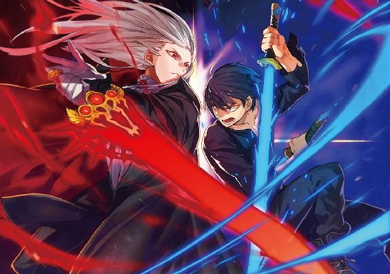
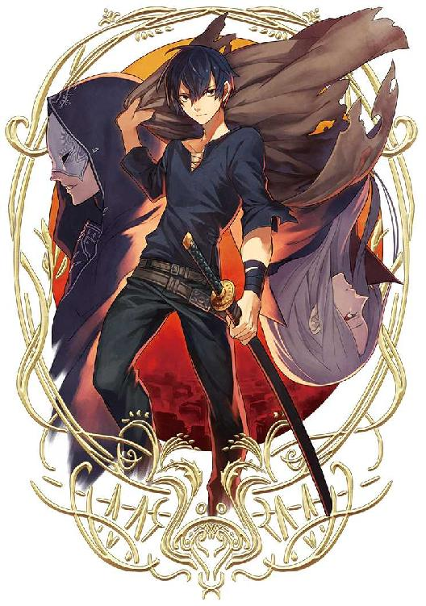
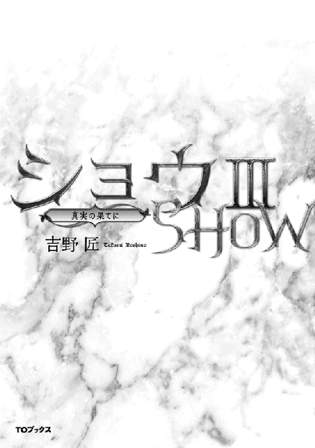
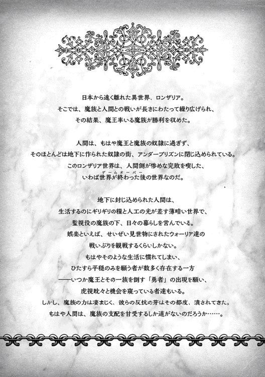
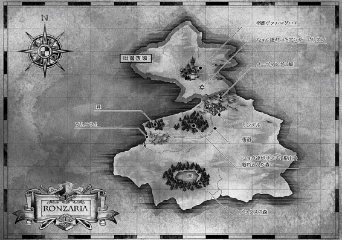
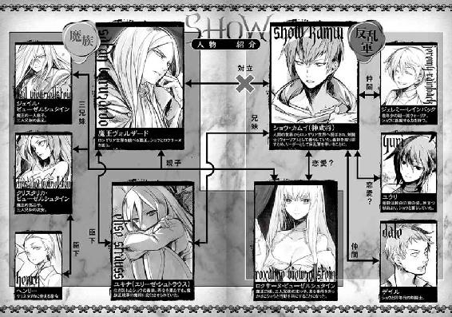
イラスト：天野 英 Hana Amano
デザイン：ヴェイア Veia
マップ制作：藤代 陽 Yoh Fujishiro
序章 反乱軍の躍進
──リランデルとベルザーグという、二人の魔将が率いる魔族軍と、元ウォーリアのショウが率いる反乱軍が激突したのは、既に三十五日前のことである。
死闘の結果、囚人に過ぎなかったレッドクラスが中心の寄せ集め軍勢が、魔将二人の率いる魔族正規軍を倒してしまった。
魔族から見れば木っ端に等しい人間側が、初めといっていい鮮やかな勝利をもぎ取ったのである。
どうやらこの事実は、ショウ達が思う以上に重大な事件だったらしい。
驚くべきことに、戦勝の翌日から早くもポツポツと参入を志願する一般人が集まり、その数は日を追うごとに増えていった。
しかも、志願する者は、なにも最下層のレッドクラスだけではない。
魔族達から「協力的である」と太鼓判を押されたブルークラスやホワイトクラスの人間達まで、ソムニウムにやってきて「俺も（あたしも）魔族と戦う！」などと興奮した面持ちで言い切る始末である。
この流れに、誰よりもショウ自身が驚いていた。
とりあえず、志願兵達の受付を行ってはいるが、それでも反乱軍の主立ったメンバーがすぐに面談できないほど、大勢が続々と詰めかけてくる。
人の気配が消えて久しいゴーストタウンのようなソムニウムが、今や活気溢れる街と化している。
このまま推移すれば、近隣で最も人口の多い街に育つのも、そう遠いことではないかもしれない。
もちろん、ショウ達も座して待つばかりではなく、このソムニウムを拠点とし、大陸内にまだ残る各アンダープリズンを、次々と解放して回っている。
不思議なのは、魔族の反撃もさぞかし激しくなるだろうと覚悟していたのに、なぜかあの戦の日以来、彼らが不気味な沈黙を保っていることだ。
魔王の長子たるジェイルから、「魔族軍内から洩れた情報では、父は即座にここに攻め入るつもりらしい」と直後に聞いていただけに、これはショウ達にとっても意外だった。
ただ、もちろん敵の反応が鈍いのは、ショウ達にとっては幸いだった。
お陰であの戦以後、「反乱軍が魔族を破った！」という情報が、予想外に素早く大陸中を駆け巡ったのだから。
味方が続々と増えているのも、このことが大いに影響しているだろう。
「しかし、どこまでアテにできるのかね」
仮住まいにしている屋敷内の大部屋で、ショウはテーブルに着くなり首を傾げた。
ユキナが休むのを待ってから集まったのだが、メンバーはジェレミーやデイル、それにロクサーヌやユウリといういつもの顔ぶれ以外に、魔族代表としてジェイルが加わっている。
超エリート階級に当たるこの魔族の貴公子は、父親たる魔王に不審を抱いた上、殺されかけたユキナを助けるために第三子のクリスタリカと激突した揚げ句、とうとう反乱軍に加わってしまった。
しかも、彼とロクサーヌを支持する、数少ない魔族兵士達を伴ってだ。
もちろんショウとしては大歓迎だが、あいにく人間が主体の反乱軍にあっては、まだまだ浮いた存在なのは否めない。
そのジェイルが薄い笑みを浮かべて言った。
「まあ、数が増えるのは悪いことじゃあるまい。ただし、敵が送り込んでくる間諜には気を付けないといけないが。この僕がそうしているように、魔族軍側だってそれくらいはするだろうからね」
「......そうですね、笑顔で来るヤツが全員味方のわけはないだろうし」
ショウは懸念を込めて頷く。
「問題は、誰が敵なんて、そうそうわからないってことだよね」
相変わらず、どこぞの貴族みたいな純白のスーツ姿で決めたジェレミーが、期待するようにショウとユウリを見た。
「魔法で真偽を見分けるとかできないかな？ 僕が知る魔法じゃ無理だけど、君達なら」
「不可能とは言わないけど、時間がかかりますね」
ユウリが眉をひそめ、ショウも同意する。
「大事なことかもしれんが、そのために日がな一日拘束されるのも困るよな」
「そこまでしなくても、平気だろ」
軽い口調でデイルが口を挟む。
「そりゃ間諜も混じってるかもしれんが、そんなのは百人のうちに一人もいないって。重要な決めごとは、余人を交えずに行えばいいだけじゃないか？」
「......デイルさんが言うと、深刻な問題でも物凄く単純化されちゃいますね」
なぜかロクサーヌが感心したようにデイルを見た。ひょっとすると、ある意味では本気で感心しているのかもしれない。
「そうあっさりと片付けられても困るんだがな」
「しかし、完全に防ぐ手立てはあるまいよ」
用意された紅茶のカップを優雅な手つきで口元に運び、ジェイルは微妙な笑みで丸テーブルに着く面々を見やる。
「事実、魔族の帝都であるヴァルマグロスにだって、僕の腹心が紛れ込んで情報をくれているくらいだ。肝心な部分は少ないメンバーのみで決めるのが、一番有効な方法かもしれない」
「なっ。俺の言う通りだろうが？」
自慢そうに胸を張り、デイルが破顔する。
ショウが、紅茶入りのカップをぶつけたくなったほどだ。
しかし、二人の言い分も間違ってはいないだろう。間諜を完全にシャットアウトするのは、無理があるかもしれない。
☆
話し合いを終え、ショウはロクサーヌを伴い、ソムニウムの街の巡回に出た。
いや、本当に今宵が巡回の当番なのはショウなのだが、後からこっそりロクサーヌが追って来たのだ。
ソムニウムは、元は長らく遺棄された街である。
大勢の戦士が住み着くようになった今も、少し歩けばたちまち夜の闇と街路が同化し、カンテラ持参でも、足下すら危うくなる。
そのせいか、ロクサーヌは自然とショウに寄り添うように歩いていた。
「く、暗いですわね。今宵は雲も多いので、明かりナシでは歩けませんねぇ」
隠そうとしているらしいが、時折震えているロクサーヌを見て、ショウは首を傾げる。この魔族の姫君が意外と恐がりだというのは、戦神エクスの神殿に同行してきた時にわかっていたことだが、どうも暗がりも苦手らしい。
「暗いところが苦手なら、家に残ってた方がいいんじゃないかな」
控えめに意見したら、なぜか横目で睨まれた。
「べ、別に苦手じゃありませんっ」
そのくせ、腕にすがりついたまま離そうとせず、足早に歩く。
しばらくすると、まるで補足するかのように言った。
「だいたい、最近はユウリさんかユキナちゃんがいつもそばにいるじゃないですか。こんな時でもないと──」
最後の方が聞こえなかったので、ショウは訊き返そうとしたが、ロクサーヌの膨れっ面を見てやめておいた。なぜか怒られそうな気がしたので。
それに、元々仲良く夜の街を散歩するのが目的ではなく、街の警備のための巡回である。余計なことを考えない方がいいだろう。
というわけで、あえて路地の暗がりなどへ目を向けていたのだが、いきなり脇腹に肘鉄を食らった。
「おおっ」
「聞いてますか!?」
「き、効いてる......じゃなくて、聞いてる。いやだけど、今はほら」
──雑談する時でもないしと言いかけ、ショウはいきなりロクサーヌを庇って廃屋の軒下へ下がった。その際、カンテラは足元に置く。
「な、なんですか。よもや、熱い意思表示を」
何か妙なセリフを口走ったロクサーヌに、「しっ」と唇に指を当てて注意する。
「気配が接近してくる。二人......いや、三人か」
最後に素早く上を見つつ、ショウは呟く。
「えっ」
さすがにロクサーヌも押し黙り、自分もきょろきょろと街路を見渡す。
しかし、向こうはある程度気配を消せるらしく、彼女は特に何も感じないようだった。
「特に何も──」
ロクサーヌの言葉と同時に、ショウはいきなり刀を抜き放ち、そのまま逆袈裟斬りに振り切った。
闇の中に輝く軌跡が残り、そして屋根の上から飛び降りてきた男を襲う。
「ぐっ」
一閃した剣撃は見事に相手の右腕を剣ごと斬り飛ばし、男はバランスを崩して大地に倒れる。それでもすぐに跳ね起きようとしたが、ショウが間合いに踏み込んでトドメを刺す方が早い。
真一文字に喉を斬り裂かれ、相手はゆっくりと後ろへ倒れた。
たちまちどす黒く見える鮮血が大地に吸い込まれていくのを見て、ロクサーヌはようやく息を呑む。
「て、敵ですかっ」
「知らんが、いきなり斬りかかってくるくらいだから、敵だと決めつけることにする」
他人事のように言いつつ、ショウは内心ではそれなりに警戒していた。
結果的に一瞬で倒したとはいえ、今の男の腕は悪くなかった。少なくとも、屋根を飛び降りる寸前まで、ショウに気配を悟らせなかったのだから。
ロクサーヌを後ろに庇ったまま、ショウは空き家の軒下から出る。
「なあおい、もしも俺が気付いてないと思ってんなら──」
言いかけた途端、街路を挟んだ反対側の路地から、今度は二人の男が飛び出してきた。一人は両手にダガーを持ち、もう一人は長剣を振りかざしている。
「ロクサーヌも戦いますっ」
宣言と同時に、ロクサーヌが呪文の詠唱を始める。前にも見た記憶があるが、たちまち白銀の鎧が彼女の全身を覆っていった。
ショウは、多少ほっとした。
いや、援護を期待したのではなく、鎧を装着すれば、それだけ怪我する可能性が減るからだ。無論、自分はいつもの服のまま、敵を待たずに自ら突っ込んで行く。
「問答無用というなら、俺も相手になろうっ」
まずは先頭の長剣男の方へ猛然と突っ込む。まさか逃げずに逆に襲ってくるとは思わなかったのか、相手はやや驚いたように足を止めた。
全身真っ黒な服装をした陰気な男であり、髪も短く刈り込んでいる。
目には暗い殺気が漂っていて、あまり普通の剣士には見えなかった。
間合いに入ると同時に、そいつの長剣が唸りを上げてショウを襲った。ショウは躍り込む勢いをいささかも失わないまま、またしても逆袈裟斬りに魔力付与の刀を振り上げる。
敵の剣撃を見事に逸らした瞬間、よろめいた相手の胴を存分に薙いで脇を駆け抜けていた。
「あと一人っ」
一喝してすぐにダガー男の方へ向き直ろうとしたが、あいにく、もはや無用だった。
なぜなら、見覚えのある狼が、白い閃光のようにダガー男を襲い、喉元に食らいついただからだ。
息が洩れるような呻き声を残し、最後のそいつも頽れた。派手な痙攣が全身に及んでいたが、それもすぐに収まり、動かなくなってしまう。
ただ、手にした左手のダガーが最後に苦し紛れに狼の胴を傷つけ、ショウは焦って駆け寄った。
「大丈夫か、ユウリ！」
変身能力を持つ希有な女性である、相棒の脇に屈み込む。
ユウリは目を細めて低く唸り、自分が無事なことを知らせる。即座に変化を解き、元の大人びた女性の姿に戻ってくれた。
「......しかしこのダガー、毒が塗ってありました。多分、本来は掠り傷でも危ないのでしょうね」
路上に転がった、濡れたように光る刃のダガーを見て、呟く。
人外の存在であるユウリにはまるで通用しないはずだが、確かに普通なら無事では済むまい。
「毒が塗ってあったのに、平気なんですか？」
やっと追いついたロクサーヌが一応は心配そうに尋ね......しかし平然と立つユウリを見て、すぐに文句に切り替えた。
「それはそれとして、なんでロクサーヌの敵まで片付けちゃうんですかっ」
「わたしはショウに刃を向けた相手を片付けただけ」
いきなり揉め始めた二人を置いて、ショウは急いで倒した三人を調べて行く。
しかし......三人共、不自然なほど何の所持品も持ってなかった。
銅貨一枚もポケットに入ってなかったほどで、あらかじめ何の証拠も残さないでおこうとする意図が感じられた。
顔立ちも全員、上位魔族の特徴ではないが......しかし、だからといってショウは、これが魔族と無関係だとは思わない。
正直、相手も予想できた。ヤツらは、終始ロクサーヌを恨み、殺気を迸らせていたからだ。
（魔王の第二子、おそらくクリスタリカって娘の差し金だろうな）
以前にもロクサーヌを狙っていたし、まだ暗殺を諦めてはいないのだろう。
「こちらも早めに決着を着けないとな」
ショウは密かに覚悟を決めた。
魔王はもちろんのこと、クリスタリカとも近々決着をつける必要があるだろう。
さもないと、ユキナとロクサーヌの身が危うくなる。
第一章 魔族を覆う闇
暗殺者の出現の後、しばらくは平和な日々が続いた。
警戒をさらに厳重にし、夜の巡回を増やしたお陰かもしれない。
ショウは妹のユキナのためにコルセットドレスを入手して、やっと戦闘スーツから着替えさせてやった。
ウエストを締め付けるこの手のドレスだと、記憶が小学生当時のものに戻ってしまったユキナは嫌がるかなと思ったのだが、元々がほっそりした体型のお陰か、特に苦情は出なかった。
むしろユキナは、レース飾りのついた純白のひらひらドレスを着て、「王女様みたい！」とにこにこしている。兄が新しい服を買ってくれたのが、嬉しいらしい。
「気に入ってくれたならいいけど......ちょいスカート短かったか？ もう少し長いのにしときゃよかったかな」
ザックの店で買ったのだが、あのオヤジの趣味をもう少し考えるべきだったかもしれない。
とはいえ、妹の服装にまで気を回せる余裕ができたのは、喜ぶべきことなのだろう。
これでユキナが本調子なら言うことはないのだが、あいにく彼女は、魔王の第二子、野望の女性クリスタリカによって罠に嵌められ、記憶が八歳当時に戻ってしまっている。
つまり、ショウと元の世界で暮らしていた当時の、ユキナに戻ってしまっているのだ。
心と記憶以外は正常だとはいえ、ショウにとっては頭の痛いことだった。
「おにいちゃん、似合う？」
窓が一つしかない屋根裏部屋の中にあって、ユキナは両手を広げてその場でバレリーナみたいに回転してみせた。
お陰で白銀の髪が舞い上がり、差し込む陽光にきらきら光る。
幸せそうに微笑むユキナは、無邪気な笑顔のお陰か、本当に降臨した天使のように見えた。
おまけに、回転した勢いでスカートがめくれ上がって太股のかなり上の方まで見えてしまい、ベッドに座って見ていたショウはだいぶ焦った。
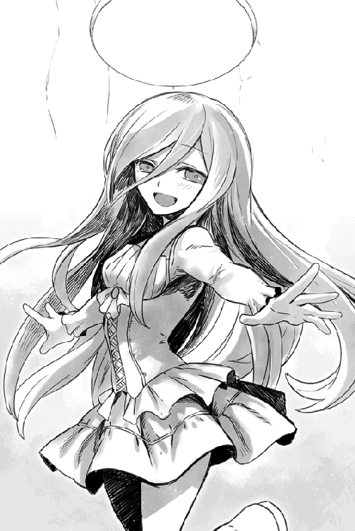
「に、似合うけどだな......その、俺の時はいいけど、他の男の前ではそんな風に動くなよ。おまえ、見かけはもう立派な女の子なんだから」
実際、ユキナは年齢の割には妖精じみたほっそりした容姿だが、それでも戦闘スーツを着ている時は、ショウが目のやり場に困るほどには胸も豊かだった。離れている間に、しっかり成長していたらしい。
まだ幼い頃の妹しか知らないショウとしては複雑な気分だが、これも慣れる他はないのだろう。
「え〜？ ユキナは一人でお外に出ないから、へいきだもの」
笑顔のままで言い切ると、ユキナはそのまま軽快に駆けて来て、当たり前のようにショウの膝の上に座ってきた。飛び込んできたと言ってもいい。
慌てて腰に手を回して支えたが、これも毎回、「年齢も年齢なのに、このままでいいのかねぇ」とショウが悩むところである。
元々は魔王によって洗脳され、魔族軍の魔将として長らくこの世界で暮らしていたユキナである。
あの時の冷徹なユキナにもたいがい驚いたものだが、心と記憶が小学生当時に戻ってしまった今のユキナにも、ショウはかなり戸惑っている。
いつかは元に戻ると信じて面倒をみているが、よくよく考えてみれば、ショウの知るユキナは、あくまで「八歳当時のユキナ」なのである。それ以後、今の「十七歳に成長したユキナ」については、全く何も知らないと言っていい。
ある意味では以前のユキナと同様のはずだが......外見とのギャップが大きいので、やはり違和感は拭えない。
「ねえ、おにいちゃん！ ユキナ、あやとりやりたいな」
兄の困惑になどお構いなしに、ユキナが言った。
きらきら光る瞳をぱっちり開けて、至近からショウを見ている。無造作に膝の上に乗るものだから、またしてもスカートがめくれてエラいことになっているのだが、本人は何も気にならないらしい。
ショウは咳払いしてささっとスカートの乱れを直してやった。
「あやとりか......そうか、おまえ好きだったもんなぁ。俺より全然上手かったし」
髪を撫でながら、笑顔で頷く。
「よし、またザックの店で適当な紐でも入手しておいてやるよ」
そこで思い出し、教えてやった。
「そういや、もうバケツシャワーで我慢することないぞ。風呂が使えるようになったから、今夜あたり、入るといい」
......そもそも、この世界では入浴の習慣を持つ者はごくごく少数であり、生涯にわたって風呂とは無縁で過ごす庶民が大半である。
大抵の者はタオルで全身を拭うのがせいぜいなのだ。それで我慢ならない場合は大きめの木桶に自分で沸かした湯を溜め、貴重品の石鹸で身体を洗う──それが普通だった。
風呂もあるにはあるが、多くは金を払って入る公衆浴場であり、料金も安くはなく、しかもせいぜい街全体に一軒か二軒しかない。小さい街だとそれもなく、どうしても入りたいなら遠出するしかないわけだ。
当然、シャワーなどの設備もなかったが、ショウはそこは自分で工夫して、木桶の底に錐で細かい穴を開け、湯を溜めて頭上に吊るという、簡易的なシャワーをこの仮家内に作ってある。正確にはバケツシャワーとは言えないわけだが、アンダープリズンでも同じ工夫で毎日身体を洗っていたので、ここでもというわけだ。
この工夫は清潔好きのユウリはもちろん、なぜか今も同居中のロクサーヌに大層喜ばれた。今やユウリと交代で、朝と夜には必ず使うほどである。
彼女達やユキナのためにも、ショウはソムニウムに唯一あった元公衆浴場を見つけ、ようやくまた使えるようにしたわけだ。
風呂好きのユキナも当然喜ぶだろうなと思ったが、そこは全くショウの予想通りである。
ただ、少し予想と違ったのは、ユキナはショウの首っ玉に齧り付き、嬉しそうにこう囁いてくれた。
「お風呂大好き！ おにいちゃん、いっしょに入ろうね」
「えっ」
ベッドに横座りしたまま、ショウはぎくりと固まる。
「俺、男だぞ」
「見たことあるし（何をだっ）、そんなの知ってるよ。変なおにいちゃん」
クリスタリカが仕掛けた禁忌魔法のせいで、ユキナの記憶と精神は小学生当時のままなのだが──そのせいか、見る限りでは全く幼女そのものの無邪気な笑顔で、くすくす笑ってくれた。
「いつもいっしょに入ってるもん。忘れたの？」
ユキナがたちまち眉根を寄せる。
子供だけに、気分が変わりやすい。
「い、いや......そりゃ忘れてない、うん。家ではそうだったな」
屋根裏部屋から一階に下りる階段の方で、複数の気配がしていた。
もちろん、ユウリとロクサーヌがまたしても息を殺して盗み聞きしているのだろう。こっちにはその気配はおろか、今のユキナの言葉に動揺して何やら口走っているのまで丸わかりなのだが、二人共、あれで隠れているつもりらしい。
内心でため息をつきつつ、ショウはあくまでさらりと述べた。ユキナには特に何の意図もないのだから、自分が慌てても始まらない......はず。
「まあ......そうだな、うん。兄妹だしな。入ってもいいかもしれないな」
「うふふふ」
たちまち機嫌が直り、ユキナはまた天使の微笑を広げた。
きらきら輝く薄赤い瞳にまるで邪気がないので、今や外見も実際より遥かに下に見える。
「おにいちゃんとお風呂、嬉しいな。結婚しても、ずっといっしょに入ろうね」
「......は？」
今、何やら妙なことを聞かされたような。
いや、言われてみれば、ショウは小学生当時のユキナから、似たようなことをたまに言われていた気がするが。
ガタガタッとまた階段の方で、今度はあからさまにでっかい音がした。
まるで誰かがずっこけるような音だったが、ひょっとして本当にそんな光景が展開されているのかもしれなかった。
ちなみに、声までちゃんと聞こえた。
『今のはどういうことですかぁああ──もがもがっ』
絶叫しかけたロクサーヌの口を、ユウリが手で塞いで止めたな、というところまで、実によくわかる声音である。
いちいち、子供の言うことに反応してほしくないのだが。
しかし、ユキナがいきなり腕の中で顔をしかめ、ショウは別の意味で驚いた。
「どうした？」
「......あのおばさん達、いつもユキナとおにいちゃんがお話してるの、こっそり聞いてるのよ」
「えっ」
正直、これはショウにとっても意外だった。
洩れ聞こえた今の声は論外としても、別にロクサーヌ達はいつもあんな見え見えの盗み聞きをしているわけではない。
普段からそれなりに気配を殺し、バレないように気遣っているのだ。
なのに、それを見破っていた？
「ユキナ......おまえ、気配が読めるのか？」
「けはい？ 人が隠れてるのがわかるかってこと？ もちろんわかるわ。ユキナ、とってもびんかんだもの」
悪びれずにユキナは答えた。
むしろ、少し得意そうでもあった。
「それだけじゃなくて、多分、ユキナはとってもつよいのよ。すっごく力持ちだし、いざとなれば、びっくりするほどすばやいの！ いつのまにかそうなってて、驚いちゃった」
自慢そうに、コルセットが強調する胸を張る。
おまけにショウを見上げて、嬉しそうに言ってくれた。
「もしもおにいちゃんをいじめる人がいたら、いつでも教えてね。ユキナがこらしめてあげるから」
「いや......それは話が逆だろう」
眼下の白銀の髪を手でかき混ぜつつ、ショウの笑顔は引きつっていた。
よくよく考えてみれば、記憶が昔の頃に戻ったとはいえ、肉体的にはそのままなのだ。ということは、今のユキナは相変わらず、魔将としての力を保持していることになる。ずっと日常生活を送っていれば、自分の筋力や素早さに気付いて当たり前だろう。
これはまずいな......とショウは頭を抱えたい気分である。
現状では、幼女がスーパーマン並のパワーを持ったようなもので、先が思いやられる。
今宵の風呂の件も十分まずいし、ショウとしてまた悩みの種が増えた気分だった。
☆
あいにく、安らかな時間はあっさりと終わってしまった。
それというのも、午後になってからデイルが息せき切って、ショウの仮住まいへ押しかけたのだ。
「おい、ショウ！ いるかーっ」
ウォーリアらしくズボンのベルトに剣を吊ったデイルは、アンダープリズンの時と同じく、気安く屋敷のドアを叩いたのだが。
ユウリに案内され、ショウがいる屋根裏部屋を訪れた途端、灰色の目を一杯に見開いた。
「うわっ。こいつはまたかっ」
「なにがまただよ！」
ショウは慌てて膝から妹を下ろし、ベッドから下りた。本当はやることも多いのだが、ショウが長時間留守にすると、ユキナが心細がって泣き出すので、やむを得ないのだ。
無論、そんな事情はショウの都合であり、デイルの目には単に年頃の少女といちゃいちゃする軟弱者にしか見えないのかもしれない。
それは薄々承知しているが、それでもショウはしっかり釘を刺しておいた。
「忘れないように何度も言うけど、ユキナは妹だからな！ 妙な想像するんじゃないぞ」
「いや、それにしたってだな、あまりにも仲良すぎで──」
とか言いかけたデイルを無視して、ユキナが口を挟む。
「妹だけど、しょうらいは結婚するもん」
天使のような笑顔で、さりげなく爆弾を落としてくれた。
立ち上がったショウの腕にしがみついて言うので、この上ない説得力があり、全く冗談には見えなかった。
「こ、この野郎......」
デイルがまた、弾劾するようにショウに人差し指を突きつけ、よろよろと後ろへ下がった。
ユウリも傍らで息を呑んでいるのだが、初めて聞くデイルの方がダメージは大きい。
いや、どうして元々他人だったはずの妹の件でこいつがダメージを受けるのか、それはショウにも謎だったが。
「いたいけな女の子をだまくらかして、夜な夜な押し倒しくさりやがって。おまえはなんてふてぇ野郎だっ」
なぜか半泣きの顔で責められた。
「せっかく味方になったんだから、そろそろ俺が口説こうと思ってたのに、どういうつもりだ、ごらあっ」
「お、おまえこそ、誤解を招くようなことほざくな！ じゃなくて、ユキナとの交際なんか俺が認めんっ」
売り言葉に買い言葉でショウもつい言い返してしまい、余計にデイルが目を吊り上げる始末である。
どうしてだかユウリの顔もずっと強張ったままだし、不思議そうに成り行きを見守っているのは、「口説く」とか「交際」とかの言葉の意味がわからないらしい、ユキナだけだった。
「なんだとおっ。俺のどこに不満があるってんだ、あっ？ 知っての通り、顔も腕も並以上だろうがっ。もちろん夜だって、体力の続く限りがんばるぞ！」
十日は洗ってないように見える、しわくちゃのシャツのまま胸を張り、デイルはふんぞり返る。
兄の立場から見れば、なにげに超不適切なセリフも交じっていた気がして、ショウはいよいよ眉間にしわを寄せる。
「お、おまえな......しまいには平和主義の俺も」
「ユキナちゃんを守っていくのに、俺で何の不足が」
二人同時に一歩前へ出た途端、ユウリが介入した。
「......デイル君」
いきなり呼ばれ、デイルの威勢はぴたっと止まった。
口を半開きにした間抜け顔のまま、ぎぎぎっとユウリの方へ首を巡らせる。
「お、俺のこと......ですか？」
なぜかデイルを君付けしたユウリは、醒めた顔で頷いた。
まったく関係ないが、今宵のユウリは胸の谷間がかなりはっきり窺えるドレス姿で、早くもデイルの目が釘付けである。
「そう。あなたとユキナちゃんがくっつくのは反対しないけど」
「え、それじゃ──」
「反対しないけど！」
喜び勇んだデイルに、重ねて畳みかける。
「今は、何か用事があって来たのでは？」
女性にしては低い声で問われ、デイルはたちまち表情を改めた。
「あ、そうだった！ いかん、エロガキのせいですっかり用件を忘れてた」
「誰がエロガキだよっ」
「なあおい！」
デイルが簡単にショウを無視して、告げた。
「魔族戦士と、仲間のウォーリアが喧嘩しかけてるぞ。ありゃ、殺し合いにならないうちに、止めた方がいいんじゃないか？」
今頃息せき切って教えてくれたデイルに、ショウは頭が痛くなった。
「おまえなあっ」
未だに自分にしがみついたままのユキナを優しく押しやり、控えめな声で怒鳴った。
「──それを先に言えよなあっ」
慌てて仮住まいの屋敷を飛び出し、ショウがソムニウムの街路を走っていくと、それこそ十メートルも行かないうちに怒声やら喚き声やらが聞こえてきた。
後ろから走るデイルの報告が遅れたせいで、事態はだいぶ深刻化しているらしい。
デイルと違って軽々とショウと併走するユウリは、綺麗な眉根を寄せて呟いた。
「一番大きな声で怒鳴ってるのは、ダルトンですね」
「あいつか！ 気のいいヤツなんだけどな」
ショウは唸るように応じる。
ダルトンはショウの呼びかけに応じて参入した一人で、別のアンダープリズンに囚われていた元ウォーリアである。
最も初期の段階で仲間になってくれた男であり、角張った顎に濃い顎髭を持つ、筋骨たくましい戦士だった。普通の人間がウォーリアを思い浮かべる時、だいたい脳裏に描くような人物だと思えば、まず間違いない。
出会った時もいきなりショウに喧嘩を売ってきたほどで、血気盛んな男なのだが、それでも悪戯に騒動を引き起こすようなヤツではないはずだ。
「おぉーい、ちょっと待てよ！ 足が速すぎるぞ、二人共っ。つか、仲間を置いて行くとか、薄情すぎんだろっ」
後ろの方でデイルが叫んでいたが、ショウは振り向きもせずに叫び返した。
「おまえは、ユキナの護衛に残っててくれ！ 後は俺とユウリでなんとかするっ」
「あ、有り難い話だけど、今のユキナちゃんは俺にすげー冷たいんだよっ。以前よりさらに冷ややか〜な目で見るんだぜ。いや、美人はだいたいみんな、俺に冷たいんだけど！」
ユウリに聞かせるためか恨みがましくデイルが怒鳴り返してきたが、ショウはもう相手にせず、駆け足で路地から出た。もちろんユウリも振り返ることなく、ショウに続く。
ああ見えて責任感はそれなりにあるヤツなので、諦めて戻ってくれるだろう。
一番大きな通りに出ると、後は街の出口で向かうか、それとも中央の広場に至るかである。......そして複数の怒鳴り声は、どうやら広場の方からするらしい。
「急いだ方がいいです、ショウ。ダルトンどころか、ロクサーヌの声もしますわ」
「うおっ。マジか！」
ショウは焦ってさらにスピードアップした。
珍しく姿が見えないと思ったら、これである。ちょっと散歩に出ていったと思ったら、もう騒動を引き起こしたらしい。
実際、見る見る近づく街の広場に、きっちり二つの集団に分かれた群衆がいた。
一方はダルトンをはじめとする、他の地方のウォーリア達で......そしてもう一方は、最悪なことにロクサーヌを先頭に魔族戦士達だった。
双方合わせて、五十名はいるだろう。
これはもう、喧嘩の規模ではない。
「最悪だな、くそっ」
ショウは渋面で口走る。
まだここに落ち着いて一ヶ月ほどにしかならないのに、もう仲間割れとは!?
ぼやきたくなる気分だったが、それどころではなかった。
「てめえっ、やる気ならいつでも相手になるぜっ」
などと喚いたダルトンが、なんと腰の剣を抜いたのだ。
これは喧嘩っ早い彼にしても、初めてのことである。
「待て待て、待てーーーっ!!」
ショウは速度を落とさずに広場に走り込み、今にも激突しそうな両者の中間に割って入った。
「ショウ、来てくれたのですかっ」
誰かを背後に庇うようにして立つロクサーヌが、あからさまにほっとしたような顔でショウを見た。
もっとも、ユウリも一緒だと気付いて、たちまち唇を尖らせてしまったが。
「どうしてまた、ユウリさんも一緒に」
「それより、これはどういうことだ......ロクサーヌ？」
ショウは油断なく双方の集団に目を配り、とりあえず一番落ち着いてそうな彼女に問うた。
「寡兵な俺達が仲間割れするなんて、自殺行為だぞ」
「もちろん、よくわかってますわ！」
豊かな胸を張り、ロクサーヌは膨れっ面で答える。
「でも、その方がロクサーヌの仲間を殴ろうとするのです。誇り高い魔族戦士が我慢できることではありません」
ロクサーヌの言う仲間とは、彼女が背後にかばっている、魔族戦士らしかった。
今は平時なので戦闘スーツではなく、普通にシャツとズボン姿だったが、端整な顔には激しい怒りの表情を浮かべている。
主君に等しいロクサーヌの手前、何とか抑えているが、彼もダルトンより冷静には見えなかった。
彼を守るように立つ魔族達も、その点では同様である。
「あのなぁ......せっかく、この狭い街の中とはいえ、魔族と俺達で団結しかけたのに」
「僕は、ただ街中を普通に歩いていただけだ！」
いきなり若々しい声がショウを遮る。
誰かと思えば、当事者の若者だった......魔族側の。
見た目以上に若いらしく、一人称が「僕」である。
「そこへ、彼が大股で歩いてきて、よそ見をして僕にぶつかった。事実はただそれだけのこと。謝る必要があるのは自分の方なのに、彼は逆に僕を不当に貶めようとした」
一語一語はっきりとしゃべり、いささかも悪びれなかった。
さすがに魔王を裏切ってロクサーヌとジェイル側についただけのことはある。もっとも、魔族の上位種はみんな総じて誇り高いのだが。
「ロクサーヌは直接には見ていませんが、通りかかった時、確かに彼は困惑した顔をしていました。少なくとも、あのダルトンという人に喧嘩を売っているような雰囲気じゃなかったです。あの方が一方的に怒鳴っていたのですわ」
いつも喧嘩を止める側のロクサーヌが、珍しく露骨に若者の肩を持つ。
まあ......頭から湯気を立てて肩を怒らせるダルトンと、彼とを見比べれば、無理のない判断かもしれない。
もっとも、一方のダルトンは全然納得してないようだったが。
「んだと、小僧！ 俺一人が悪者かよっ」
早くも抜き身の剣を引っさげたダルトンが、据わった目つきでまた一歩、前へ出る。
ショウの世界で言えばタンクトップに類似した、腕が剥き出しのシャツを着ており、胸筋が目立つ。
ダルトンの背後で同じく魔族達を睨む彼の仲間も、どうも似たような連中が多かった。おそらく、ウォーリアの中でも手強い部類だろう。
騒ぎを聞きつけたのか、ショウの元からの仲間も大勢駆けつけ、両者を見比べた後、なんとなくショウの近くに集まってきた。
その中にはジェレミーもいたのだが、こいつはわざわざショウの耳元に囁いてくれた。
「予想以上にまずい事態だね。ここで仲裁をミスったら、この諍いが我々の分裂に繋がるかもしれない」
しれっと他人事のように言う。
「ガラスのように繊細な俺を脅すな、馬鹿」
ショウは反射的に言い返す。
「震え上がって、チビったらどうする？」
弱った言葉とは裏腹に、ショウは厳しい表情でまずはダルトン側に向き直った。
ここで対応を誤れば、本当にジェレミーの言う通りになりかねない。なにしろ、以前ショウと争った時と違い、ダルトンはもう剣を抜いているのだ。
こうなると、魔族側も収まりがつかないだろう。
「落ち着け、ダルトン。ここは俺の顔を立てて、剣を収めてくれないか」
「......おまえは魔族側に味方するのか、ショウ？」
不吉な声音で、にこりともせずにダルトンが返す。
悪い兆候だった。
「何も訊かずに、いきなり魔族野郎共に味方かよ。あの若造を逃がす気か？」
ダルトンの仲間も、鼻息も荒く追従する。
「そんな気はない。しかし、いま熱くなって相手をとっちめようとしているのは、明らかにダルトンの方だろ？ なら、駆けつけた俺が止めようとするのは当然じゃないか」
「僕は若輩者だが、これでも誇り高き魔族の戦士だ！」
魔族の若者がまた、ダルトン達の言葉を聞いて、自分も前へ出た。
「誰が逃げるものかっ。必要とあらば、名誉にかけて受けて立とう！」
ショウの方を見て、申し訳なそうに低頭した。
「ショウ・カムイ。貴方は尊敬する戦士だし、この仲裁にも大変感謝しますが、僕は逃げる気などありません」
「おうっ、上等だぜ、魔族のチビ。俺とおまえで決着をつけようじゃないか！ それで全てが丸く」
「双方、黙れえぇーーーっ」
街中に響くような叱声を叩き付けると、当事者どころか、全員が驚いたようにショウに注目した。
「いいかっ」
と叫んでから、ショウはやっと我に返り、自分を注視する仲間達を見回した。
この騒ぎがそこら中に聞こえたせいか、いつの間にかソムニウム中の住人が集まったのではないかと思うほど、人垣が厚くなっていた。
一応、リーダー格とされているショウがガミガミ喚く様子を見せると、仲間や住人達の不安を招くかもしれない。
......などと、気配りを忘れないショウは妙なところで躊躇った......ほんの一瞬だけ。
しかし、あまりに腹が立っていたせいか、結局は抑制が弾け飛んで喚いていた。
「おまえらの喧嘩ってのはなぁ、所詮はガキの喧嘩だっつーんだ！ ゴタゴタ理屈つけて、綺麗事を吐かすんじゃねぇええっ」
久しぶりに言いたいことを吐き出し、二人を交互に睨む。
「要はなに一つ辛抱することをせず、自分の意地を押し通そうとしてるだけだろうが！ ケツの青いガキと一緒で、全然かっこよくないぞ。ふざけんなあっ」
「ぼ、僕はっ」
「いや、俺は！」
当事者二人が同時に不服そうに言いかけたが、ショウはにべもなく遮った。
「うるさい、黙れっ。おい、あんたっ」
黙れと言ったくせに、いきなり魔族側の青年をびしっと指差す。
「あんたがここにいるのは、突き詰めて言えば、ロクサーヌと仲間を守るためだろう？ 違うかよっ」
勢い込んで尋ねたせいか、青年は目を丸くしてコクコク頷いた。
「そ、その通りです──が」
「その通りですがじゃないわっ。なら、ここで大乱闘とかやらかして、魔族と人間を決別させるきっかけ作ってどうすんだ！ それともなにか、それは最終的にはロクサーヌや仲間のためになるわけかっ、え、どうなんだよ!?」
畳みかけると、まだ少年っぽさが残る相手は、まじまじと薄赤い目を見開く。と胸を衝かれたような表情でショウを見返したが、ショウはいきなり話を打ち切り、今度はダルトンの巨体へと向き直る。
同じく指を突きつけ、尋ねた。
「おまえにも訊くが、ここへ参入した目的はなんだ？ 仲間を連れてここまで来た目的は？ もちろん、物見遊山のためじゃないだろうがよっ。人間達を解放し、九割が奴隷状態ってみじめな現状を正すためのはずだ。違うかっ」
「い、いや......違わん」
たじたじとなったダルトンが、魔族青年と同じく、何度も頷く。
「馬鹿野郎があっ。なら、ただでさえ少ない味方を、わざわざ分裂させるような真似してんじゃねえっ、ぶっ飛ばすぞ！ 俺は魔族であれば誰であろうと敵という考え方には反対だと前に言ったし、おまえも納得したはずだ。今になって『魔族は許せんっ』なんてダダこねるのは、クソガキの論理だろうがあっ」
腹の底から声を出して怒鳴ると、ダルトンは驚いたようにまた頷いた。
ちなみに、今回は自分が言われたわけではないのに、なぜか魔族青年の方も一緒になって頷いていた。ショウの剣幕に度肝を抜かれたらしい。
「普段、あまり怒鳴らない人が怒鳴ると、効果あるねぇ」
ジェレミーが、隣でこっそり呟く。
お陰でショウはやっと冷静さを取り戻した。だいぶストレスが溜まっていたのか、それまでは日頃の抑制を吹っ飛ばして、ガンガン怒鳴りまくっていたのだ。
「わー、帝王が切れたのって、あんまり見ないよねぇ」
「まあ、たまにはいいんじゃない？ あたいは支持するよ」
「あたしも応援しちゃうっ」
「では、僕も一緒に」
......ついでに、外野で野次馬として集まっていた女性ウォーリア達が、嬉しそうに声援を送ってくる始末である。
どうでもいいが、いつの間にかジェレミーも彼女達に交じっていて、ショウは余計に醒めた。
「えー、こほん」
すっかり素に戻ったショウは、わざとらしく咳払いなどし、「俺の意見は以上だ」などとあっさり説教を終えてしまう。
えー、なにそれえっ？ とか件の女性ウォーリア達が騒いだが、きっぱりと無視した。
「ダルトン、ちょっといいか？ 場所を変えて話したい」
今度は穏やかに言うと、ダルトンは殊勝な顔でまた頷いた。
「お、おう......もちろんいいぜ」
「よし、じゃあそういうことで──」
ショウはなぜかわくわく顔で見守る、喧嘩好きのウォーリア達と、不安そうな普通の住人達に向かい、厳かに告げた。
「騒ぎは終わりだよ！ 以上、解散っ」
当然のような顔で、ユウリやロクサーヌがついて来ようとしたが、ショウは今回は彼女達にも遠慮してもらった。
ただ、ロクサーヌには「例の彼に、言い聞かせておいてくれな」とは頼んでおいた。
「まだ言いたいことがあれば、俺が後で聞くからってさ」
最後に見たあの魔族青年の顔付きだと、もはや騒ぎを起こすような心配はあるまいが、念のためである。
後はダルトンを促し、ショウは彼が仮の住居としている、路地裏の家まで同行した。
ダルトンの家は、屋敷どころか小屋に近いような木造で、寝室すらなく、入ったすぐが居住のための空間で、そこに全てがあった。
全てというのは、廃棄されていたらしいガタつくベッドと、小さなテーブルに椅子である。その椅子すら一つしかなく、ショウはやむを得ずベッドに腰掛けたほどだ。
「この街は空っぽだったし、まだ家はたくさん余ってたと思うんだが？」
「いやぁ、俺はここへは寝に帰って来てるだけだしな。別に狭くても構やしねぇさ」
ダルトンはからりと言う。
確かに、ショウが街中に出ると、かなりの確率でダルトンと会う。大抵は仲間と一緒に訓練中か、あるいは廃墟と化した家を修繕する手伝いをしているか......それとも、仲間同士で馬鹿騒ぎしているかだ。
一見、いつも誰かと一緒にいて陽気な過ごし方に見えるが、ショウは何か事情があるのではと睨んでいた。
なぜなら、ダルトンの笑顔を見ると、いつも本気で笑っていないように見えるので。
一時期の自分と同じであり、ショウはそこも気になっている。
ショウが考え込む間に、ダルトンは無造作に唯一の椅子に座した。
巨体の彼が腰掛けると、とうに寿命を過ぎた椅子がギギイッと嫌な音を立てた。特に気にする様子もなく、ダルトンは深々と頭を下げる。
「それより、さっきはすまなかった」
「えっ......あ、いや」
まさかそう素直に出られるとは思わず、ショウは思わず目を瞬く。
「わかってくれればそれで。俺も、いきなりガミガミ怒鳴りつけて、悪かったよ」
少しためらった後、ずばり訊いた。
「しかし、どうもあんたは魔族をだいぶ敵視してるみたいだが......事情があるのか？」
どうやらショウは、正鵠を射たらしかった。
というのも、尋ねた途端にダルトンがぱっと顔を上げ、迷う素振りを見せたからだ。
「大丈夫だ、誰にも言わない」
わざと先んじて、ショウは頷いてやる。
それで決心がついたのか、ダルトンはやっと語り始めた。
「......実は、俺には娘がいたんだがな、あの戦で、死んだんだ」
ショウは絶句し、ようやく声を絞り出した。
「それは......気の毒だった」
陳腐なことしか言えない自分に嫌気がさしたが、他に言うべき言葉が見つからない。
それと、それなりの年だろうとは思ったが、もはや子供もいたとは思ってもみなかったのだ。
「ああ、気にしないでくれ」
ダルトンは逆に、慌てて手を振った。
「冷静に考えりゃ、魔族そのものに責任はないかもしれん。というのも、俺はアンダープリズンに押し込まれる前は、地上で大工やっててな。当時、もう終戦間近だったんだが、村の住人に頼まれて、よその家に修繕仕事に行ってたんだ。留守の間、まだ八つになる娘をそのまま置いてな......妻は逃げたし、男やもめでなぁ......他に仕方なかった」
ダルトンはため息をつき、遠い目をした。
当時の娘の顔を思い出していたのかもしれない。
「まずいことに、当時、俺の住んでた村には、もう避難命令が出てたのさ。魔族の部隊がそこまで迫っているってんでな。......しかし、村の住人は俺を含めてどこにもいくアテがなかったし、聞いた話じゃ、あの頃はもうそこら中の村に王都から避難命令が来てたそうだ。となりゃ、息せき切って村を逃げても、行くアテもあるまい？ だからほとんどのヤツは村に残ってたわけさ」
静かに首を振り、ダルトンは痛恨の表情を見せた。
「それが間違いだった......本当に、とんでもない間違いだったぜ。王都からの警告は冗談でもなんでもなんでもなく、その日、魔族の精鋭が本当に村を襲ったんだ。原因は、敗走して村に逃げ込んだロンザリア側の兵士達だったけどな。......ヤツら、その敗残兵を燻り出そうと、まずは火矢を放った」
そこから先はショウにも嫌でも想像できた。
あまりに凄惨なので聞きたくなかったが、それでもショウは我慢してダルトンの話に耳を傾けていた。
とはいえ、彼は彼なりに遠慮したらしい。大仰なことは何も言わなかった。
「......後はまあ、想像通りさ」
ダルトンは痛々しい笑みを浮かべ、両手を広げる。
しかし、その手が微かに震えているのを、もちろんショウは見逃していない。
「後から聞いた話じゃ、火矢を放った魔族の連中にとっても、あの火の回りの速さは計算外だったらしい。気付くのが遅れた俺は、仕事なんざ放り出して急いで家へ走ったが、もう遅かった。なにしろ、木造のボロ屋ばかりが立ち並ぶ村だ。火の回りが早くてなぁ。......結局、俺は間に合わなかったよ。凄まじい勢いで村中に火が回っていて、家に近付くこともできなかった」
......結果的にダルトンは、自分の住む村が全焼するのを、ただ眺めるしかなかったらしい。本当は、喚きながら火の中に飛び込もうとしたのだが、村の連中が数名も寄ってたかって止めたらしい。
ちなみに、娘の遺体は最後まで見つからなかったそうな。
あまりに焼死者が多すぎて、区別がつかなかったのだ。
「あの後、いろんなことを考えたよ......実際、いろんなことをな」
ダルトンは小さな椅子に座ったまま、だらりと両手を下げ、中空を眺めていた。
「なんで俺は、あんなヤバい時に仕事なんざ引き受けたのかとか、せめて娘を同行させればよかったんじゃないかとか、ロンザリアの敗残兵はどうしてさっさと降伏して、出て来なかったのか、とかな」
そこでまた、重い息を吐く。
「そして、最後はやっぱりこう思うのさ。......あいつらだ、あいつらが火矢なんか使わなきゃ、少なくとも俺の娘は死ななかったんだ、とな」
「......そうか」
ショウは腕組みして首を振る。
事情を聞かされた後では、簡単にダルトンを責められなくなっていた。大義がどうのと言うが、自分とて例えばユキナなどが同じ目に遭ったら、果たして魔族を公平な目で見られるだろうかと思ったのだ。
無論、全く自信はない。
「なあおい、おまえが落ち込むなよ、ショウ」
ダルトンは居心地悪そうに座り直し、とってつけたように明るい声で言った。
「悩む必要なんざねぇよ。おまえは正しいのさ、ショウ。全員をまとめるヤツが、一方に肩入れなんぞしてたら、集団としての統制なんか取れるわけがない。それがわかっているのに、手を煩わせた俺が間違ってたんだ」
ガラガラ声でこの上なくきっぱりと言い切り、ダルトンはこれまたどこか無理したような笑みを広げる。
「あ、あとなっ。俺が今ここにいるのは、なんたって『いい加減に、今の世の中を変えようぜ！』って思いからなのも、間違いないんだ。だからな、そのためならなんだってやるぜぇ？ 無論、さっきのことだって、後でこっちから謝りに行く。おまえと話してて思ったが、あの若造が魔族じゃなきゃ、俺は多分、あんなに腹を立てなかったはずだ。つまり、結局、俺の器の小ささが、あの騒ぎを招いたってことだ。な、おまえは正しいんだって」
妙に慌てたように捲し立てるダルトンに、渋面のショウもさすがに口元を綻ばせた。
この髭の大男は粗暴なところもあるが、実は人に気を遣い過ぎる面もあるかもしれない。
「......あんたに頼むことにするかな」
ふと呟いた途端、ダルトンはそれこそ飛びついた。
「お、おお!? なんだよ、なんか大事なヤマ──つまり、任務でもあるのか？ おお、そりゃぜひ俺にやらせてくれ。こう見えて、腕っぷしには自信あるぜぇ。いや、おまえの女にはあっさりノサれたけどな。ぐははっ」
やっと本物の笑い声を響かせ、子供のように目を輝かせる。
くるくると表情が変わるところは、本当に子供っぽかった。
「引き受けてくれればありがたいが、ただな、こりゃ結構、キツい任務になりそうなんだ。ほら、俺達は今、各地のアンダープリズンを解放して回ってるだろ？ 当初の予定よりは順調に進んでるんだが、未だに計画通りに行かない場所もあってな」
「それでわかった。ヴァルマグロスの目が届きやすい、北部のアンダープリズンの解放だな？」
「......図星だ」
ショウは思わず肩をすくめる。
ヴァルマグロスとは魔族の帝都であり、大陸北部の魔族の領域に存在する都市だ。
ショウ達がいたアンダープリズンも北部にあったが、それでも帝都からは多少の距離があり、しかもメーヴィング山脈のそばで、南部へ逃げるのも容易だった。
しかし......数は少ないながら、ヴァルマグロスの至近にも人間が閉じ込められた地下の街、つまりアンダープリズンが存在するのである。
人間達の解放が一つの目的であるショウとしては、危険だからといって、諦めるわけにも後回しにするわけにもいかないのである。
その辺りをダルトンに説明し、気が進まないながらも、ショウは続けた。
「それにな......どうも妙な噂を聞くのさ、ヴァルマグロスについてはな」
顔をしかめてショウが述べると、既に行く気満々に見えるダルトンがぐっと身を乗り出す。
「そこまで言ったら、もう話してくれよ、おい。どうせ俺が行くのは決まってんだから」
「いや、俺としちゃ判断の材料にしてほしくて話すんだけど？」
笑ってしまったが、要請に応じて教えてやった。
「最初に言っておくけど、こりゃあくまでもジェイルの間諜が持ち帰った、一種の噂だぞ？ この噂を他言しちゃ困るし、あんたの判断を鈍らせても困る。参考程度に聞いてくれ」
回りくどい説明の後、ショウはずばり告げた。
「ヴァルマグロスの周辺にあるアンダープリズンで、少しずつ人が減ってるらしい」
「人が減る？ そりゃつまり、囚人が街からいなくなるってことか」
ショウの浮かぬ顔を見たせいか、ダルトンはわざとらしく声を潜めた。
「らしいな。ヴィルヘルム城内の、ジェイル一派の一人がもたらした話だが、魔王の命令で、誰かが定期的にアンダープリズンを訪れ、囚人を外へ連れ出すらしい。それはいいんだが、戻って来たヤツがいないそうだ」
「態度のいい囚人を、ブルークラスにするとか、あるいは解放してるとか？」
自分でも信じてない口調でダルトンが指摘する。
敗戦後の人間は、上はブルーから下はレッド（ショウ達のことだ）クラスまで、屈辱的な分類をされ、一種の身分制度となっているが、ダルトンはつまり「アンダープリズンから地上へ出すなら、身分を上げたんじゃないのか？」と言いたいわけだ。
「俺も一瞬、そう思ったが、どうもそんな単純な話じゃないらしい」
ショウは首を振った。
「その情報提供者によると、近隣の村や街に、連れ出されたその囚人達が来た形跡がないんだとさ。つまり、アンダープリズンから出て行ったヤツらは、基本的に行方不明になっちまう。完全に消えてしまったわけだ」
ダルトンが難しい顔で顎髭を撫でるのを見て、ショウは頷く。
「気持ちはわかる......どうも気になる話だよな。仮にこの話が本当だとしても、今のところこの妙な事態は、ヴァルマグロス周辺のアンダープリズンに限られている。まあ、だからこそ、これまでは聞かなかった噂かもしれないんだが」
「わかった。その調査も任務のうちってこったな!?」
ダルトンが察しの良いところを見せた。
「ああ。本当は俺が直接行こうかと思ってたんだが、どうもジェレミーなんかに止められてなぁ」
「そりゃそうだ！ おまえは駄目だろっ」
ダルトンが呆れたように大声を出した。
「今は時期も時期だぜぇ？ いつ魔王がヴァルマグロスを出て、こっちに南下してくるかもしれないんだろうが。前にそのジェイルとやらが、そう洩らしてたそうじゃないか」
「いや、あの戦いの直後に、そういう情報も届いてたけど、どうも今は向こうでもゴタゴタが起きたらしくてな」
ショウは眉根を寄せる。
魔族側については情報が錯綜していて真実を見極めるのが難しいのだが、どうやらあちらでは、魔王がすぐに出陣できなくなるほどの、なんらかの齟齬が生じた可能性が高いようなのだ。
なぜなら、魔将二人との激突から、もう三十五日が過ぎている。
魔族側にはある種の魔法陣を使った素早い情報の伝達方法があり、あの戦直後はジェイルの息が掛かったヴィルヘルム城（帝都の城だ）内の間諜が、「魔王は敗戦に激怒し、今にも出陣する可能性あり！」と伝えてきた。
ところがその後の情報によると、魔王ヴォルザードは自軍にも何の説明もなく、出陣を延期したそうだ。
何かのっぴきならない事情が生じたのでは？ とショウが疑うのも、そこである。
「さすがに魔王の様子が妙なのは、囚人が消える話とはまるっきり無関係だと思うが、とにかくヴァルマグロス周辺についちゃ、どうしても詳しく調べてみたい。ジェイルの間諜は、別にアンダープリズンに潜り込んで調べてくれるわけじゃないしなぁ」
「よしよし、なら俺が行こうじゃないか、俺が！」
先程の悲痛な表情が消し飛び、ダルトンの顔はやる気に充ち満ちていた。
「アンダープリズンを解放するついでに、そっちの謎も探れたら探ってくる」
ショウは「鬱々とここで時を待つより、働いてもらった方がいいのではないか」と考えたのだが、それは正解だったらしい。
「そうか、じゃあ悪いが行ってくれるか？」
ショウはほっとして笑みを広げた。
危険ではあるが、そこは彼につけるメンバーを熟考することで、何とかなるだろうと思った。どのみち、誰かが行かなければならないことでもある。
「まあ、俺は俺で気掛かりなことがこっちにあるんで、じゃあ頼めるかな」
「おおよ！ つーか、こっちで気掛かりなことってなんだ？ なんだったら、それも俺が片付けるぜぇ？」
ダルトンがなぜかわくわく顔で訊いたが、ショウはこれについては曖昧な笑みを浮かべてはぐらかせた。
さすがにこの件は人に任せられないし、打ち明けられる類のものでもない。
......どうも最近、俺は誰かに見張られている気がする、などとは。
第二章 消えた囚人達
魔王ヴォルザードはまさに出陣寸前だった──はずだ。
今やヴィルヘルム城（帝都の城）内で健在な唯一の血筋である、第二子のクリスタリカも、それは間違いなく確認している。
なにしろ、日頃は理知的な魔王が、わざわざ謁見の間に諸将を集め、「人間達の愚かな反乱を叩き潰す！」などと檄を飛ばしたほどだ。
しかも今回は余人に任せず、自らが出陣する──とまで公言していた。
にもかかわらず、なぜか彼は数日後には「一時、出陣を見合わせる」などと、簡単に言を翻した。
実はこれは、希有な出来事だと言っていい。
魔王......つまりクリスタリカの父は、一度宣言したことを簡単に取り消すような男ではないからだ。
魔王という立場上の問題もあるが、これまでは頑固なまでに己の方針を貫いてきた。
「それが、『やっぱりやめた』なんて日和るのは、よほどのことがあったと見るべきよ」
なまめかしいビスチェとタイトなミニという相変わらずの格好で、クリスタリカは呟くように述べた。
ここは、ヴィルヘルム城内に与えられたクリスタリカの私室である。
父の開戦宣言後の彼女は、「おまえも戦に同行せよ」と父に言われたお陰で、帝都内の屋敷には戻らず、ずっと城内に留まっていたのだ。
いや、もはや戦が延期になったのだから、屋敷に帰ろうと誰も文句を言わないはずだが、今やクリスタリカは自分の意思で城内に留まっていた。
無論、父たる魔王の態度に、不審を抱いたからだ。
「ヘンリー、わかってるわね？」
クリスタリカは、血のように赤いビロード地のソファーにしなだれかかるように座り、家令のヘンリーを見た。
ただし、その瞳はいつも以上に冷ややかで、笑みの欠片もない。
理由は明らかで、「ロクサーヌの首を持って来なさい」という彼女の命令を、ヘンリーが実行できなかったからだ。
まあ、ヘンリー自身に言わせれば、ロクサーヌが反乱軍の中枢にいることから考えても、かなり無理のある命令だと思うのだが、この女主人にそう抗議したところで、もちろん無駄である。せいぜい、殴られるのがオチだ。
一応、それ以後も金を払って暗殺のプロに依頼し、そちらの任務も遂げようとしているところだが......未だ吉報はない。
「ちょっと聞いてるのかしら、ヘンリー！」
クリスタリカが苛立って重ねて述べ、ヘンリーは慌てて低頭した。
「ええと、つまり陛下の動向を探れ──ということでしょうか？」
「そう、そういうことよ！」
ようやく機嫌を直したクリスタリカが、破顔して足を組んだ。
眼前に立つヘンリーを試すようなタイミングであり、角度だった。
その妖艶な魅力に心を奪われかけてしまう。だが、主人の意図を正確に読んでいるヘンリーは、後ろ手に腕を組んだまま、意識して微動だにしなかった。
興味などない......ないったらない。
髪を含めて服装までが真紅のクリスタリカから目を逸らし、無理にもそう思い込んでおく。彼女はやたらと赤い色を好む傾向にあり、この広大な私室にある家具も、全部同じ色で揃えている。まさに部屋中が血の色だった。
「日頃から無駄に余裕ぶっこいたあのクソ親父が、一度宣言したことを簡単に引っ込めるはずがないわ。絶対、なにか後ろめたい事情があるに決まってるのよ」
......クリスタリカの疑いも、反乱軍を率いるショウへの疑念も、ある意味では共通しているのだが、もちろんここにいる二人はそんなことは知らない。
家令であるヘンリーは単純に、「また難題を押しつけるつもりだな、この人」と内心で閉口していた。
ただし、自分も小耳に挟んだことがあるので、ふとその件が口をついて出た。
「そう言えば、僕も陛下に関しては妙な噂を聞きました。なんでも特定の魔将にのみ、いつも妙な命令を下すとか」
言った瞬間にしまったとヘンリーは思った。
というのも、クリスタリカはたちまち興味を示し、薄赤い瞳を爛々と輝かせたからだ。
「なにそれっ。モロに怪しいじゃない！ どうして今まで黙ってたの！」
「いえ......あくまで噂で、別に僕自身が確かめたわけではないのでその──」
「それなら、今から調べなさい、その噂とやらを重点的に!!」
クリスタリカは言い訳を遮り、きっぱりと命じた。
しかも、身軽にソファーから立ち上がるとつかつかとヘンリーに歩み寄り、わざとらしくスーツの腰に手を回して掻き抱いてきた。
胸の鼓動が高鳴りはするが、この主人に仕えて長いヘンリーは、嫌な予感がした。
「ねぇ、ヘンリー。あたしはね、おまえが妹の首を持ち帰らなかったことを、いつまでも怒ってるわけじゃないのよ」
耳元に温かい息がかかり、クリスタリカが囁く......猫撫で声で。
「魔族の上位種とはいえ、そりゃ失敗もあるわよね、ええ......あたしは理解しているつもりよ。でも、前回の汚名を挽回する意味でも、今度こそがんばってくれるわよね？ 首尾良く親父の秘密を探り出せば、可愛がってあげてもいいのよ」
抱き締められて背中の辺りをさすられ、ヘンリーはぼおっとなった。
おまけに、背丈の差がありすぎて、顔は主人の胸に埋まっているようなものである。
「は......はい......僕、がんばります」
掠れた声でそう返すのがやっとだった。
「期待してるわ、ヘンリー」
クリスタリカは甘い声で囁いた後、いきなり態度を豹変させた。
「少なくとも、次は朗報を持ち帰ることね、この役立たずっ」
言下に、抱き締めた両腕に恐ろしい力を込める。
それこそ、城内の石柱ですら砕くようなパワーだった。たちまち背骨が悲鳴を上げ、ヘンリーはクリスタリカの胸に顔を埋めたまま、悶絶しかけた。
その少し後、魔王ヴォルザードは自らの執務室で、魔将からの報告を受けていた。
魔将フェルタクス......かつては十三名いた魔将のうち、ある意味では最も腹心と言えるかもしれない男である。なぜなら彼は、魔族の中でも知る者が極少ない、魔王がひた隠しにする秘密を知らされていたからだ。
もちろん、ヴォルザードが個人的に家族の話などをするのも、このフェルタクスを相手にする時が多かった。
「......どうも、クリスタリカは予の行動を怪しんでいるようだな」
「驚くには当たらないかと」
席に着いたままのヴォルザードがため息をつくと、フェルタクスは気の毒そうに目を瞬いた。
長い髪を後ろで無造作に束ねており、見た目は（人間の）壮年くらいに見える。しかし、実際はもはや魔族としても老齢であり、長年の経験が顔にそのまま現れたような、実に深沈とした男だった。
ヴォルザードと気心が知れた彼も、しかし今回ばかりは実に遠慮がちに尋ねてきた。
「あのお方はおそらく、陛下の周辺を調べようとなさるでしょう......なにか手を打ちますか？」
「そうするつもりだ」
ヴォルザードは、レース飾りのあるシャツにクラバットという姿の臣下を見やり、きっぱりと述べた。
「ただし、そちらは予がなんとかする。おまえは帝都付近のアンダープリズンを回り、必要な人数を集めてくれ......もちろん、予の言わんとするところはわかるな？」
ヴォルザードは、忠実な臣下を見上げる。
もちろん、フェルタクスは「ははっ」と敬礼でもって応じてくれた。ただし......彼ほど自制の利く男でも、内心の嫌悪感を完全に隠せてはいない。
それを責めようとは思わないが、ヴォルザードはつい付け加えてしまった。
「フェルタクス、おまえの気持ちはわかるし、予も同じ思いだ。しかし、これは必要なことなのだ......今更だが、わかってくれると嬉しい」
「もちろんでございます、陛下。このフェルタクス、人間達との大戦以来、陛下がどれほど苦しんでこられたか、誰よりも存じているつもりです」
「うむ。事情を知ってなお、理解を示してくれるおまえには、予も感謝している。嫌な役目を押しつけることになったが、いつも黙々と応えてくれて、嬉しく思うぞ。予定された人数が集まれば、その後はおまえも、南部のアンダープリズンで鎮圧任務に当たってくれて構わぬ」
ヴォルザードは心からの感謝と共に述べた。
「予も、いつまでもこのままにはしておかぬ。必ず他の道があると思う故な」
「わかります......そのためにも、調査も並行して行わねばなりますまい」
「もちろんだ」
ヴォルザードは大きく頷く。
未来のための手は打っておかねばならない......絶対に。
やがて、フェルタクスは任務のために執務室を辞し、ヴォルザードがほっと息を吐いた途端──また警備兵が顔を出し、新たな訪問者の来訪を告げた。
入れ替わるように姿を見せたスーツ姿の男......いや、少年を見て、ヴォルザードは端整な顔に皮肉な笑みを浮かべる。
「出頭、ご苦労。いきなりで驚いたか？」
「は......それはもう」
クリスタリカの屋敷で家令を務めるヘンリーは、もう最初から警戒心が窺える表情で低頭した。
まあ、主人の部屋から出た直後にいきなり警備兵達に囲まれ、有無を言わさずここまで連れて来られたとあれば、内心で怯えて当然だろう。
とはいえ、ヴォルザードにとっては計算通りだった。
このヘンリーが娘のクリスタリカの命令の下、どんなことをやってきたか......全部とは言わないまでも、そのほとんどを把握しているのだ。
クリスタリカの方はまさかと思っているだろうが、こう見えてヴォルザードは、娘に対してでさえ厳格に対処する父親なのだ。
飾り彫りが施された年代物の椅子に深くもたれ、ヴォルザードは額に汗したヘンリーをじっと見つめる。しばらく間を開けた後、いきなり先制した。
「我が娘、ロクサーヌを暗殺しようとするとは、貴様はよい度胸をしている」
ヘンリーの顔が強張るのが、はっきりわかった。
一瞬、身を翻して逃げ出す素振りを見せたが、無論この城内では無駄である。それを重々知るだけに、彼はすぐに逃走を諦め、代わりに顔中に脂汗をかいた。
「予に知れないとでも思ったか？ 手間のかかる娘であるクリスタリカに、監視の目をつけてないとでも!? だとすれば、貴様達は、予を相当に甘く見ているようだ。自分の血筋を殺そうとした者に対し、予は笑って済ませるつもりはない......断じてな」
ゆっくりと自分の瞳が真紅に染まっていくのを、ヴォルザードは他人事のように意識する。
「あ、あああれはっ、あれはクリスタリカ様の──」
「娘の命令であろうと、おまえの命を救う足しにはならぬ」
ヴォルザードはにべもなく言い捨てた。
「かつて、おまえと同じようにロクサーヌを暗殺しようとする者も皆無ではなかった。ロクサーヌ自身も覚えていないほど、昔の話だがな。その時、予が犯人をどう遇したか、知りたくはないか？」
汗まみれのヘンリーの返事を待たず、ヴォルザードは素っ気なく言い捨てた。
「衝動に任せ、その者の首をもぎ取ってやった」
事実、魔王の怒りに触れた裏切り者は......悲鳴を上げる暇もなく、世を去っている。
ヘンリーは落ち着かない目できょときょと執務室の中を見回し、最後に恐る恐るヴォルザードに目を戻した。
派手に喉を鳴らした後、ようよう尋ねる。
「ど、どうすれば罪を濯ぐことができましょうや？」
「......話が早いのだけは、褒めてつかわす」
ゆっくりと執務机の上に両肘を立てて手を組むと、ヴォルザードはそこに顎を乗せてヘンリーを睨め付ける。
「予の犬になるか、さもなくばここで首を差し出すか......好きな方を選ぶがよい」
一拍置き、さらりと付け足した。
「強制はせぬぞ。後者を望むなら、予が直々に冥界へ送ってやろう」
──さあ、どちらにする？
ヴォルザードはこの上なく静かな口調で尋ねた。
すっかり血の気が引いたヘンリーを下がらせると、ようやくヴォルザードは深々と息を吐いた。
途端に、嫌な記憶が蘇り、自然と顔をしかめてしまう。
そう......十一年前、夏を迎える直前の今頃、ヴォルザードはそれまで上手く付き合っていた人間達と戦う決心をしたのだ。
きっかけとなった場所も、同じこの執務室だった。
魔将のフェルタクスがふいにこの執務室を訪れ、ヴォルザードにこう述べたのだ。
「奇妙な訪問者が、陛下に謁見を求めております」
......今でもはっきり覚えているが、確かそういう言葉だった。
全てのきっかけは、彼のこの一言だと言ってもよい。
言われた時、ヴォルザードは我ながら不審感を覚えて忠実な臣下を見上げた。
「フェルタクスよ、聡明なおまえにしては、不明瞭な言い方をするではないか。奇妙とはいかなる意味だ？」
「も、申し訳ありませぬ」
今と変わらず忠実な彼は、いかにも恐縮そうに身を縮め、低頭した。
「実のところ、かの者は正式な手続きを経て、このヴィルヘルム城を訪れたのではありません。私が私室へ戻ると、いつのまにか部屋にいて──」
「──待て！」
ヴォルザードは顔をしかめ、厳しい目つきで彼を見た。
「それでは、れっきとした侵入者ではないか！ そもそも、警備厳重なこの城に、どのようにして入れたと申すか？」
「それがわからないのです、陛下」
フェルタクスは、自分も困惑したように両手を広げた。
「その経緯も奇妙ですが、彼自身が非常に怪しい風体で......あ、いえっ」
ヴォルザードの目つきを見て、フェルタクスは慌てて付け加えた。
「もちろん、その訪問者に関しては今は我が私室に閉じ込め、外の廊下は部下に見張らせています」
「......ふむ？」
いよいよ疑惑が増して、ヴォルザードは眉根を寄せた。
フェルタクスにしては、処置が甘すぎる──そう思ったからだ。
そもそも経緯を聞けば、その者はれっきとした不審者であり、城内への侵入者である。であるからには、すぐに捕縛して地下牢に叩き込むのが当然だろう。
訪問の意図など、その後で審問して訊けばよい。
なのに、そいつをただ自分の部屋に閉じ込めただけで満足した？ この、万事に慎重なフェルタクスが？
ヴォルザードは腹を立てるより、むしろ忠実な臣下の身を案じた。どう聞いてもまともな話ではないのに、彼自身はそのことに気付いてないようなのが、いかにも妙だ。
「それで、おまえがその者を予に会わせたいと思った理由はなにか？」
「......は？」
「は、ではないぞ？ 会わせる必要があると思ったからこそ、予に告げに来たのであろう。まさかおまえが、その者の都合を重視したわけではあるまい？」
「あ、いえ......そうではなく......いかにも怪しいのでその」
フェルタクスは渋面で考え込み、しきりに首を振った。
揚げ句の果てには、「とにかく、一度お会いすればわかります。陛下は会う必要がありますから」などと、世迷い言に等しい説明を吐き出す始末である。
こうなると、ヴォルザードとしても動かないわけにはいかない。
このフェルタクスをどのようにして、おそらく本人にも気付かせずに惑わせたのか、自分自身で確かめる必要がある。
「おまえは確か、彼と言ったな？ よかろう、会おうではないか、その奇妙な男に」
ついに立ち上がり、ヴォルザードは自ら率先して執務室を出た。
その際、誰か応援を呼ぼうなどとは、考えもしない。
対処するのは、ヴォルザード自身の方が間違いがないだろう。
......それはいいが、廊下に出た途端、べそをかきながらこちらへ走ってくるロクサーヌとかち合った。
娘の後ろを困り顔の警備兵がついて来ていたが、ヴォルザードは苦笑して手を振った。
「よい、予に任せよ」
「はっ」
兵士を下がらせ、ヴォルザードは腰を屈めて飛び込んで来た娘を抱き留めた。
「お父さまぁ〜！」
「うむ、どうかしたかな？」
つややかな銀髪を撫でて尋ねてやると、白いチュニック姿のロクサーヌは、可愛らしく頬を膨らませて訴えてきた。
「ジェイル兄さまが城をお留守にしたとたん、姉さまがロクサーヌをいじめるのっ」
ぷりぷりして言う。
「遊んでくれないだけじゃなくて、姉さまはロクサーヌに『邪魔だから消えなっ』なんて言うのよ！ 姉さまきらいっ」
「......そうか」
微かに息を吐き、ヴォルザードは返す。
クリスタリカがロクサーヌの存在を疎ましく思っているのは知っているが、どうもこのところ、その態度が目に余るようになってきた。
元より、外見は年若いとはいえ、クリスタリカとロクサーヌでは数十年の年齢差があるし、あれの性格からして、幼女の相手が性に合わないのは無理もないかもしれない。
ただし、クリスタリカがロクサーヌに冷たいのは、他にも理由があるだろう。
たとえば、「消えなっ」というのは、あれの文字通りの本音ではないのか？
そう思い至り、ヴォルザードは人知れず不安を覚えた。
覇気のありすぎる第二子のクリスタリカについては、既に危険な兆候が窺える。
あれとて、魔族の基準では大した年齢でもあるまいに、早くも後継者の座を狙っているようなのだ。ロクサーヌと違って全くヴォルザードに懐かないし、将来が思いやられた。
やはり、保険をかけたのは別の意味でも正解だったかもしれない。
「野望を持つのが悪いとは言わぬが」
「え、なぁに、お父様？」
甘えるように尋ねるロクサーヌは、しきりにヴォルザードにまとわりつき、遊んでほしそうな表情を見せた。
微笑して彼女を抱き上げてやり、ヴォルザードは言い聞かせた。
「クリスタリカが相手にしてくれないなら、ジェイルが戻るまで、メイドにでも遊んでもらいなさい」
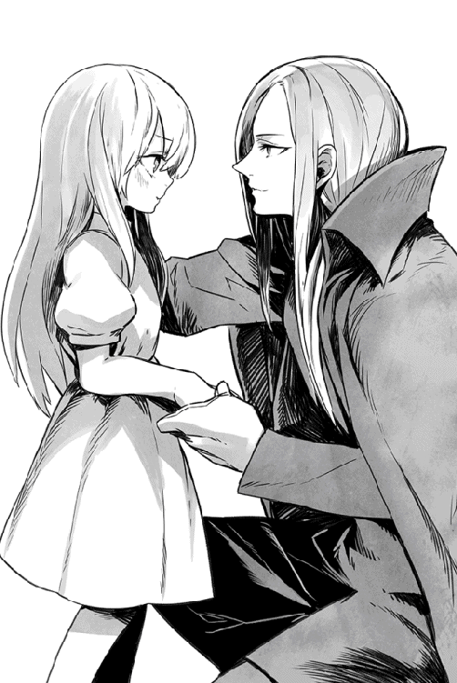
「......いいけど」
とロクサーヌは上目遣いの目でヴォルザードを見やる。
「ジョアンヌたちと遊ぶと、なにをやってもわざとロクサーヌに負けるんだもの。つまんないわ」
ちなみに、ジョアンヌとは、ロクサーヌ付きのメイド頭である。
「ははは......そうか、それはいけないな。よかろう、後で予からも言っておこう」
「あ、おこらないであげてね、お父さま。ジョアンナたちはロクサーヌのことを思ってやってることだから」
「うん、わかっている、わかっているとも、ロクサーヌ」
娘の優しさに、ヴォルザードは胸が温かくなる思いだった。
お陰で、つい洩らしてしまった。
「いずれ、おまえにも新しい妹ができるはずだ。その時は、クリスタリカを見習わずに、ちゃんと優しくしてあげなさい」
「え、ほんとう!?」
たちまちロクサーヌは大きな瞳を輝かせた。
気が昂ぶったためか、ゆっくりと瞳が真紅に染まっていく。
「妹ができるの？ ロクサーヌに？ いつ、ねえいつ、お父さま!? ロクサーヌ、その子といっぱいいっぱい遊んであげる！ ずっと女の子のお友だちもほしかったの！」
熱心にヴォルザードの服を摑み、揺さぶる。
「ねぇ、お父さまってば！」
「ははは......これは困ったな」
事実、余計な失言を洩らしたため、ヴォルザードはその後もなかなか娘に解放してもらえなかった。
「......非常の手段については、まだロクサーヌ様にはお知らせしないのですか？」
ようやくロクサーヌを自分の部屋に帰した後、先を行くフェルタクスがぽつりと尋ねた。
彼らしく、もって回った言い回しである。
「いつかは知らせねばと思っている」
ヴォルザードは静かに答えた。
失言故に、先程の件はロクサーヌの記憶から消しておかねばなるまいが──そう、いつかは真実を告げねばならないだろう。
いつまでも身内の存在を隠すのは、得策ではないかもしれない。
「だが、今は伏せておいた方がよい。世界はもう忘れかけているようだが、我々は決して安全ではないのだ......万一の時には、魔族を滅びから救う者が必要だ。おまえも、事情はわかっているはずだぞ」
ぼそりと告げると、フェルタクスの逞しい肩が一瞬だけ震えるのがわかった。
もはや魔族内でも普通の庶民はおろか、魔将といえども遥かな過去を知らぬ者は大勢いるが、フェルタクスは魔王と並び、魔族内でも数少ない「当時を知る者」の一人である。
当然、魔族の危うい立場はわかっているだけに、無言を貫いた。
彼とて、いわば「保険をかける」ことの重要性は、重々承知しているのだ。
以後、二人共無言で歩き、やがてフェルタクスが城内に持つ部屋の前まで来た。
彼の部屋はヴィルヘルム城の三階にあったが、不思議なことに石廊下に人の気配はなかった。この階には魔族の要人達の部屋が多く、普段なら少なくとも使用人などが忙しく行き来しているはずである。
「......そう言えば、おまえはその者を見張らせていると言わなかったか？」
ヴォルザードはふと思い出して顔をしかめた。
「警備の者など、特にいないように見えるが？」
愚かしいことに、フェルタクス自身も呆然としていた。
「確かに、都合三名も見張りにつけたはずなのですが」
「しかし、現実にいない。......おまえがまやかしにかかっているのか、それとも何らかの事情があるのか。いずれにせよ、あまりよい事態ではないな」
ヴォルザードはかえって冷静になり、自らドアの前に立った。
「フェルタクス、おまえはここで待機せよ。予が自ら調べてみる」
「し、しかしっ。危険があるなら私が」
「よい！」
前へ出ようとする忠実な臣下を、ヴォルザードは目で抑える。
「いいから予に任せて、ここで待て。これは命令だ！」
強く命じ、ヴォルザードはドアを開ける。なぜか、鍵すらかかってなかった。
用心深くドアを開けると、ヴォルザードは素早く中へ入り、後ろ手にドアを閉めた。
誰が待ち構えていようと、どうせ自分の敵ではないだろうが、それでも慎重にざっと部屋の中を見渡す。
そいつは──まさにカーテンの影から染み出すような唐突さで、ふらりとヴォルザードの前に立った。
最初からそこにいたのかどうか、後から考えてもどうしても思い出せなかった。
陰気な黒いローブを羽織っており、頭までフードで隠している。
何よりも不気味なのは、目の周囲を金属製の部分マスクで広範囲に覆っていた。あと少し大きければ、実際に仮面を被っているように見えただろう。
目元を隠しているせいで、高い鼻梁と口元しか見えないのだ。
そこだけを見るなら、線の細い麗人にも見える──のだが。
あえて顔を隠すところに不審を抱き、ヴォルザードは今回、初めて腰の魔剣に手をやった。
なぜなら、古い記憶を刺激されたからだ。
「予に謁見を求めたそうだが？」
ヴォルザードは厳しい声で問うた。
「どうも、予の臣下を惑わせた形跡もあるようだが、素直に話してもらおうか！」
「他人を惑わせる術は、おまえも持っているはずだ、魔王ヴォルザード。古より受け継いだ力の一つだったはずだが、ざっと見たところ、この力は魔族の中でも失われつつあるようだな......当時を知るはずのあの魔将にしてからが、我が力に容易く落とされたしな」
しゃがれた声を聞き、ヴォルザードの表情はさらに厳しく引き締まる。
話し方も傲慢だが、それより「古より......」などと古い話を持ち出したのが気に入らない。
「予を愚弄する気か、貴様」
ヴォルザードは不吉な声音で返す。
「誰を前にしているのか、よく考えた方がよいぞ」
「同じ言葉をそっくりそのまま返そう、代理者よ」
言われた途端、ヴォルザードは初めて息を呑んだ。脳裏に、今ではほとんど知る者もいない、嫌な記憶が弾け、視線が揺らいだ。
......そ、そんなはずはない！ まさかそんなはずはっ!?
夢であれかしと思ったものの、男は距離を置いたままにいっと不気味な笑みを洩らし、ゆっくりと目を隠したマスクに手をかけた。
「疑っているようだな？ ならば、我が正体を明らかにしよう......満更、知らぬ仲でもないはず故」
そして、男は完全にマスクを取り去り、顔を露わにした。
──あの日から、悪夢が始まったのだ。
夢想から醒めたヴォルザードは、執務室の中をうそ寒い目つきで見渡す。
今にもあの男が現れそうな、嫌な気分になったからだ。
おそらく誰も信じないだろう......魔族を率いる最強の魔王その人が、こともあろうに誰かの影に怯えるなどと。
「これで正しかったのか」
ヴォルザードの口から、思わず独白が洩れた。
彼らしくもない愚痴に等しい言葉だったが、それに気付いた後も、ヴォルザードは訂正しなかった。
事実、あの日を境にヴォルザードは人間を敵に回して戦うことを決意し、結果、王族内部までもが分裂し、ロクサーヌやジェイルが城を出て行くことになった。
今残っている彼の親族は、野望の娘、クリスタリカただ一人である。
「まさに、血塗られた道になりそうよな」
ヴォルザードは疲れたように呟き、天井を仰ぐ。
いつかは、子供達に全てを話さねばならないだろう。
しかし説明したところで、どうせジェイル達は納得するはずもない。なぜなら三人の兄妹はもちろん、革命気取りの人間達も全員、世界に潜む真の闇を知らないからだ。
彼らに見えているのは、眼前の些事にしか過ぎない。
「やはり、予が汚名を被るしかあるまい」
ヴォルザードは首を振り、また息を吐いた。
フェルタクスのように秘密を共有する者はいても、今の彼の代わりは誰もいない......本当に誰も。
☆
魔族達の領域へ侵入するのは、案外簡単だった。
ショウに繰り返し繰り返し、「十分、気を付けるんだぞ」と注意されたが、ダルトンをリーダーとする十数名が再びシェラザード山脈を越えるまで、障害らしい障害はなに一つなかったと言ってよい。
反乱軍が先日の戦いで鮮やかな勝利を収めたためか、地上の人間達も反乱軍に協力的になり、もはや人数だけなら逆転している可能性もある。
ただ、北部に入ってからは、さすがに人間の姿は見かけなくなった。
しかも、北部侵入に先立って複数放っていた斥候の一人が、「奇妙な一団を見つけた！」と夜中に報告してきたのだ。
北部に入ったばかりのダルトン達だが、当初の目的であるアンダープリズンの解放を一時棚上げにし、まずはその連中を尾行することにした。
というのも......魔将らしき男が率いるその集団は、明らかに人間の囚人をぞろぞろ引き連れていたと聞いたからだ。
「囚人だぁ？ こんな時間に、アンダープリズンの囚人をどこへ連れて行く？」
ダルトンは首を傾げたが、戻って来た斥候も、これについては答えられなかった。
ただ彼は、自らも不審そうな表情でこう述べた。
「わからんが、あれはひどく妙な集団だな。魔将一人と魔族の兵士が十数名ほどなんだが、その代わり、囚人は百名も連れている。やけに人目を忍ぶ様子だしよ」
「囚人......人目を忍ぶ......」
呟いたダルトンは、ショウに教えられた噂をすぐに思い出した。
『ヴァルマグロスの周辺にあるアンダープリズンで、少しずつ人が減ってるらしい』
確か、ショウはそう教えてくれた。
仲間の斥候が見つけた集団は、もしやその噂に関係あるのではないか？
即座にそう思ったダルトンは、すぐに決断し、仲間と共に急いで魔将と囚人達を追ったのである。
幸い、闇にまぎれて行軍する集団にすぐに追いつき、ダルトン達は距離を置いて追跡に移った。旗印も掲げない陰気な兵士達だったが、確かに後ろ手に縛った人間の囚人を連れている。
しかも、しばらく尾行するうちに、その集団はヴァルマグロスへの道を外れ、名も知れぬ廃村の中へ入ってしまった。
ダルトン達はいよいよ怪しみ、自分達も気付かれないようにその村へ侵入した。明かりはおろか人気も全くなく、遠くから見た印象通り、とうの昔に廃棄された村らしい。
ソムニウムほどの規模はないが、それでも昔はそれなりに賑わっていたようで、メインストリートの左右に、木造家屋が密集している。
猫の子一匹見かけない真っ暗な村の中を、ダルトン達は乗ってきた馬を隠し、月明かりのみを頼りに徒歩で裏道を進んで行った。
しばらくして、ようやく大勢が話す声が聞こえてきた。
明らかに不安そうな声音であり、これが人間の囚人達で間違いあるまい。
ダルトン達は頷き合い、路地の角からそっと通りの方を覗いてみる。
おそらく、この村が活気に溢れていた当時、そこにはこの村の共同井戸があったのだろう。開けた場所にポツンと井戸の跡があり、後ろ手に縛られた囚人達が、その周囲に座らされていた。
そのさらに外側に、魔将の印である白いバトルスーツ姿の男が立っている。
「むう......あいつの顔は見覚えがあるぞ」
ダルトンは暗がりに身を潜めたまま、囁いた。
「魔将のフェルタクスだ。魔将の中でもかなりの古株だぜぇ」
そのフェルタクスは、ダルトン達が見張るうちに、なぜか自分の配下達に命令を下し、その場で解散させてしまった。
どうやら兵士達も何も聞かされていないらしく、それぞれ顔を見合わせている。
しかし、フェルタクスに再度促されると、それぞれ馬にまたがってメインストリートを駆けていった。
後には、フェルタクスと囚人が残るのみである。
いかに魔将とはいえ、たった一人で百名もいる囚人の管理はできないはずなのだが。
「一体ありゃ、なにをする気だ？ どうも処刑って雰囲気でもないが」
ダルトンの呟きに、後ろから仲間の声が答えた。
「いや、まだわからんぞ。あそこで殺して、廃井戸に投げ込むつもりかもしれねぇ」
「なるほど、深い井戸なら百名くらい投げ込めるか」
賛同する誰かの声には、早くも殺意が滲んでいた。
「この辺でいいだろ、ダルトン。都合よく敵は一人になってくれた。とっとと襲って、みんな逃がしてやろうぜ？」
「まあ、待てって。今のところは、こっちの馬も見つかってないようだし、慌てるこたぁない」
ダルトンも同じ気持ちだが、ショウのために任務を果たすという義務感が辛うじて蘇り、慌てて制した。
「何をするつもりなのかわからんのが、どうも気に食わねぇのよ。だいたいあの魔将野郎は、誰かを待ってるみたいだろーが？ ぶっ飛ばすのは賛成だが、せめてそいつが来てからにするのはどうだ？」
「おぉ......なるほど。どうせ殺るなら、それがいいか」
「片付けるなら、まとめてってことだわな」
「そりゃ後腐れなくて賛成だ」
ダルトンの意見に異論なく仲間が賛成し、そのまましばし待機することになった。
そしてその決断こそが......ダルトン達の運命を決めることになった。
息を潜めたダルトン達が待つうちに、やがて街の入り口の方から、密かな影が近付いてきた。
そう、それはまさしく「影」と称したいような集団であり、都合五名ほどもいただろうか？ 全員が黒いローブを羽織り、奇妙なもので顔を隠している。
銀色をした金属製のマスクで、両目と鼻の大部分が隠れているのだ。
「なんだ......ありゃ？」
ダルトンが思わず呟いたが、仲間内で答える者はいなかった。
ただ、一人だけ囚人と共に残ったフェルタクスは、そいつらを見た途端、大きく息を吸い込んだようである。
ずっと待っていたくせに、いかにも気乗り薄な様子で彼らと向き合う。
途端に、黒ずくめ集団の先頭にいた一人が述べた。
「約束の人数かな？」
「あ、ああ......」
いきなりな質問に、フェルタクスは頷く。
「今回も、予定通り百名だ」
「随分と、くたびれた年寄りばかりを集めたものだな」
冷たい声で黒ずくめが返し、道端の石ころを見るような目つきで、不安そうな囚人をざっと眺めた。
「年齢制限など、聞いてないぞ！」
厳しい表情で言いかけたフェルタクスだが、無表情な銀色の仮面に見据えられ、たちまち押し黙ってしまった。
信じ難いことに、あの黒ずくめ仮面野郎は、魔将よりも立場が上らしい。
「まあ、今回は大目に見よう」
ひとしきりフェルタクスを見つめた後、黒ずくめの男は気怠そうに言う。
「次からは、もう少し若者も引き渡してもらう。人数も、以後は倍に増やすことだ」
「なっ」
明らかにたじろいだように、フェルタクスは声を上げる。
「それはどういう意味だ！ 人数については、お互いの協定が──」
「おまえ達はミスを犯した。その償いだ」
ばっさりとフェルタクスのセリフを断ち切り、そいつは感情の窺えない声を出す。
「敵に尾行されるなど......どこまで間抜けなのだ？ それとも、アレはおまえの伏兵のつもりかな？」
「なにっ。なんの話だ!?」
「おまえ達、そろそろ出て来るがいい」
フェルタクスなどいないかのように、黒ずくめがダルトン達が隠れる角を振り返る。間違いであってほしかったが、ダルトン自身、気味の悪い銀色の仮面が真っ直ぐに自分を見たのがわかった。
「くそっ。バレてたのかよ！」
開き直ったダルトンは、やむなく角から飛び出す。
無論、仲間達も全員、ダルトンの後についてきた。
「貴様っ、いつの間にっ」
などとフェルタクスが口走ったが、知ったことではなかった。
代わりに、縛られた囚人達がこちらを見て、一斉にざわめいた。
「み、味方か!?」
「俺達に味方なんかいるのかよ？」
「いや、反乱軍ってのが最近、あちこちで囚人を解放して回ってるって」
「おうよ、俺達がそうだぜぇ！」
途中でダルトンは怒鳴ってやった。
見せつけるように抜剣し、長大な剣を掲げる。従う仲間達も次々に抜剣すると、皆に声をかけ、安心させようとしていた。
「俺達が来たからには、もう安心だっ」
「しばらく辛抱してくれ！ すぐ助けるからな」
「なんてったって、こちとら元ウォーリアだからよっ」
「ば、馬鹿な!?」
ますます焦った様子のフェルタクスが、ダルトン達と囚人を見比べる。
「余計な真似をしてくれるっ」
忌々しそうに吐き捨てると、黒ずくめに向かって妙な言い訳までした。
「この件は、私とは何の関係もないぞっ。誤解してもらっては困る」
「けっ、なにをトボけたこと吐かしてんだ、てめぇは」
ダルトンは目を細めて、一人で慌てふためくフェルタクスを眺める。
「その慌てよう......囚人を、奴隷商人にでも横流ししてんじゃねーのか？」
ありそうなことだと思って述べたものの、フェルタクスは絶望的な表情でダルトンを見返した。
「黙れ、人間。おまえは何もわかってないのだ。自分が......いかにまずい事態を招いているのかも」
「なにがまずいんでぇ？ 言っとくが、こりゃ戦いだぜぇ！ いつどこで襲撃されても不思議はないっつーんだ」
「ふ......その通りだな......くくく」
なぜか黒ずくめが賛成し、馬鹿にしたように笑った。
「何がおかしいんでぇ、てめぇ！」
ダルトンは剣を向け、ぎろりと男を睨んだ。
「おめーには、洗いざらい吐いてもらうからな、おい。俺の仲間が、どうしておまえらがコソコソ動き回ってんのか、気にしてんだよ」
「ほう？ 反乱軍とやらにも目が見える者がいたか。多少は気になるが......まあ、おまえ達の始末が先か」
あくまでも無感動に述べると、そいつはつかつかとダルトンの方へ歩いてきた。
呆れたことに堂々と、素手のまま。
一応、腰には長剣らしきものを吊っているのに、抜く気もないらしい。
「おい、死にたいのか、てめぇ！ そこで止まれっ」
相手は答えなかった。
不気味な仮面をダルトンへ向けたまま、一切の躊躇を見せずに歩を進める。
苛立ったダルトンは、素早く決断した。
いいだろう......一人くらい減ったところで、事情を聞けそうなヤツは他にもいる。
「そうか、死にたいってのなら、止めるほど俺もお人好しじゃねぇ！」
叱声と同時に自ら駆け出し、未だ無防備に歩く男の眼前に躍り込む。
さすがに抜剣するかと思ったが、黒ずくめは反応すらしなかった。
「ナメやがってぇええっ」
怒りにまかせ、ダルトンは長剣で袈裟斬りに斬りつけた。
それこそ、肩口から身体を斜めに両断するような勢いがあったはずだ。
だがしかし......長剣は鈍い音を立てて肩で跳ね返され、アテが外れたダルトンは、その場でよろめいた。
危うく尻餅をつきそうになり、ようやく堪える。
待て待てっ、鎧に当たった感触はなかったぞ！
「てめぇ、一体──ぐっ」
ダルトンの声が途中で途切れる。
突然......まさに突然としか言いようがなかった。
唖然として目線を下げれば、自分の胸の辺りを、男の手が深々と貫いている。今頃になって、激しい痛みを感じた。
信じ難いことに、眼前の男が冗談のような気安さで手を持ち上げ、ダルトンの逞しい肉体を貫いたらしい。
「ぐ......ぐぐ」
何か声を上げようとしたが、まともなセリフが出て来なかった。
背後で仲間が騒ぐ声がして、こちらへ駆けつけようとしているのがわかったが、複数の黒い影がダルトンの脇を駆け抜けた途端、なぜかふっつりと仲間の気配が絶たれた。
今や騒いでいるのは井戸の周囲に集められた囚人達だけであり、その声もダルトンの耳には届かなくなりつつある。
手から長剣が滑り落ち、大地に転がった。
「死ぬ......俺は死ぬのか......こんな......ところで」
「そう、おまえはすぐに死ぬ」
囁くように黒ずくめが述べる。
鈍い光を放つ銀色の仮面が、冷徹にダルトンを観察していた。
ダルトンは震える手を伸ばし、そいつの仮面に手を掛けた。理由は判然としないが、おそらくショウに頼まれたことがまだ頭に残っていて、正体だけでも見届けようと思ったのかもしれない。
相手が避けなかったので、何とか仮面に手を掛け、剥ぎ取ることが出来た。
しかし......仮面の下の顔を見た途端、ダルトンは深甚な恐怖に見舞われた。
「知ってる......おめー達のことは......聞いたことがある......ぞ。まさかこんな」
声を絞り出したが、そこまでだった。
もはや痛みすら感じず、ダルトンは男にしがみつくようにしてずるずると腰を落とし、その場に座り込む。
自然と肉体を貫いていた男の手が抜け、ダルトンは今になって唇から鮮血を垂らした。
俺達は勘違いをしていたらしい......ダルトンは霞む視界の中で男を見上げ、それだけを思う。
ダルトンは男の顔を見た途端、こいつらが囚人を欲した理由を正確に理解した。
ただ、無念なことに、この件をショウに教える術がない。
自分の命は、もう尽きようとしているからだ。
あいつに、このことを告げないと......さもないと、大変なことに──
第三章 幻影の森にて
解放予定にあった北方のアンダープリズンがいつまでも解放されず、しかもダルトンからの連絡も途絶えたとき......もちろん、ショウは最悪の事態を予想した。
無事ならば計画が失敗しても必ず連絡してくるだろうから、音信不通というのは、それだけで彼らを何らかの不幸が襲ったことを物語っているわけだ。
この時点で、ショウはある決心をした。
魔王の長子、ジェイルを含めた仲間を可能な限り屋敷の大部屋に集め、ショウは手短に宣言した。
「今度は俺が行く！」
席に座りきれない仲間が壁際に大勢いたが、彼らが一斉にざわついた。
当然、テーブルについていた仲間の中でも、特にジェレミーが顔を上げて何か言おうとした。無論、止めようというのだろう。
それがわかっていたショウは、いち早く手を挙げて遮った。
「実は今朝、北方の別のアンダープリズンから連絡が来た。こちらは、俺達がこっそり知らせた脱出口を利用し、自分達で脱出したそうだが......ちりぢりに逃げる途中で、仲間の一人がダルトン達を見たって言うんだ」
たちまち注目した皆をぐるりと見渡してから、ショウは淡々と続けた。
「証言は一人からしか取れてないが、そいつによれば、ダルトン達（とおぼしき連中）はコソコソ移動していた十数名の魔族を尾行していたように見えた──てことらしい」
「......コソコソ移動していた？」
そこで急にジェイルが腕を組んだので、ショウは内心でいささか慌てた。
なにしろジェイルは、元々が誇り高い魔族の──しかも魔王の長子である。今の言い方に反感を覚えたのかと思ったのだ。
しかし実際はまるで違い、ジェイルはゆっくりと説明した。
「先日から、僕がしばしば調査のために街を留守にしてたのは知っていると思うが、探りを入れたところではちょうどその頃、魔将の一人であるフェルタクスが、何らかの任務を帯びてヴァルマグロスを出ているらしい」
「......すると、移動していたその連中は、フェルタクスとその配下だと言われる？」
「人数からしても、可能性は高いな」
「となると、ダルトンの野郎は魔族に殺されたのか」
空気を読まないことでは定評のあるデイルが、ごく普通の表情で口を挟んだ。
もちろん、ジェイルは顔をしかめた。
他の（人間の）仲間もおおむねデイルと同じ意見なのか、そっとジェイルを見ていたが、彼は傲然と胸を反らして反論した。
「そうと決まったわけでもあるまいよ。僕らの敵は魔族ばかりでもない」
「そうですそうです、人間だって味方とは言えないのですから！」
当然のような顔で出席していたロクサーヌも、素早く兄の肩を持つ。
彼女の場合、あまり仲間がそんなことをしたとは、信じたくないのだろう。
「でも、可能性としては一番高いですね」
......せっかくのロクサーヌの意見を、今度はユウリが台無しにした。
「とにかくっ」
二人の美女が睨み合いを始めたのを見て、彼女達に挟まれて座るショウは、慌てて介入した。
「ダルトンほどの腕を持つヤツが、仲間共々あっさり倒されたとなると、相手が強敵なのは間違いないし、どうも俺は今回の件には裏があると思う。何かこう......犯人は魔族なんて簡単な筋書きじゃないような気がするんだ」
ショウがゆっくりとジェイルの方を見ると、察した彼は小さく頷いた。彼も、もはや隠している場合でもないと思ったのだろう。
「実は、ダルトンの任務は、アンダープリズンの解放だけじゃなくてな」
ヴァルマグロスの近くにあるアンダープリズンから、徐々に囚人達が消えている......という例の話を、ショウは改めて繰り返した。
ざわついた皆を無視し、きっぱりと告げる。
「つまり、ダルトンはそっちを調査中に何らかの事件に巻き込まれた可能性がある。となると、これは送り出した俺の責任だ」
渋面で述べ、ショウは今一度、皆を見た。
だから俺が行くべきなのだ、と諭したつもりである。
「そういう事情なんで、悪いが今回は何としても俺が動く。ダルトンを送り出しのは、元はと言えば俺だからな」
隠してもわかることなので、正直に述べた。
すると律儀に手を挙げた上で、スーツ姿のジェレミーが痛いところを突いた。
「君の気持ちはわかるが、しかしこの拠点──ソムニウムはどうする？ 不慮の事態が起こった時、リーダー不在ではどうしょうもないだろう？」
まさに彼らしい厳しい突っ込みだが、今回はショウもちゃんと代案を用意している。
「留守の間は、ジェイルに後を頼むよ」
「えぇええええっ」
と大声を出したのは、無論、空気を読まないデイルだったが、他の仲間も一斉にざわついた。特に、壁際に並んだ大勢の仲間、つまりジェイルをよく知らないウォーリア達が、さっと彼を見た。
それどころか、ジェイル自身がこう述べたくらいだ。
「君は......変わった男だな」
何か、珍獣を眺めるような表情だった。
本人にこんな顔をされては、ショウの立つ瀬がない。
「いや、俺はこれでも、貴方を信頼しているつもりなんですがね」
眉をひそめて言うと、ジェイルはやっとびっくり顔を引っ込め、薄く笑った。いつもの何やら含むところがある笑顔ではなく、やや本物の笑みに近かったかもしれない。
「ふ......確かに、な。いや、個人的には君という男をいささか見直したよ、ショウ君」
ジェイルはさりげなく長い銀髪をかきあげ、そんなことを言った。
「わかった。これでも僕は、敵には厳しいが、仲間にはそれなりに気を遣う方だ。君の信頼にきちんと応えようじゃないか。安心して行ってくるといい。後は、ロクサーヌと僕で留守を守ろう」
「え、ロクサーヌもショウに同行しますよ、兄上？」
当たり前のような顔できょとんと言った彼女に、ジェイルの余裕の笑顔が凍り付く。
何とも頭の痛い光景だったが......ショウの思いは既に消えたダルトン達に飛んでいた。
☆
「......で、なんでこんな大所帯になるかねぇ」
馬上で揺られつつ、ショウは思いっきり愚痴る。
それも当然で、当初の「一人で行く」という予定が崩れ、馬車一台に馬三頭という一行になってしまったのだ。
人数的にもショウを始め、ジェレミーにデイル、それにユウリとロクサーヌ......それとあと、今ショウの前に座ってニコニコ微笑んでいるユキナがいた。
もはやスーツは脱いで、他の女性達と同じく、ドレス姿である。
「おにいちゃんとお出かけ、うれしいなっ」
同じ馬に、ぴったりショウにくっついて前に座り、ご機嫌である。あまり、重要任務に出かけるという意識はないようだった。
そもそもショウは、妹を同行させることにはためらいがあったのだが、説得して素直に残るユキナではなく、当然のようにくっついてきたのである。
無理に置いて行こうとすると全力でわんわん泣き出すので、さすがのショウも他に方法を思いつかなかった。
それに、以前に倒した暗殺者達のこともある。
彼らの狙いはあくまでロクサーヌらしかったが、かといってユキナが全く安全とも言えない。妹もまた、クリスタリカに殺されそうになった一人なのだから。
それを思えば、同行する方が安全かもしれないのだ。
幸い、先日の魔将二人との戦に見事勝利して以来、ショウ達の元には戦士や一般市民を問わず、以前の比ではない人間達が集まり始めている。
当初から、アンダープリズンより脱出したウォーリアの参入は多かったのだが、今や終戦以来ずっと魔族に保護されてきた、ブルークラスやホワイトクラスまでが続々とショウ達に合流し始め、周辺の街は雪崩を打って「彼らと共に戦う！」というムードになりかけている。
掌返しにも程があるが......いかに優遇されていたとはいえ、所詮は魔族達に監視されて生きる身の上である。
『本当に勝てるなら俺達も戦う！』と思う者が増えたのも、当然かもしれない。
そのようなわけで、周辺に駐留していた魔族軍も、兵力差が逆転したことに気付き、一時、この地方から撤退している。
無論、そのうち友軍と合流して大人数でまた押し寄せてくるのだろうが、とりあえず以前より安全なのは間違いない。
多少の人数で街道を北上しても、すぐに何らかの危険があるわけではないはずだ。
ただし、ショウに同行する女性陣達は、不平たらたらのようだった。
「なんだか納得がいきませんわ！」
「......珍しく、同じ意見です」
兄妹で馬に同乗するのを見て、左右を固めるロクサーヌとユウリが愚痴る。二人共、自分専用の馬で移動しているわけだが、『なぜ自分が同乗する側ではないのか？』と言いたいらしい。
しかしそもそも最初から、一頭の馬に同乗する必要はないはずである。ショウが相乗りを選んだのは、個人的な危惧からだ。
というのも、ユキナは馬に乗っていた頃の記憶がすっかり抜けていて、落馬の危険があるからだ。
試しに乗馬をやらせると、身体の方は覚えているらしくそれなりに乗りこなすのだが、それでもショウは心配だった。
ユキナはもちろん、ショウの心配に対して文句など言わなかった。
兄と相乗りできるのが嬉しいらしい。
「この際、ついでに言えばなぁ、俺も不服だぞおっ」
道が広いので、今は馬車で併走中のデイルがわざわざ怒鳴る。
今の彼は馬車の御者台に座り、なぜかジェレミーを客人のように運んでいる最中なのである。
「なんで俺が御者の役で、こいつが──」
と後ろを振り向き、涼しげな顔で馬車の中で足を組むジェレミーを睨む。
「こいつが客の役だよ、あっ？」
ショウはむしろ、顔をしかめて言い返した。
「おまえ、今更そういうこと言うか？『駅馬車に偽装して馬車も持って行けば、街から離れた場所でも、ユキナちゃんが野宿せずに済むぜ！』って言ったのはおまえだろう？」
噛んで含めるように説明すると、すかさず言い返された。
「そうじゃなくてっ。別に、俺が御者の役じゃなくてもいいだろうがあっ」
唾を飛ばして喚くデイルに、ユウリがしれっと答えた。
「......デイル君と後ろの彼を比べると、どちらが御者役に相応しいかは、言うまでもないでしょう？」
「うおっ」
ショックを受けた顔で、デイルがユウリを見やる。
ただ、ユウリ本人は済まし顔で前を見たままだったが、ちらりと横目でデイルを見やり、トドメを差した。
「男が細かいことを言うものじゃないわ、デイル君」
つい今し方、自分も似たような愚痴を並べたのに、忘れたような表情だった。
「だから、揉めるなって！」
またてんでばらばらに何か文句を言いそうになったので、ショウはうんざりして止めた。
「俺達は重要な任務で向かうところなんだぞっ。ちったぁ、自覚しろ！」
なあ、おまえもそう思うよな！
ショウは馬車の中を覗き込み、ジェレミーの賛同を得ようとしたが──。
......本人はドアにもたれかかり、気持ち良さそうに爆睡中だった。
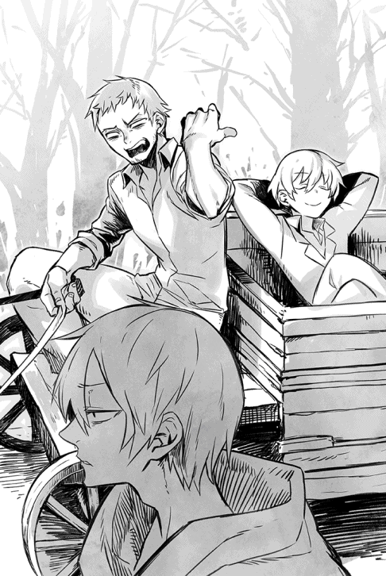
大陸北方を目指す道程は、初日から波乱含みではあったが、そんな表面上のことより、ショウとしては密かに気に掛かることがあった。
少し前から自分をどこかから見つめる視線に気付いたのだが......その視線たるや、どうもソムニウムを出てからもついてきているようなのだ。
しかし、見通しのよい街道でショウがいつ振り向こうが周囲を見渡そうが、あいにく怪しい人影を見たことはない。
それとなくユウリに尋ねても、首を振るばかりである。
元いた世界で神扱いされていた彼女ですら気配を感じられないとなると、相手は想像以上の手練れか......あるいは、元々そんな監視者など存在しないかだろう。
「俺の勘違いってのが、一番可能性が高いんだよなぁ」
思わずショウが呟くと、ニコニコと辺りを見回していたユキナが、ふいにショウを見上げた。
「......だれか、ついてきてるよね？」
「えっ」
いきなり冷水を浴びたような気分で、ショウはユキナの無邪気な顔を見やる。
ユキナの方は、むしろ不思議そうな顔で小首を傾げた。
「今の、そのことじゃないの？」
「い、いやっ。実際、俺は見られてる気がするんだが......おまえにもわかるのか」
ロクサーヌやユウリの視線を痛いほど感じつつ、ショウは狼狽して尋ねる。
ユキナは真剣な顔でコクコク頷き、「うん。おにいちゃんだってそうでしょ？」とあっさり返した。
ユキナの才能や腕前は、以前、まだ魔将だった頃の彼女とやりあった時に、身に染みている。故に、ショウは今の言葉がタダの世迷い言だとは夢にも思わなかった。
現実に、自分達を尾行しているヤツがいる！
その危惧が裏付けされた気分である。
「なんてこった......俺の気のせいじゃなかったのか」
喉の奥で唸りつつ、ショウの頭はめまぐるしく回転していた。
かなり早い段階で監視していたようだが、このまま放置しておくわけにもいかない。
「おまえはいつから気付いた、ユキナ？」
「う〜ん」
可愛らしく眉をひそめ、しばらく考えたが......結局、ユキナは首を振った。
「わかんない。気がついたら『あ、いるな』って思ったの」
「結局、謎か」
「わたしには、今も何も感じられません」
ロクサーヌとユウリが、同時に声を上げる。
それを全く無視して、ユキナはまたあどけない顔で述べた。
「でも、おにいちゃんを傷つけようとしてるわけじゃないと思う......だって、そんな嫌な感じがしないもの」
「そんなもんかねぇ？ 俺はまた、どんなとんでもないヤツが尾行してるかと、かなり身構えてるんだが」
なにしろユウリにすら気配を悟らせないヤツなのだ。
いかなる化け物だろうと、不思議はなかった。
「だいじょうぶだよ。いざとなったら、ユキナがおにいちゃんを守るもの」
無理な姿勢で振り向き、ユキナがショウの頬を撫でた。
最近のユキナは幼女らしさが板についてしまい、以前の触れれば切れるような気配はなりを潜めている。ショウとしては、苦笑せざるを得ない。
いや、ロクサーヌ達が膨れっ面で見ているのは置いて。
「......有り難いけど、そりゃ話が反対だろ」
一応、そう言ってやると、ユキナはくすぐったそうに笑った。
その夜、ショウ達は野宿することになったが、実はこれは予定外のことだった。
ソムニウムからメーヴィング山脈に至るまでに、街道沿いの街は幾つかある。
比較的、小康状態が保たれている今の状況ならば、その街のどれかに泊まることが出来たはずなのだ。
なのに、誰一人として、夜になる前に宿泊の件を持ち出さなかった。
それを思えば誰かに誘導されたような気さえするが、ショウは気持ちを切り替え、まずは食事を済ませることにした。仲間も、大なり小なり違和感を感じていたようだが、少なくとも異議を申し立てる者は皆無である。
どうせ時刻は既に深夜であり、馬車に積んでおいた食料をモソモソと食べた後は、全員が休むしかない。
見張りだけは立てることにしたが、その一番手にはジェレミーが名乗りを上げた。
「最初の見張りには僕が立とう」
彼はにこやかに言ってくれた。
「なにしろ、昼間の間にぐっすり寝てるからね。気遣いはいらないよ」
「誰が気遣うかって！」
デイルが憎まれ口を叩いた程度で、反論は皆無であり、皆それぞれ眠る準備に入った。馬車は街道から森へ入る小道付近に駐め、その周辺に思い思いに毛布を持って固まるという、野宿そのままのやり方である。
昔はともかく、魔族の支配が及んでいた最近はもはや野盗もほとんど出ないそうだし、仮に出てもこのメンバーなら楽勝ではないか？ とはデイルの弁だった。
積極的に賛成はしなかったものの、ショウもほぼ同意見ではある。
魔族の支配を覆そうとしている身ではあるが、治安の面だけで見れば、以前より遥かに向上しているのは疑い得ない。
実に皮肉な話だった。
「夏が近いとはいえ、寒いだろ？ ユキナは馬車の中で寝てもいいんだぞ」
デイルが独り占めした馬車を横目に、ショウはそっと申し出てやる。
誰も使わないなら今度こそ俺が使う！ などと宣言し、デイルが自分の今夜の寝床に定めたのだ。
お陰でショウ達は森の片隅に毛布を敷き、寝そべる羽目になった。
予定ではホテルのベッドで眠るはずが、アテが外れた形だ。
「ううん。ユキナはおにいちゃんのおそばがいい」
抱き枕みたいに気安くショウに纏わり付き、ユキナが囁く。
セリフはともかく、抱き付いてくる肢体はしっかり成長しているので、いちいち気になってたまらない。
ついでに言えば、ロクサーヌとユウリの機嫌が、たった一日でどんどん悪化しているようなのも問題だった。
常にユキナがショウのそばにいるため、二人としては面白くないらしい。
妹なので遠慮しているらしいが、今も近くからじっとり見られている気がしてならない。
ユキナが少しは気を遣えばいいのだろうが、あいにくそういうところは幼女そのままに無頓着であり、妹が二人を気にする様子は全くなかった。
ショウは「せめて、ユキナが眠ってから二人と久しぶりに話すか？」などと決心したものの......疲れが溜まっていたのか、いつしか深い眠りに引きずり込まれていった。
ジェレミーの見張りに安心していたとはいえ、後から思えばこれも怪しい話ではあったのだ。
もちろん、全ては翌日にわかったことだが。
朧気な記憶というか、夢に相違ないと思うが......眠っている間に、ショウは誰かの声を聞いた気がする。
それは、どうしても顔を確認できない、奇妙な仮面を被った男で、黒いローブを羽織っていた「誰か」だった。
その外見にはなぜか記憶を刺激されたのだが、ショウがその記憶を探り当てる前に、彼はこう告げた。
『幻影の森へ立ち寄る気はないか？』と。
無論、ショウは夢現の中で首を振った。
「いや、そんな暇はない。......そもそも、そんな森は聞いたこともないぞ」と。
『そうか......無理か』
納得したように微かに頷いたくせに、仮面男は夢の中で断定口調で言ってくれた。
『しかし、無理にでも立ち寄って貰うしかないな』と。
ナメたことに、どこかからかうような口調だったのを覚えている。
☆
「ふざけんなっ」
むかっ腹が立って言い返した途端、ショウは今度こそ本当に誰かに呼ばれた。
「ふざけてないよ。ショウ、起きてくれ！」
「──えっ」
うっすらと目を開けると、しゃがみ込んで顔を覗き込む、ジェレミーの姿があった。
その瞬間にショウの眠気が吹っ飛んだのは、いつも余裕ぶっこいたこいつに相応しくなく、何やら緊迫した顔だったからだ。
たちまち目が覚め、ショウは跳ね起きる。
お陰で、抱き枕みたいに抱き付いていたユキナの手が滑り落ち、ショウは慌ててそっと元へ戻してやった。妹は、まだ熟睡中らしいので。
「......どうしたんだ？」
そっと立ち上がり、ジェレミーと向き合う。
こいつはいきなり頭を下げ、謝った。
「すまない、僕の不手際だ。......しっかり見張っていたはずなのに、途中で眠り込んでいた」
「ええっ!?」
焦ったショウは、ささっと周りを見渡した。
しかし......ロクサーヌは未だに夢の中だし、妹もしかりである。ユウリはようやく騒ぎに気付いて起き上がったところであり、そばに駐めた馬車の中には、ちゃんと妙な姿勢で眠るデイルの姿もある。
つまり全員無事だし、相変わらず森の中は静謐であり、特に異常はない。
「......何が妙なんだ？」
「まだ目覚めてないようだね、ショウ」
ジェレミーはわざとらしくため息をつき、両手を広げた。
「よく周囲を見てくれ。何かおかしくないかい？」
「いやぁ、別に何も──」
言いかけ、ショウは振り向いた姿勢のまま、その場で固まった。
思いっきり顔をしかめ、前方の光景を信じ難い思いで見やる。
「......なんだ、これ」
辛うじてそう口にした。
そのくらい、有り得ない光景が広がっていたからだ。何しろ、振り向いたその先には、広大な湖がある。
......眠る前にはなかったはずの、満々と水を湛えた湖が。
「なんだじゃなくて、『どこだ？』と問うべきじゃないかな」
投げやりな言い方でジェレミーが呟く。
おまえは場所がわかるのか？ と質問しかけ、ショウはそこでやっと閃いた。
というのも、この広大な湖の面積と周囲全てが森という地形......そのことから、答えは一つしかないことに気付いたのだ。
ショウの知る限り、そういう条件を満たす場所が、大陸に一つだけある。すなわち、大陸南西の外れにある、ノックスの森だった。
「......いつの間にか、幻影の森に来ているとはね」
ジェレミーの呟きに、ショウは自分も思い出すように述べた。
「ああ......そういやノックスの森には、そんな通称があったな」
「そう」
あっさり頷き、ジェレミーは意味ありげにショウを見た。
「昔から、よく人が行方不明になるらしいね」
「まさにそこに来てるのに、いきなり不吉なこと言うな馬鹿」
周囲を警戒しつつ、ショウはすかさず言い返す。
「しかし、なんてこった。つまり、夢で誘われた場所か」
「ちょっと待ってくれ」
目が覚めたような顔でジェレミーが割り込む。
「ということは、君は夢の中で既にこの森のことを聞いていたのかい？」
「いや、あくまでもただの夢だと思うんだが──」
我ながら弱々しい声でショウが説明しかけたその時、馬車のドアがどばんっと威勢よく開く後がして、デイルのがらがら声が響いた。
「おわあっ。なんだよ、これはあっ」
振り向けば、湖の方を見開いた目で見やりつつ、固まっている。
まあ、乗り物も含めて全員が、いきなり見知らぬ湖畔に移動していたとあれば、驚いて当然だろう。
周辺には、ショウ達が乗ってきた三頭の馬も、所在なげにこちらを眺めていた。
「いやぁ、デイルが慌てふためくと、代わりにこっちは冷静になるなぁ」
不敵に笑うショウの周囲に、同じく目が覚めて駆けつけてきたユウリとロクサーヌが寄ってきた。ロクサーヌはともかく、ユウリ自身も驚愕を露わにしており、これがいかに異常な事態がわかる。
彼女の超感覚を持ってすれば、移動の最中に絶対に目覚めるはずなのだ。
いや、そもそも時間的に一晩で移動できる距離ではないから、瞬間移動の類かもしれないが......そんな魔法が存在するなどとは、ショウですら寡聞にして知らない。
「第一、おまえだって見張ってたはずなのにな」
ショウがぼそりと言ってジェレミーを見やると、彼はいつになくバツが悪い表情を見せた。
「言い訳はしないよ。確かに僕はしっかり見張ってたつもりだった......いつ眠り込んだのか、まるで覚えてない」
「いいさ。俺達だって誰も目覚めなかったんだ。おまえの責任じゃない。それより、今はまず、ユウリに頼んで上空からここを──」
言いかけたショウは、ふと口を噤んでしまう。
「どうかしたかい？」
ジェレミーが首を傾げるのを無視して、ショウは今度こそ焦って振り向いた。
「まだ、ユキナが目覚めないっ」
胎児のように身を丸め、すやすやと眠るユキナは、実に平和そうに見えた。
ショウもさすがに、「心配しすぎたか？」と思ったほどだ。しかし、これだけ周囲で騒いでいて、しかも兄のショウの声もしばしばするとなれば、ユキナが目覚めないのはおかしい。
元々、寝起きはよい方なのだから。
事実、いくら揺すってもユキナは目覚めず、ショウの危惧が的外れではないことを示していた。
「ユキナ、ユキナっ」
少しずつ動悸が高まってきたショウの肩に、ロクサーヌが手を置く。
「ショウっ、何かがっ！」
「むっ」
ユキナのそばに置かれた紙切れを見て、ショウは急いでそれを手にした。どうやら四つに折り畳んだ手紙らしく、中を開けるとやたらと拙い字でこう書いてあった。
『君の妹の治療を試みたが、治るまでにはしばらく掛かりそうだ。昏睡は治癒の副作用だから、心配せずともよい。幾日かすれば目覚めるはずだ』
「どこのどいつだ、こんなの置いたのは」
ショウは顔をしかめて皆を見渡す。
無論、見たところで心当たりのある者など皆無であり、みんな途方に暮れたように顔を見合わせるばかりだった。
「顔も見せずに、治癒を信じろって？」
「......疑問も多いけど、そもそも誰が書いたのかな？」
ジェレミーが鋭い質問をしてくれた。
誰であるにせよ、いきなりショウ達をここへ送り届けたヤツと同一人物なのだろうが......しかしあいつは。
ショウは、夢の中で会った仮面の男を思い出した。
「そう言えば、君は確か夢で何か見たようなことを言ったね」
ジェレミーが興味津々の顔で問う。
「さっきも言いかけたことだし、吐き出してしまいなよ」
「......そうだな、どのみち話そうと思ってた」
ショウは気持ちよさそうな顔で眠ったままのユキナを見やり、首を振った。
少なくとも、調子が悪そうには見えないのが、救いだった。後はこの下手クソな字で書かれた書き置きを信じるかだが。
それを突き止めるためにも、なるべく夢で見たそのままを、みんなに話してやった。
聞き終わったジェレミー達は、薄気味悪そうに周囲を見渡す。
まあ、無理もないだろう。
そんな中、ユウリがあらぬ方向を眺め、いきなり声を上げた。
「ショウ!!」
ショウはおろか、残りの三名もぎょっとしたようにユウリに顔を向けた。
彼女は鋭い視線で湖の畔を眺めていて、釣られたようにショウ達もそちらを見やる。途端に、これまた揃ってユウリ以外の全員が声を上げた。
「冗談だろっ」
一番最初に口走ったショウの声が、一番大きかった。というのも......数百メートル離れた畔に立っていたそいつこそ、夢の中で会った仮面の男だったからだ。
「デイル、ジェレミー！ 悪いが、ユキナを見ててくれっ」
早口で頼むや否や、ショウは走り出した。
「ショウっ」
「一人では危険です！」
ユウリとロクサーヌが後からついてくる気配がし、ジェレミー達も叫ぶ声がしたが、ショウは振り返りもしなかった。というのも、「夢で見た」という以外に、ショウにとってはぜひともヤツの正体を確かめたい理由があったからだ。
顔につけた仮面と、あのローブ姿......それは亡き養父が語った、ソウルバイブルの禁忌魔法を授けた相手と、あまりにも酷似している。とても偶然とは思えないほどに。
湖畔を走りつつ、ショウはひっそりと立つあの不気味な仮面男が、親父が会った当事者の気がしてならなかった。
「待て、待ってくれ！」
あと少しで追いつくというところで、仮面男は慌てるでもなく身を翻し、背後のヒノキが林立する森へと入ってしまった。
ショウの声など無視しているように見えるが、無論、わざとだろう。
ユウリが見つけたのも、今登場したのも、まさか偶然のはずがないのだ。
おそらく、仮面男が森へ入ってから十数秒ほどしか経ってなかったはずだ。ショウも速度を落とさずにヒノキの森へ走り込んだが......あいにく、もはや男の姿は影も形もなかった。
「くそっ。素早いヤツだな！」
「そもそも、本当に消えたように見えます」
息も切らさずについてきていたユウリが、ぼそりと言う。確かに......経緯から考えて、あの男が忽然と消えたとしても、全く意外ではなかった。
「二人共、速すぎですよっ。少しは待って──あっ」
遅れて追いついたロクサーヌが、ふいに言葉を切る。
「どうかした？」
ショウの疑問に、森の奥を指差して答えた。
「あそこをっ。なにか見えませんか？」
「むっ」
微かに見える......かなり先だが、森が途切れて開けた場所があるようだ。
誘導されている気がすると思ったのは否定できないが、それでも確かめずにはいられなかった。
ショウは一旦、馬車のところまで戻り、ジェレミー達に事情を話した後、ユキナをおぶってまた森の中へ戻った。今度は全員を引き連れて。
道なき道を歩き、その奧に微かに見える、小さな岩山に向かう。
馬車を置いてきたのが気になるが、どのみちこの森にはまともな街道など通ってなくて、仮に盗人が出たとしても、馬車を動かして森を抜けて逃げるなど不可能である。
......つまりそれは、ショウ達も以後は馬車を使えないということと同義だが。
「ま、なら気にすることもないか」
独白すると、ユウリが「馬車のことですか？」と即座に訊いてきた。
「うおっ。今の独り言だけで、よくわかったな！」
「ショウが気にしそうなことですから」
くすっとユウリが笑う。
笑ってる場合ではないかもしれないが、ショウも釣られて笑ってしまった。妙に細かいコトを気にする性格を、見抜かれているようだ。
「ははは......ユウリには何も隠せないな」
「そんなことよりっ」
なぜかぷりぷりと怒ったロクサーヌが、ショウ達の間に割って入った。
「もう少し緊張感を持ちましょう！ ほら、そろそろまた森が途切れます」
「そ、それはわかってるって」
思わず足早になったショウを見て、デイルがふいに嘆いた。
「ああっ。このエロガキより俺の方が遥かに二枚目なのに、なんでこいつはモテてて、俺は一人なんだよっ」
八つ当たりのような物言いであり、ショウは渋面になった。
鏡を見てから言えっと反論したかったが、そこでいきなり森が途切れて奇妙な場所に出てしまい、言葉を呑み込む。
学校の敷地くらいに開けた場所の真ん中に、高さ十メートル程度の岩山がある。周囲数十メートル程度の規模に過ぎず、こんな場所にあるのが不思議だった。
「なんで森の真ん中に岩山がある？」
背負ったユキナを揺すり上げてショウが呟くと、ジェレミーが眉根を寄せた。
「目印......ということかもしれないね」
「なんの!?」
不機嫌そうなデイルが重ねて問う。
「それをこれから調べるんだろ？」
......無論、みんな手分けして調べた。
どうせ、周囲はそう広いわけでもなく、その気になればぐるりと一周して点検するくらい、わけない。
ショウとユウリとロクサーヌが右側から回り、デイルとジェレミーは左側から回った。しかし、いくばくもしないうちに岩山の反対側で双方がかち合い、顔を見合わせる羽目になった。
「ただの岩山か」
「おかしいな。絶対に何かあるはず、と思ったんだけどね」
ショウが唸り、ジェレミーは不審そうに顔をしかめた。
「念のため、元の位置に戻るまで、もう半周しよう」
ショウの意見に異議を述べる者はなく、そのまま双方が行き過ぎ、しばらくして元の位置に戻った。
「うおっ」
「僕ら、遊ばれてるのかな？」
今度はデイルが仰け反り、ジェレミーは表情を険しくした。
ショウ達に至っては、まだまじまじと岩肌を眺めている最中である。
いつの間にか──最初に全員で立った場所に、ぽっかりと洞窟を思わせる穴があった。しかし、こんなものはついさっきは、なかったはずだ。
あくまでも素っ気ない岩肌のみで、特に見るべきものはなかった。
つまりこの穴は、ショウ達がそれぞれ岩山の周囲を回っている間に、勝手に開いたことになる。
中を覗くと、どうも少し入ったところで行き止まりになっているようだが......その代わり、今度は地下へ下りる穴が開いていた。
あそこが本当の入り口らしい。
なぜか皆が無言でこちらを見たので、ショウは考えた末に言った。
「誰かの意思を感じてしゃらくさいが、確かめないわけにもいかない。ただ、全員で下りて頭から罠にハマるのはご免だ。ここで残って見張る組と入る組の二手に分かれよう。俺とユウリで見てくるから、他の者は見張っててくれ。何か異変でも起こったら──」
「ちょっと待ってください！」
いきなりロクサーヌがショウを睨んだ。
「どうして、入るのがショウとユウリさんで確定なんですか！ 納得のいく説明がほしいですわっ」
「うふふ......それはもちろん、信頼度の差では？」
なぜかほのかに勝利感の漂う微笑を広げ、ユウリが顎を上げる。細腰に片手を当てていたりもしていて、ポーズからして勝者の風格だった。
そんな態度は滅多に見せないヤツなので、ショウとしても意外だった。
あと、ユウリに言われた途端、ロクサーヌがものの見事に膨れっ面になり、かつ真っ赤な顔で何か言いかけた。
怒鳴り合いになる前に、慌ててショウが介入した。
「こんな状況で喧嘩はよせって！ なら、ロクサーヌも来ればいいさ。ほら、ジェレミー達はユキナを見ててくれな？」
言うだけ言うと素早くユキナを下ろし、ショウはジェレミー達に見張りを頼んだ。
もちろん、岩山の内部へ入る前に、注意だけはしておいたが。
「おい......眠ってるからって、下手にユキナに触るなよ？ 特にデイル」
「お、俺をなんだと思ってやがる!?」
妙に狼狽した顔で言い返すデイルを無視して、ショウはニヤニヤ笑うジェレミーに目配せしておく。まあ、二人居れば大丈夫だろう......多分。
「ったく、この緊急事態になにを揉めるかねぇ」
早速中へ入り、先頭を歩き出したショウが嫌みのように呟くと、後ろから揃って声がした。
「ショウが悪いんですわ！」
「ショウがいけないんです」
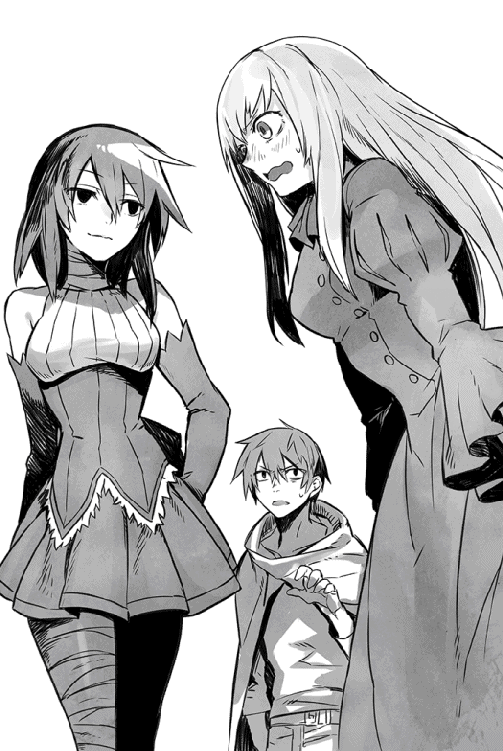
こんな時だけ気が合う二人だった。
なんでだよっ──と振り向いて言い返しかけたが、すぐに地面に開いた穴の部分まで来たので、ショウはあえて押し黙った。
見たところ、正面はもはや洞窟の壁で行き止まりであり、進むなら下へ下りるしかない。岩肌を削って作ったような石段がちゃんとあり、下りるのに不便はなさそうだった。
......罠の心配を別とすれば。
「二人共、油断するなよ」
ユウリ達に言い置き、ショウは慎重に暗い階段を下りて行く。
この「謎の階段を下りる」ということ自体、エクス神殿での出来事が思い出される。あの時も、誰かの意思なのか神殿の床に道が開け、地下遺跡に導かれることになったのだ。
ユウリが魔法の明かりを灯してくれて、足下がようやく明るくなった。
「エクス神殿の時も今回も、同じ誰かの誘導かもしれないな」
「有り得ますね」
「ロクサーヌも、誘導されてる気がしますわ」
二人共、周囲を警戒しつつ述べた。
ただ、あの時とは違う面もあった。つまり、あれほど地下深くまで下りることもなく、今回は僅か数分ほど下った途端に、いきなり床が見えた。
どう見ても、天然のものには遠い立派な石床であり、今更だが人の（あるいは何者かの）手が加わっているのは一目瞭然である。
「よし、俺が先に下りるから、二人共合図するまで待てよ！」
ショウは喉を鳴らし、そっと地下のフロアに下りて行く。
下りきったところで、自ら魔法の明かりを灯そうしたが──その前にフロア中に光が差した。
「うわっ」
「ショウっ」
「大丈夫ですか!?」
来るなというのに、ショウが声を上げた途端、女性二人が同じく駆け下りて来た。
まるでショウを庇うようにその前へ出ようとしたが......地下フロアが見渡せた時点で、声を失い、自然と足が止まった。
この光景を見れば、無理もないだろうとショウは思う。
光沢のある背の高い金属壁が、何列も何列も続いている。
それぞれの壁には、魔族が使うのに似た防御スーツと長剣などの武器があり、それが各列ごとに分けて展示されている。
しかも、武器も防具も、全部新品に見えた。
それが、なんと見渡す限り、どこまでも並んでいるのだ。
このとんでもない有様を目にすれば、それは声も出なくなるというものだ。
「これは......魔族達の武器庫か何かか？」
ショウがようやく声を絞り出すと、ロクサーヌが激しく首を振った。
「まさか！ こんな大規模な、しかも地下に延々と掘られた空洞の中にある武器庫なんか、聞いたこともありませんわ。もし存在するなら、ロクサーヌだって耳にしたことがあるはずです」
彼女の言う通り、確かに秘密にするにしては、ここは規模が大きすぎた。
所々に岩の柱があるし、天井は岩盤層のようだが、驚くほどの広さがある。反乱軍の拠点であるソムニウムと比べても、そうひけは取らない気がする。
中には見たこともないような武器すら並んでいて、かなり不気味だった。
不気味と言えば、天井が淡く光っていて、その原理も今一つ不明である。
「魔族内では知る人ぞ知るけど、みんながあえて貴女に伏せていたということはないの？」
ユウリが疑わしそうに突っ込んだが、ロクサーヌはそれでもきっぱりと否定した。
「有り得ません。本当に魔族関係のものなら、兄上が必ず教えてくれたはずです」
「それは......そうかもな」
ジェイルを思い出し、ショウは肩をすくめる。
確かに、妹に甘いジェイルなら、訊けばなんでも教えそうだ。
「仮に、魔族が知らないとしよう。もちろん、敗戦続きだった人間達だって、こんな場所に心当たりはないだろうさ。となると、あと思いつくのは一つの種族しかないな。目に特徴があると伝承される、太古の侵略者だ」
太古の侵略者だけで通じるかもしれないが、ショウはあえて巷間で噂される彼らの特徴を述べた。
途端に、はっとしたようにロクサーヌとユウリが顔を見合わせる。
『──！ グールっ』
二人の声が綺麗に重なる。
グールとは、遥か太古の昔にこの世界を滅ぼしたとされる種族で、断片的な伝承やかつての遺跡などから、その実在のみは確実視されている。
世界各地にごくごくわずかに残る記録によれば、太古の昔にこのロンザリア世界を侵略したグール達は、瞳が不自然なほどに赤かったという。
つまり、魔族はグールの混血だと噂される、最大の理由がこれなのだ。
ぶるっとロクサーヌの肩が震えたが、ショウも同じ気持ちである。
「無論、予想に過ぎないけど......俺がわからないのは、どこのどいつが、俺達にグールの武器庫を見せようとしているか、だ」
そこまで言って、ショウは派手に喉を鳴らす。
「それと......この大量の武器や防具は、誰に対して使うためのものなんだよ」
「それはわかりませんが、少なくとも見せたかったのは私達全員にではなく、ショウ個人に対してでは？」
なぜかユウリがそう断定した。
おまけに、隣のロクサーヌも頷いている。
「ロクサーヌも賛成です。もしもこれを見せたい人がいたとして、おそらくその方はショウにこそ、見てほしかったのでしょう」
「そりゃまた、どういう理由で？」
我ながら疑い深そうな声音になった。
グールは太古の昔にこの世界を去った種族なのだ。ショウが実際に知るわけがない。
「確信はありませんが、そんな気がするのです」
「ロクサーヌも、これはショウに見せるためだと思います！」
......特に確たる理由もなく、女性二人の意見は同じらしい。
心配したのか、上から呼び声がしたので、ショウ達は一時、地上へ戻ることにした。ショウの内心の不安をよそに、特に何かの妨害が入ることもなく、三人は再び元の岩山の外へ出た。
「遅いぞっ。心配するだろうが！」
出るなり、デイルが不満を表明する。
「本当に。危うく、君の妹をおぶって、僕も中に入ろうとかと思ったよ」
「悪い悪い......しかし、どうにも説明のつかないものが下にあってな。実は──」
言いかけた途端、ショウは顔をしかめて空を見た。
急に頭上が暗くなったからだが......どうも原因は、急速に広がった霧らしかった。さっきまではそんな兆候すらなかったのに、今は胡散臭いほど濃い霧が発生している。
「いきなり霧だって？」
ジェレミーが訝しむように周囲を見渡したが、あいにく人影などは皆無である。しかし、その間もどんどん霧の密度が濃くなり、仲間の顔すら見分けにくい有様になっていた。
「どうなってんだ、これ。さすがに怪しすぎるだろっ」
デイルが喚き、ショウは急いで妹を背負い直した。
「とりあえず、元の湖まで戻ろう。あの馬車があるところまで！ ここにはあまり長居をしない方がいい。ひどくヤバい場所なんだ」
「どうして？」
ジェレミーの質問には直接答えず、ショウは短く号令を発した。
「いいから、とにかく急ごう！ 後でちゃんと話すから。ユウリ、背後の警戒を頼むっ。ロクサーヌは俺の前にっ」
「はいっ」
「わ、わかりました」
頼もしい相棒のユウリはもちろん、頑固なロクサーヌも、今回ばかりは異議を唱えなかった。さすがに、地下で見た光景に不安を覚えたらしい。
「はぐれないよう、それぞれ目の前の相手の身体に触れておこう」
言うなり、ショウは前を歩くジェレミーの肩に片手を置く。全員、言われた通りに前に立つ相手に触れた。
「みんな、はぐれそうになったら声を出せよ！ 間違っても一人で何かしようなんて思うな、わかったかっ」
くどいほど告げたが、緊張したような返事が人数分返って来た。少なくとも、まだはぐれたヤツはいないようだ。
やがて、森が途切れ、無事に元の湖に戻ったのがわかった。
デイルはショウの要請通り、そのまま水辺を回って、馬車が駐められた位置まで戻ってくれた。
有り難いことに馬車はもちろん、ショウ達が乗ってきた馬もみんな無事に残っている。
「俺が一番だ！」
悪のりして馬車にタッチすると、デイルは緊張感のない掛け声を上げた。
「おまえな、俺達が地下で何を見たか知ったら、さすがにそんな減らず口は叩けないぞ」
どっぷりと周囲を白い霧に覆われたまま、ショウは唸るように返す。
どうせこの状態ではどこにも移動できないので、後回しにしたさっきの光景の説明を、デイル達にしてやった。
当然、二人共態度を改めると思ったのだが、あいにくジェレミーの反応は、ショウの予想の斜め上を言った。
訝しそうにはしたものの、特に不気味そうな表情ではない。実際にあの光景を見ていないせいかもしれないが、むしろ彼は咎めるような口調だった。
「そういうことなら、元通りに洞窟を塞ぐべきだったんじゃないかい？」
忠告され、ショウは顔をしかめる。
「どんな原理で閉じたり開いたりしているのかわからんのに、そんなこと出来るわけないだろ。仮に出来たとしても、そもそも誰のための武器庫かもわからないんだぞ」
「でもよう、せっかく見つけたのなら、もらっておけばいいだろ。むしろ、向こうもそのつもりで見せたんじゃねーの？」
なんとデイルまで、能天気な意見を出してくれた。
顔は見えないが、そちらの方向を睨みつけ、ショウはガミガミと言い返す。
「一方的な取り引きなんて、簡単に信じられるもんか」
「なんで？ くれるならもらっておけばいいじゃん」
デイルの馬鹿が即答した。
「そんなわけにいくかっ」
みっともなく揉めかけたが、ジェレミーが振り向いて諫めた。
「喧嘩はよそう。とにかく、早くも霧が晴れてきたようだし、僕とデイルもその中を見てみたいよ」
......言われてみれば、発生した時と同様、相当な早さで、立ち込めていた霧が薄くなっていく。今や、仲間の顔もはっきり見えた。
「これって、まるでロクサーヌ達が馬車のところに戻るのを、誰かが待っていたようですわ」
ひどく警戒するような表情で、彼女は左右を見渡した。
あまり賛成したくない意見だが、言われてみれば、幾らなんでも妙なタイミングで霧が出て、そしてあっさり引くものだ。
「ホント、誰かの悪意を感じるな」
低い声で呟くと、ショウは油断なく刀の柄に手を掛ける。
戦うためには妹を下ろす必要があるが、いざとなればすぐに動ける準備だけはしておきたい。
とそこで、まるでショウの疑惑を補足するようにユウリが声を上げた。
「──おかしいです！」
「なにがだ？」
声に含まれる緊迫感を警戒し、ショウは低く囁く。
少し遅れ、ロクサーヌが小さく悲鳴を上げた。
「そんなはずはっ」
「だから、なにが──」
ショウはセリフを呑み込み、目を細めた。
なるほど、これは奇妙だ。周囲にあった森や湖が......今は全然見えない。
こうしている間にも霧がどんどん晴れて、元の快晴に戻っているのだが......ショウ達が立っているここは、どう見てもただの荒野だった。
森の中でもなければ、湖のそばでもない。
「ノックスの森を──いや、幻影の森を抜けたのか？ いつの間に？」
ぼそりと呟き、刀の柄に手を置く。
しかし、敵らしき者はどこにも見えなかった。
「転移した？ またかよっ」
「......僕はまだ見てないのに」
デイルとジェレミーが、同時に独白する。
ショウと女性二人は残念がるどころではなく、互いにうそ寒い顔で見つめ合っていた。
「相手の意図がわからないのは、嫌ですね」
「全くだ」
ユウリの呟きに、ショウは心から頷いた。
誰の仕業か知らんが、そいつは一体、俺達に何をやらせたいのか？
そして......そもそも何が目的なのだろうか。
第四章 消された痕跡
混乱する出来事ばかりが続いたが、それでもショウは、自分達が現在どこにいるか、見極めようとしていた。
そこで荒野と言えどもなにか目印がないかと、周囲を確かめてみる。
ところが、振り向いた途端に驚くべきものが見えた。
さっきまではまだやや霧が残っていて、はっきり見えなかったのだが、今や嫌でもよく見える。
つまり、見覚えのある山々の連なりが。
あれはどう見てもメーヴィング山脈だろう。
「冗談じゃないな、くそっ。おい、みんな──」
「ショウ、敵だっ」
ジェレミーが急に鋭く叫んだ。
ショウが向き直ると、遠くに砂塵と逃げ惑う複数の人間が見えた。どうも、誰かが追われてるようだ。
「ショウ、襲っているのは魔族の下位種ですわ！」
人間より遥かに視力に優れるユウリが、鋭く指摘した。
「それも五匹はいますっ」
「わざわざ『魔族の』って付けるの、やめてくださいな！」
ショウではなく、ロクサーヌが嫌悪の声を上げる。
上位魔族は格下の下位種とひとくくりに見られるのを嫌がるというが、彼女も例外ではないらしい。
「下位種にもいろいろあるが？」
ショウは目を細めてそちらを見る。
有名なゴブリンやオークはもちろんのこと、鬼や獣のような外見をした者など、魔族の下位種には様々なタイプがいる。
今のセリフはそれを踏まえての独白だったが──逆立った短い銀髪と筋骨隆々とした逞しい身体、それに最初から不気味に赤く光る巨大な目などを見分けられるようになると、ショウは大きく息を吸い込んだ。
次の瞬間、ユキナを背中から下ろし、いきなり駆け出した。
「妹を見ててくれっ」
「て、おいっ」
「どうしたんだ！」
デイルとジェレミーが叫んだが、無視した。
「ショウっ、どうするのです!?」
ただし、慌てて追って来たユウリには、即答した。
「あいつら、ユキナを最初に攫った連中と同じ外見だっ」
息を呑むユウリを横目で見やり、急いで告げる。
「とにかく、追われてる連中を助けるっ」
「......わかりました！」
ユウリは言葉少なく、賛同してくれた。
どころか、背後から他に追ってくる足音までした。
「待って待って！ 置いていかないでくださいっ」
ショウが振り返ると、気が早いことに愛用の武器をトラクションの魔法で出したらしく、ロクサーヌが雄々しくレイピアを片手に走っている。
「鎧姿にならなくて大丈夫か？」
「平気ですわ！」
「よし、上等っ」
威勢よく答えたところで、必死で逃げる人間達に追いついた。
「後ろに、まだ俺達の仲間がいるっ。彼らと合流してくれ！」
言葉少なに告げると、三名いた彼らは、顔をくしゃくしゃにして叫んだ。
「あ、有り難いっ。あんた達も気を付けろ！」
「俺は平気さっ」
立ち止まって刀を抜くと、丁度、ショートパンツや革ズボンなど、だらしない格好の大男共が、巨眼でショウ達を睨んだ。
というより、ユウリと後から来るロクサーヌを見たというのが正しいだろう。
足を止めずに大股で駆けつつも、一斉にだらだらと涎を垂らし始めたからだ。
「どこを見てんだよっ」
大喝し、ショウは相手の間合いに飛び込んだ。
「──っ！」
まさに一瞬だった。
いつになく醒めた目で駆け出したショウは、いきなり先頭のそいつの前に飛び出すと、青白い刀身を逆袈裟斬りに振り切り、ぶっつりと相手の声を断ち切った。
どすどすどすっと地響きを立ててなおもそいつは数歩ほど駆けたが、唐突に上半身がバラけ、重々しく倒れてしまう。
その間、二秒もかかってなかっただろう。
これから襲うつもりだった後ろの連中は、この有様を見て明らかにたじろいだ。一瞬、身を翻して逃げそうな素振りを見せたが、ショウはそれを許さない。
「待て！」
一陣の風のごとく後方の二匹に迫り、鮮やかな剣撃で一匹目の首を刎ね、身体を半回転させて返す刀で二匹目の胴を豪快に薙ぐ。
今回、最初から殺すことしか考えてなかったので、二匹共に悲鳴をあげる間もなく、その場で血飛沫を上げて転がった。
大地に転がった敵の顔には驚きの表情が張り付いていたが、ショウは見もしない。
「残りはっ」
素早く次の敵を追い求めようとしたが......あいにく、もはや必要なかった。
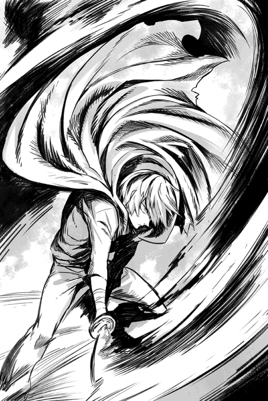
なぜなら、最後の二匹は、神速でショウの脇を駆け抜けたユウリが、問答無用で襲いかかっていたからだ。
「はああっ」
裂帛の気合いと共に漆黒の大剣を二匹の胴に横殴りに叩き付け、無造作に揃って両断してしまう。細腕のくせに、凄まじいパワーであり、最後まで剣撃の速度が全く落ちていなかった。しかも、剣を振っていたのは片手である。
ユウリは死体となった下位種にはまるで注意を払わず、大剣を消した途端、ショウの元へ駆け寄ってきた。
「......ショウ？」
頬に手を当て、心配そうに首を傾げる。
何を心配されているのか一瞬、わからなかったが......ようやく気付き、ショウは強張った顔に無理して笑みを浮かべた。
彼女が怒りで我を忘れそうになった自分を案じてくれたとわかったからだ。
「大丈夫だよ、心配するなって」
「......はい」
二人でそっと微笑み合ったところで、ショウはロクサーヌの不機嫌そうな表情に気付き、わざとらしく咳払いした。
「とにかく、みんな無事でよかった」
「いきなり走り出すから、驚いたよ」
ユキナを背負ったジェレミーが追いついてきて、苦笑気味に言う。後からついてきたデイルも何か声をかけようとしたが、その前に下位魔族から逃げていた三名が感激したように戻って来た。
「いやあ、驚いた！」
「あんた達、とんでもなく強いなっ」
「正直、魔族より上じゃないのか？」
命からがら逃げたせいか、三名共貫頭衣がボロボロで、顔中が汗まみれである。ただ、追っ手がひとまず片付いたお陰か、満面の笑みを浮かべていた。
「ちょっと......事情を聞かせてもらえるかい？」
ショウは早速、彼らに頼み込んだ。
荒野といえども、小規模な森は点在していた。
あたかも、砂漠のオアシスのようにあちこちに固まるそんな森のうち、ショウは木立がみっしりと密集した近場の森に彼らを誘った。
もちろん、その頃には自分達の今いる場所が大陸北部の魔族の領域に当たると知って、少なくとも仲間は例外なく驚いていた。
......ショウが最初に気付いたように、メーヴィング山脈が南に、しかも比較的間近に見えるということは、ここが大陸北部の魔族達のお膝元である証拠なのだ。
否定したくとも、その事実は変わらない。
ショウ達は、馬車や馬も含め、全員揃って強制転移させられたらしい。
ただ、それ以前に既に街道から幻影の森──ではなく、ノックスの森へと移動していたわけで、最初に比べれば驚きは少ない。
......結果的に旅程が短縮されたことになるが、もちろんショウは素直に喜ぶ気にはなれない。どういう意図があって自分達にあんな武器庫のような場所を見せたのか不明だし、その謎の誰かが味方とは限らないのだ。
ただし、こちらの事情を新たに遭遇した三名に話してもしょうがないので、ショウは彼らには「魔界にあるアンダープリズンを解放に行った仲間が戻らないので、調査に来た」とのみ説明しておいた。
驚いたのは、彼ら三名は、元々がダルトンが救出に向かうはずだったアンダープリズンの元囚人だったことだ。
聞くところによれば、「嫌な事件があって、計画を早めて逃げて来た」という。
人の気配もないのでその場で車座になって座り、互いに情報交換すると、助けた三名は無念そうに顔を見合わせた。
いかにも悔しそうに、一人が首を振る。
ノルティという名前で、ウォーリアでもない一般人だった。
アンダープリズンの脱出劇ではだいたいウォーリアが中心になることが多いのだが、あいにくノルティ達のアンダープリズンでは、そのウォーリアの数が払底していたらしい。
興行主が無能で、人死にが限度を超えたせいだそうな。
「なんてこった......せめて、もう少し早ければなぁ」
「それは、もしかしてさっき言った『嫌な事件』とやらと、関係あるのかな？」
ショウが慎重に尋ねると、三名揃って何度も頷いてくれた。
「ある日、魔族の魔将がわざわざうちのアンダープリズンに来てな。俺達に一言の説明もなく、嫌がる囚人を百名ほど連れ出したんだ。以後、誰も戻ってきやしなかった。そういうことがあったんで、俺達もさすがに脱出決行の日を早めることにしたのさ」
三人で頷き合った後、一転してノルティは厳しい表情を見せた。
だいぶ苦労したのか、痩けた頬に派手な傷跡まである。
「でも、運悪く脱出した途端に魔族の警備兵に見つかってなぁ。皆、その場でバラバラに逃げたのさ。他の連中はどうなったやら」
......つまり、こういうことらしい。
脱出を志したのは、ショウが前に送り込んだ使者が発端なのだ。
使者を介し、大陸の主立ったアンダープリズンに「秘密の脱出口」を記した地図を提供し、決起を促した──そのことが、ノルティ達をも動かしていたのだ。
全員ではないが、ノルティ達のようなやる気のある者が、その地図を見てアンダープリズン脱出を決意した。
そこまではよかったが、お定まりのどっちつかずの意見しか持たない者も多く、なかなかプリズン内の意見がまとまらず、決行の日が延び延びになっていたらしい。
そうこうするうちに、突然、魔将がやって来たのだと。
「魔将というと、誰です？」
ロクサーヌが身を乗り出すと、少し腰が引けたようにノルティは言った。
「確か、フェルタクスといったかな？ 長い銀髪を後ろで束ねた、随分風格のある戦士だつた。上位魔族には珍しく、壮年に見えたけど」
「......ショウが前に言った通りですわ。それと、兄上も！」
ロクサーヌは何事か考えながら呟く。以前、ジェイルがもたらした情報を思い出したらしい。
「でもっ。彼が動くくらいなら、魔界内でも噂になるはずですが」
「いや、そんな雰囲気じゃなかったな」
ノルティはきっぱりと言い切った。
「連れてた手勢も少なかったし、アンダープリズン内に駐留してた部隊の隊長にも詳しい説明をしなかったし、どうもお忍びで来ていたという気がする」
「忍んで来てたのに、百名も連れて行ったのかい？ どういう事情だろう？」
ジェレミーが鋭い目付きで訊いたが、ノルティは悲壮な顔で首を振った。
「悪いが、それはこっちが知りたい。じーさんばーさんが多かったし、あれじゃ労働力にもならんだろ？ 一体、どこに連れて行ったのやら」
「で、そのばーさん達は帰ってこなかったわけだ？」
デイルが念を押すと、三名全員がしっかり頷いた。
ノルティがまた代表で言う。
「......うちに救出に来るはずだったあんた達の仲間についちゃ、俺達は何も知らないが、もしかしたら、こっちへ来る前に、そのフェルタクスに見つかったんじゃないかい？」
確かに、それは有り得る。
なにせショウ自身、ソムニウムを出る前に、他のアンダープリズンを脱出した元囚人から、『ダルトン達（とおぼしき連中）はコソコソ移動していた十数名の魔族を尾行していたように見えた』と聞かされていたからだ。
ノルティ達の証言は、その話を裏付けている。
「じゃあ、消えた百人とダルトン達の行方を突き止めるのが、最優先になるか......あんた達、心当たりないか？ いやっ、わからないのは知ってるが、そんな大人数が移動する以上、絶対にどっかの村とか街に寄るはずだと思うんだよ」
ショウは懸命に説明した。
ここで何として手がかりを得ないと、調査の糸が切れる。
「表向きの話じゃ、魔将フェルタクスはどこかに寄って囚人達を引き渡した後、南部のアンダープリズン鎮圧の任務に当たるって話だが......あんた達が知りたいのは、彼が寄った場所の方なんだよな？」
ショウが勢いよく頷くと、ノルティは困ったように首を傾げた。
そこまでは彼も知らないらしい。ただし、彼の仲間の一人が声を上げた。
「あっ」
「お、なんか思いついた？」
ノルティの横で顔を上げた若者に、ショウは勇んで尋ねた。
「え、ええ......思いついたというか、そういえばこの近所に、廃村があったなぁって」
「廃村!?」
ノルティが意外そうに若者を見た。
「おまえ、魔族の領地に詳しいのか？」
「いや、まさか！」
と彼は苦笑して手を振る。
「そうじゃなく、子供の時にアンダープリズンへ連行される時、荷馬車の窓から見えたんだよ、その廃村みたいなのが。魔族って言えばみんな金持ちかと思ってたから、意外だったんだ。それで覚えてただけ」
「廃村......か」
ショウが考え込むと、デイルが珍しく鋭い指摘をした。
「そりゃ、調べてみた方がいいぜ。だってよ、おまえが言った通り、そんな大人数が煙のように消えるわきゃないんだ。付近の街や村に痕跡が残ってないなら、まずは怪しそうな村から調べた方がいい」
「いや、まあその辺りの情報はジェイルから得たものだから、本当のところはわからないけどな」
でも──とショウは大きく頷いた。
「おまえの言うのも、もっともだ。何より、ダルトン達が行くはずのアンダープリズンからも、ここは近い。調べてみる値打ちはあるな」
そこでショウは、ユウリがじっとこちらを見ているのに気付き、促してやった。
「どうかしたか？ 何か考えがあるなら、言ってくれ」
「いえ......考えというか、こうしてノルティ達と遭遇してヒントを得たのはいいですが、どうも見えない誰かに踊らされているようだなと思ったんです」
ユウリは憂い顔で仲間の顔を見渡し、ポツンと述べた。
ショウは微かに頷くに留めた。
そのことは自分でも気付いていたことだが、口に出してしまうと見えない誰かの存在をいよいよ身辺に感じそうなので。
ふいに黙り込んでしまったショウ達を見て、ノルティ達が困ったように顔を見合わせて居たが、ショウはそれにも気付かずじっと考え込んでいた。
☆
なんなら俺達も手伝うと申し出たノルティ達には丁重に断り、ショウは逆に、ノルティ達三名に、ソムニウムまでの使いを頼んだ。
そこに反乱軍の拠点があることを教え、留守を守るジェイルに伝言を頼んでおく。
内容はもちろん、今までの驚天動地の経緯と、それから今後の行動についてである。仮にショウ達に何かあった場合、今度はジェイルが残った軍勢を率いる必要があるのだ。
そのためにも、情報を知らせるのは必要不可欠だろう。
ノルティ達はうるさく質問することなく伝言を受け取り、そのまま南を目指して去って行った。
彼らが無事にソムニウムに到着し、ジェイルがショウの言伝を読んでくれると助かる。
「つっても、これだけイベント満載だと、妹を心配したジェイルにーちゃんが、すぐにもすっ飛んで来そうだけどな」
提供した馬車で去るノルティ達を見送りながら、デイルが笑えない意見を言う。
冗談ではなく、ありそうなのが恐ろしい。
おまけにロクサーヌも得意そうに胸を張って述べた。
「兄上は、ロクサーヌに優しいのです！」
「......なら、今からでも兄の元へ戻ってあげては」
「嫌ですよっ」
ユウリが真剣に提案し、ロクサーヌはたちまち膨れた。
「それより、ついに馬車もなくなったわけで、いよいよ警戒しないとな」
ショウは苦労して昏睡状態の妹を先に馬に乗せ、自分と相乗りにした。後の二頭にはそれぞれデイルとジェレミー、ユウリとロクサーヌという風に分かれた。
せめて、日が暮れる前にはその廃村に着きたいものである。
過疎地域に当たる荒野とはいえ、ここは魔族の領域なのだ。いつ何時、彼らと戦う羽目になってもおかしくはない。
そんな兆候があれば、幻覚の魔法で誤魔化すつもりだが、遭遇しないに越したことはないだろう。
......陽が傾き始めた頃、幸いにしてショウ達は問題の廃村を見つけた。
特に迷うこともなかったのだが、意外だったのは、手綱を握っていたユウリがいきなり馬を止め、ショウにこう言ったことだ。
「ショウ！ 血の臭いがしますっ」
ショウは無言で人気のない廃村を見やる。
ユウリの感覚がどれだけ優れているか、よく知っているだけに、問い返すことはしない。彼女が言うなら、間違いないのだ。
そこで、最低限のことだけ尋ねた。
「臭いは最近のもの？」
「いいえ。多分......かなり日が経っているかと」
「そうか」
さすがに緊張したように自分を見る仲間達に、ショウはわざと何でもないように肩をすくめて見せた。
「とにかく、確かめようじゃないか。嫌な仕事だが、やらないわけにゃいかない」
探索自体は、想像するより楽だった。
なぜなら、ショウはユウリに「最も血の臭いが濃い場所を教えてくれ」と頼んだからだ。
ユウリは迷わず、廃村の東側にある、少し開けた場所に案内してくれた。
廃屋に囲まれ、井戸がある場所だが......おそらくまだ村が健在な時は、この不気味な場所も住人の社交場になっていたのだろう。
あいにく今は、今にも化け物が這い出て来そうな、実に不気味な井戸にしか見えない。
そっと毛布にくるんで地面に下ろされたユキナ以外、全員が手分けして痕跡を探した。
幸い、ユウリが頭上に魔法の明かりを灯してくれたので、最低限の照明はある。
全員、熱心に井戸を覗き込んだり、周囲の大地を調べたりしていたが......うんざりするほど地面を見つめて歩いた揚げ句、ショウとユウリが同時に証拠を見つけた。
「文字があるっ」
「──こっちに、血が」
同時に声を上げたが、ユウリを含めてみんなショウの方に駆け寄ってきた。
ただ、ショウが見つけた文字も、あまり意味が取れるようなものではない。
井戸から少し離れた何の変哲もない地面に書かれ、しかも震えるような拙い文字だった。書いた者が誰であれ、よほど切羽詰まっていたと見える。
内容は実に一言だけ『魔族達は──』と書かれているのみである。
しかも、最後の線が不自然に伸び、大きく乱れている。
「......多分、この最後の線を書いてる時、力尽きたんだ」
しゃがみ込んで散々観察した後、ショウは唸るように呟いた。
そこまでは言わなかったが、ダルトンの筆跡に似てるような気もする。
「どういう意味でしょう」
ユウリの声も独白のようだった。誰であれ、今は想像する他ないのを、よくわかっているからだろう。
「そりゃ決まってるだろ、ユウリさん」
デイルが立ち上がり、怒った顔でばしっと拳を反対側の掌に叩き付ける。
「犯人は魔族の連中だ......ヤツらが仲間を殺しやがった」
そばにロクサーヌがいるのを忘れたような、激しい口調だった。ただ、そのロクサーヌもはっとした顔でデイルを見上げたのみであり、今は何も言わずにしゃがみ込んだままだ。否定する術がないせいかもしれない。
「そうだろうか」
ショウはあえて疑問を呈した。
「それならなぜ、『魔族達が──』にならない？ 細かいようだが、『は』と『が』じゃ大違いだと思わないか？」
救われたような顔でロクサーヌがショウを見たが、ショウとしては本心からの疑問である。犯人が魔族であり、それを指摘するつもりなら、「魔族達は」ではなく「魔族達が」の方がしっくりくる......その後に何を書こうとしたにせよ。
「そりゃおまえ、ダイイングメッセージだし、そこまでの余裕がなかっただけだろ」
デイルが決めつけたが、ショウはあえて黙したままのジェレミーを見た。
「おまえはどう思う？」
「わからない......けど」
ジェレミーはのろのろと顔を上げ、皆を見渡した。
「ダルトンも囚人も、仮にここで本当に、魔族達に殺されたとしよう。魔将フェルタクスとその配下に殺されたとね。しかし、それならなぜ、魔族達はこうも完全に痕跡を消したんだろう？ ユウリさんが血の痕を見つけたみたいだけど、その痕も微かなものじゃないかな？」
ユウリの方を見て尋ね、彼女は頷いた。
「ええ。臭いがなければ、わからないような染みですね」
「ほらね？」
ジェレミーはまたショウを始め、皆を順番に眺めた。
「百名超の人間を片付けたにしては、痕跡があまりにも少なすぎる。方法も謎だけど、それは置いて、犯人達は明らかにここであったことを隠す意図があったんだ。だとすれば、どうして隠す必要がある？」
「どうしてって、そりゃおまえ、仮にも大量虐殺なんだし」
デイルが言いかけた途端、ジェレミーはすぐに反論した。
「そうだとしても、魔族がどうして僕らに言い訳する必要があるんだ？」
「いやそれは」
「魔族は戦勝者だし、人間に遠慮する必要なんかないはずだろ？ それなら、囚人を処罰した痕跡に気を遣う必要もないよ。理由なんか何とでも付けられるから。ましてや、ここは元々魔族達の領域なんだ。僕らが調査に来ることなんて、彼らが知るはずない」
『──あっ』
ショウと......おそらくデイルの声が同時だった。
元より、ショウは最初から魔族の犯行だというのを疑っていたが、言われてみれば、魔族側にこの惨劇を隠す理由が見当たらない。
いや、本当は今この瞬間、ショウは恐ろしい仮説を思いついたのだが......あまりにも馬鹿らしいので、言えなかった。
ただ、ショウの勘が当たっていれば、そうまでして彼らが隠したい理由も、鮮やかに説明できてしまう。
しかし、今はさすがのショウも、迂闊に自分の予想を話したくはなかった。万一にも当たっていてほしくないからだ。
代わりにデイルが途方に暮れたように言う。
「じゃあ......誰がやったんだよ？」
「わからないが、事実関係は突き止めないとな」
ショウはきっぱりと言った。
「俺達の直接の仲間も、ダルトンをはじめとして、何人も消えてるんだ。うやむやにはできない」
「でも、どうやって突き止めます？」
ユウリが心配そうに訊いた。
もちろん聡い彼女は、ショウが考えていることなど手に取るようにわかるのだろう。心配してくれる彼女には悪いが、ショウはあっさり答えた。
「もちろん、事情を知ってそうなヤツ──この場合は、フェルタクスに直接訊くのさ！」
喝采の代わりに、全員、無言でショウを見つめた。
半開きに口を開いて見つめるデイルを見れば、だいたい皆がどう思ってるか、わかるというものだ。
それでも、ショウの決意は変わらなかった。
フェルタクスの正確な居所はさすがにわからないが、ヒントはある。
というのも、先程会ったノルティは、「フェルタクスは囚人達を（何者かに）引き渡した後、南部のアンダープリズン鎮圧の任務に当たる」と述べていた。
本来、ショウ達の予定では、この後で北部のアンダープリズンを解放するつもりだった。しかし、当初目星を付けていた場所は、既に囚人達が勝手に脱出したらしい、ノルティ達がいたアンダープリズンなのだ。
他にも北部のアンダープリズンはあるにはあるが、ショウはフェルタクスを捕らえる方を優先することにした。こちらの方がより重要だと判断としたからだが、仲間の誰も反対はしなかった。
むしろ、聞いた時は驚いていたデイルが、「魔将を捕らえて審問するなんて、気宇壮大な話だよなぁ」と嬉しそうに言ったくらいだ。
逆に言えば、人間側から見れば、それだけ魔将が手に負えない存在だったということだ。少なくとも、これまでは。
ともあれ、すぐに南部に舞い戻ったショウ達は、まずは前にジェイルにもらった地図を参考にして、まだ未解放のアンダープリズンを片端から回ることにした。
とはいえ、直接アンダープリズンへ乗り込むわけではなく、まずはその周辺の街で聞き込みをし、フェルタクスの足取りを探ろうとしたのだ。
この試みはショウが思った以上に上手く運び、訪れた二つ目の街で、早速ショウはフェルタクスの足取りを摑んだ。
反乱軍に協力的な、傭兵ギルドの支部となっている酒場であり、酒と吐瀉物の臭いが立ち込めるような、昼間でも薄暗い店である。
そういう怪しすぎる店内で、ショウは遠回しにフェルタクスの動静を尋ねてみたのだが、責任者のギルドマスターが意外にもすぐに教えてくれたのだ。
「フェルタクスなら、近くのアンダープリズン鎮圧に向かうとかで、隣町に向かったところだぜ。今なら余裕で追いつくな」
酒場兼宿を経営するマスターでもある彼は、老い錆びた声で実にあっさり教えてくれた。
愛想代わりに酒を頼む手間もいらなかったほどで、カウンターに座ったショウはいささか驚いてマスターを見返したほどだ。
「随分、気前よく教えてくれるじゃないか？」
「そりゃそうさ！」
マスターはニヤッと笑う。
「俺達ぁ、あんたらの復権を願ってるんでね」
傷だらけの顔で、ウインクまでしてくれた。
今は昼間で客も全然いないせいか、声を潜めることすらしなかったほどだ。
「ショウっ」
素早く隣に座ったロクサーヌが、急にショウの袖を引いた。
ひそひそと耳元に囁く。
「どういう理由で、傭兵ギルドが反乱軍に協力的なんですか？ むしろ、以前は街で傭兵が襲ってきたこともあったはずです」
「いや、それはフリーの雇われ傭兵で、ギルドの意思じゃないさ。聞くところによれば、傭兵ギルドは魔族の戦勝以後、商売上がったりらしい。実際、以前から協力的なんだ」
「その嬢ちゃんが何を訊いてるのか、わかる気がするな」
汚いエプロンをしたオヤジは、にんまりと笑い、ショウ達の顔を順番に見た。
「だが、安心してくれ。俺達ゃ本気であんたらの勝利を願ってる。他のブルークラスは知らんが、これは傭兵ギルドの総意だと思ってくれていい。せめて人間様の世界に戻ってくれんと、とても食っていけねーのさ」
わざとらしくロクサーヌに向かってまたウインクし、彼は両手を広げた。
「気を悪くせんでくれよ？ 魔族の姫君のあんたにゃわからないかもしれないが、魔族が人間を保護する......という建前の世の中だと、こちとら仕事がなくてなあ。傘下の傭兵も激減したし、このままじゃおまんまの食い上げよ」
しみじみとした声で言うが、ロクサーヌの正体までバレているようで、ショウからすれば全く笑えない。
渋面になってしまったが......逆にそのオヤジから忠告されてしまった。
「時に、ショウ。あんたら、すこし大胆過ぎるな。事情に詳しいヤツが見れば、その嬢ちゃんの正体はすぐにわかる。なにしろ、人間と行動を共にする魔族女性なんて、そうそうゴロゴロいねーしな。となれば、あんたの正体だってあっさりわかろうってもんさ」
顔をしかめたショウに、オヤジは諭すように言う。
「最近の流れは反乱軍にあるとはいえ、さすがにもう少し警戒した方がいいぞ」
「かもな......いや、当初は馬車があって、彼女は主にそこに乗って貰うつもりだったけど、事情があって手放したんだよ」
「ほほう？ なら、カムフラージュ用の馬車は、俺が用意しようか」
オヤジはカウンターの向こうで身を乗り出した。
ショウがぱっと顔を上げると、ニヤッとヤニ塗れの歯を剥き出す。
「もちろん、値段はサービスしとくぜぇ？」
調子よすぎるオヤジに、ショウは引きつった笑みを浮かべた。
本当に信用して大丈夫なのか、このオヤジは。
結局、オヤジの口車に乗り、馬車は手持ちの資金で購入したが、何と本物の駅馬車に使っていた古ぼけたヤツで、あまり嬉しい買い物ではなかった。
偽装という意味ではこの上ないが、中に乗ると埃まみれな上、長年の間に運んだ客と郵便物などの臭いが染みついている。
よくこんな骨董品同然の駅馬車が残っていたものだと、全員が妙な感心をした。
デイルなどは早速、「あのオヤジ、十五万ゴールドもふんだくりやがってぇ」と吐き捨てたほどだ。
ちなみに、ゴールドとは地上に住む人間達専用に、戦後になって魔族が定めた通貨単位だが......ややこしいので、結局今は、魔族側も同じ通貨が流通しているらしい。基本的に金貨と銀貨と銅貨からなり、紙幣などはない。
「まあいいじゃないか、お陰でロクサーヌも馬車に乗せられたし、ソムニウムに戻ってから、元興行主のザックに売り飛ばせばいいさ」
ショウは慰めにもならないことを述べた。
「けっ。あのがめついオヤジが、こんなの高値で買うもんかー」
馬上、デイルがすかさず言い返す。
それどころか、馬車の窓が乱暴に開いて、ロクサーヌまで文句をつけた。
「この馬車、物凄く臭いですわっ。だいたい、どうしてロクサーヌ一人だけ、のけ者みたいに馬車に乗ってるんですかっ」
「御者台にジェレミーもいるじゃないか。じゃなくてだなあ！」
さすがにむかっ腹が立ち、ショウは大声で（全員に）喚いた。
「俺に文句言っても知るかあっ」
第五章 銀仮面の介入
ユキナは未だに目覚めず、さすがのショウも本気で心配になってきた。
謎の相手が書き残した「君の妹の治療を試みた」という置手紙など、ただの大嘘であって、妹はもう永遠に目覚めないのではないか......ともすれば、そう考えてしまうのだ。
幸い栄養補給については、まだ何とかなった。
ソウルバイブルの禁忌魔法には「リカバリー」という、精神力や体力を回復させる魔法があるし、ユウリにも同様の能力が備わっているからだ。
だから当面は安心のはずだが、それでもショウの不安は完全に拭い切れていない。
問題の、フェルタクスが駐留中だという隣町に移動した頃には、既に夜も更けていたが、幸いにして、例のオヤジが紹介してくれた宿に腰を落ち着けることができた。
町外れであり、人目を忍ぶように滞在するには、絶好の場所である。
傭兵ギルドはそれこそ全国に支部があり、しかも表面上は宿や酒場など、思わぬ商売を隠れ蓑にすることが多い。今回は、それが救いとなった形だ。
さもないと、さすがに魔族が大勢居座るこの街で、ショウ達は目立ちすぎるだろう。
反乱軍の勢力圏など南部のごく一部に過ぎず、この地方はまだまだ魔族の実効支配下にあるからだ。
当然ながら、世話になった宿もギルドの息のかかった場所で、そこの主人は先のオヤジと雰囲気が酷似しており、傷だらけの顔で「おうっ。この宿は安全だぜ。今晩に限っちゃ、怪しいヤツは金輪際、二階へは入れねぇからな。安心して休んでくれ！」などと、豪語してくれた。
ショウは愛想笑いしつつ、話半分くらいに聞いておいたが......正直、その気持ちだけでも嬉しかった。
「とはいえ、偵察の意味でも街の中を見て回っておいた方がいいな」
宿の二階奧にあった大部屋に入り、背負っていたユキナをベッドに寝かせるや否や、ショウはすぐにそう言った。
もちろん、自分が行く気満々だったのだが、ジェレミーとデイルが顔を見合わせ、申し合わせたように止めた。
「いやいや、君は少し休んだ方がいい」
「お、おうっ。俺達に任せておけって」
ジェレミーはともかく、普段は愛想のないデイルまでがそんなことを言う。
言うだけではなく、実際に二人して出ていってしまった。
「君は、部屋でフェルタクスを捕らえる方策でも練ってくれたまえ。僕達は彼の居場所でも探ってくるよ」
......などと、ジェレミーが出ていく前に釘を刺した。
しばらく閉まったドアを見やり、ショウはロクサーヌ達を振り向く。
「もしかして俺、気を遣われてる？」
「疲れてるように見えるんですわ」
「ユキナちゃんのことで悩んでいるようですし」
二人揃って即答だった。
「......昼間は、怒鳴って悪かったよ」
誰にともなく謝り、ショウはベッドの一つに腰を下ろす。
この部屋は二段ベッドが三つも並んだ、大勢泊まれる以外になんの利点もないようなボロ部屋だが、休む場所があるだけでも有り難いと思うべきだろう。
「肉体的には疲れてないんだけど、やっぱりユキナのことがなぁ」
ちらっと隣のベッドに寝かせた妹を見やる。
ロクサーヌもユウリは二人してショウの左右に座り、笑顔を向けてきた。
本当に気を遣わせているようで、ユウリなどはしんみりした声で慰めてくれた。
「大丈夫ですよ、ショウ。きっとそのうち、何事もなかったように目覚めます」
「そうですとも！」
日頃はユウリと仲の悪いロクサーヌも、すかさず賛成した。
「顔色だって悪くないし、ロクサーヌの勘ではもうすぐだと思います」
「そうだといいな、うん」
無理に笑みを広げたところで──だしぬけにノックの音がした。
たちまちショウは表情を引き締め、腰の刀に手をやる。
互いに顔を見合わせたが、あいにく事前に気配を察知したような者はいないらしい。ロクサーヌはともかく、ショウやユウリまでが気配に気付かないというのは、ちょっと考えられないのだが。
立ち尽くしていると、またもやノックの音がした。
あくまでも控えめなノックであり、少なくとも敵のような気はしない。むしろ、敵なら黙って押し込んで来るだろう。
ショウはベッドが並んだ一画から、ドアの前に移動する。
そのドアを睨み付けるようにして、そっと問うた。
「......誰だ？」
「君の養父の知人さ」
朗らか──とまではいかないが、妙に愉快そうな声が答える。
「養父の知人だって？ そりゃまた随分と怪しい客だ」
それと、宿の主人の保証が、わずか数分でアテにならぬことが判明してしまった。
思い切り怪しいヤツが、あっさり二階へ上がってきているではないか。
「入っていいかな？」
外の「誰か」に督促され、ショウはやむを得ず、返す。
「いいよ......ただし、そっとな」
言下に、刀の柄に手をかけ、ドアの前から離れた。相手が拳銃でも持っていて、いきなりぶっ放す可能性も皆無ではない。
ユウリもロクサーヌも、それぞれ脇に避け、いつでも来訪者に襲いかかれるよう、手ぐすね引いていた。
......三名が注目する中、ゆっくりとドアが開き、黒いローブを羽織った「何者か」が入ってきた。
男だとは思うが、性別は正確にはわからない。
なぜなら......こいつは不気味に輝く、銀色の仮面で顔を隠していたからだ。
「......おい、まさか」
思わず口走ったショウの声に、そいつはあっさり頷いた。
あたかも、それだけで質問を察したように。
「君の予想は当たっている。私こそが、君の父上にソウルバイブルを託した者だ」
「そりゃまた、意外な客人だ」
ショウは相手を睨み付けたまま、低く答えた。
この大部屋には酒を飲むための小さなテーブルが一つしかないので、彼は勧められるまま、自らそこに座った。
見れば見るほど怪しい男で、銀仮面以外に特筆すべきは、かなりの長身だということだろう。それに、手がやけに白い......女性が羨むような白い肌で、とても男には見えない。声を聞いていなければ女だと思ったはずだ。
とまあ、このようにショウ達は金属製らしき銀仮面を、子細に眺めていたが......一番の特徴たるこの仮面たるや、表情が不気味なのは置いても、目の部分に黒い膜のようなものが覆っていて、本人の瞳が見えない造りになっている。
おまけに着込んでいるローブも、頭に被るフードまで備えた本格的なもので、彼の全身をくまなく隠していた。
そこまで徹底して変装したいのかと呆れるが、本人はいたって平然と紅茶のカップを持ち上げ、啜っていた。
......そこでショウは、やっと気付いた。
いつの間にか、テーブルの上に四人分のお茶の準備ができていて、カップから湯気を立てていた。
「おいおいっ」
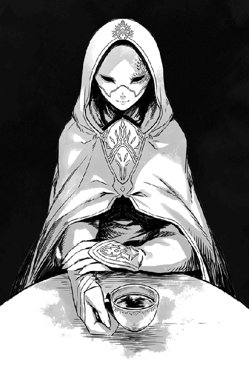
驚きを顔に出さないようにしてショウは呟いたが、ユウリやロクサーヌなどは、小さく声を上げていた。
銀仮面はわざとらしく、自ら勧めてくれた。
「君達の分もある。どうぞどうぞ......別に毒は入ってないよ」
これまた、ショウの危惧を先回りしたような言い方だった。
「なら、もらおうかな」
開き直ったショウは、顎を上げてどさっと手近な椅子に座った。その左右に、ユウリとロクサーヌが座す。全員、油断なく銀仮面を観察しているのは、むしろ当然だろう。
「オヤジの知り合いだってことだが、それがどういう意味を持つのか、あんた本当にわかってるのか？」
ショウはあえて問いただす。
「もちろん」
小さく頷く男を見て、ユウリ達が息を呑むのがわかった。
それを横目で見やり、ショウは慎重に尋ねる。
「もしそれが本当なら、あんたには訊きたいことが山ほどある」
「そうかもしれないが、私が今日来たのは、別のことを語るためだ」
一考することもなく、銀仮面は答えた。
とことん勝手な男である。
「俺にとっちゃ、ソウルバイブル関係の方が重要──」
「いや、そうでもないはずだ。君は今、魔将を捕らえて審問しようとしているだろ？」
小さく声を上げる三人を無視して、銀仮面は微かに頷く。
「私がその力になれると思う。本当はまた夢の中ででも告げようかと思ったんだが......君は疑い深い男だからね。夢だと本気にしないかもしれない」
ショウを真っ直ぐ見やり、銀仮面はきっぱりと言う。
図星だが、やたらとこちらのことに詳しいようで、いい気持ちはしない。
「今回、私は二つのことを知らせにきた。一つ、フェルタクスを誘き出すには、彼にこんな手紙を届けるのがいいだろう」
一拍置き、彼は淡々と言う。
「某所へ来なければ、おまえと魔王が知る秘密を全世界にバラす──日時と場所は好きなように指定して手紙を届ければ、彼は要請に応じるよ」
一斉に口を開いたショウ達を宥めるように手を上げ、彼はわざとらしく続けた。
「もう一つは、妹君のことだ。あれは本当に治療なのだ。少なくとも二度と目覚めないなんてことはないから、安心していい」
反射的に、ショウは立ち上がっていた。
「当然、あそこで俺達に妙な武器庫を見せたのも、おまえの仕業だと思っていいわけだ」
「......正確には、私と仲間の仕業だ」
仮面の下の顔はわからないが、特に動揺する様子もなく、男は冷静に答えた。
「それに、武器庫とは言い得て妙だが、あれが君達の迷惑になるとは思えないな。今後、君達に必要ではないか？」
立ったままのショウは、ユウリ達とそっと視線を交わした。
眼前のこいつが、裏から妙な誘導をしていたヤツなのは間違いなさそうだ。少なくとも、その一人だろう。
「俺の故郷で見るような、人相の悪い般若面みたいなのを被りやがって......そんなヤツのことを、右から左へ信用できると思うか？」
「......信じてもらえないか？ それは困ったな」
他人事のような調子で、彼は首を傾げた。
紅茶をぐっと飲み干してカップを置くと、そっと囁く。
「ならばショウ。君にだけは、仮面の下の素顔を見せてあげてもいい。ただ、後悔しないでほしい。見たとして、それはあくまで君の選択だ」
言われて、ショウは顔をしかめた。
「俺にだけってか？ まあ......それでもいい。じゃあ、顔を見せてくれ。判断するのは、その後にする」
「よかろう......信頼関係は必要だろうから」
身軽に立ち上がると、銀仮面は既に立っているショウの脇を通り過ぎ、二段ベッドが並んだ一画に歩いていった。
ショウは腰を浮かせたロクサーヌ達に安心させるように微笑みかけてやり、肩をそびやかせて後に続く。ベッドとベッドの合間の狭い通路を突き当たり、もはや女性達には角度的に見えない場所まで移動すると、男はようやく立ち止まった。
悠然と振り向く。
「さあ、そばへ」
「......いきなりキスはナシだぞ？」
ほのかな不安を払拭するため、わざと寒いジョークなど飛ばし、ショウは言われるままに彼に近寄る。
至近まで近付いた途端、男は意外なことに思い切りよく銀仮面を外し──ショウはそいつの素顔をまともに見た、見てしまった。
最初は、自分が何を見ているのか、今一つ理解できなかった。
だが、すぐに理解した......自分が今、有り得ないものを見ていることに。息を呑んだショウに、真面目腐った顔でそいつが述べた。
「敵と味方を見誤らないように望む」
ベッドとベッドの隙間から、ふらふらとショウが出てきた時、もちろんロクサーヌとユウリが心配そうに歩み寄ってきた。
「ショウ、どうでした!?」
ロクサーヌがそっと腕に触れたが、ユウリはまず、ショウが出てきた狭い通路を足早に覗きに行き、そこで足を止めた。
しばらくまじまじと奧を見つめた後、振り返ってショウに尋ねる。
「彼はどこです？」
「えっ。そこに──」
いるだろ？ と言いかけ、同じく自分も覗いたショウは、さっきまで彼が立っていた場所に誰もいないのを確かめ、眉をひそめた。
だいぶ経ってから、ようやく息を吐く。
「くそっ。ヤツが人や物だけじゃなく、自分も転移できるらしいのは、どうやら間違いないようだ」
「あるいは、完全に姿を消してしまい、ドアを透過して出ていった......とか？」
口元に手をやったロクサーヌが、おずおずと意見を述べる。
「それなら、わたしが気付いたはず」
ユウリが厳しい表情でさっきまで彼が立っていた場所を睨み、呟く。
ロクサーヌが前に使った「人の感覚に割り込んで自らの姿を消す」という、インターセプションでさえ、彼女は見破っている。
その自負心は当然だと言える......が。
ショウとしては、諸手を挙げて賛成とはいかなかった。ヤツの正体が自分の思ったとおりなら、ユウリをも上回る力を持っているかもしれないのだ。
「それで......どうします？」
ロクサーヌが、ショウにいきなり尋ねた。
「あの方を信じて、手紙を届けてみますか？ フェルタクスは思慮深い人ですし、アプローチの仕方によっては、話し合いができるかもしれませんが」
「......やってみる値打ちはあるだろう」
ショウは上の空で頷いた。
まずはフェルタクスを確保するのが目的なのだし、それに銀仮面の提案は、仮に失敗したところでショウ達の腹は痛まない。
もちろん、手紙を届けるに当たっては、慎重に事を運ぶ必要があるだろうが。
「幸い、俺は透明化の魔法が使える。駅馬車に近付きさえすれば、ヤツらが泊まってる場所に手紙を届けるくらいは簡単だ」
二人に説明しながらも、ショウは既にその先のことを考えていた。
銀仮面の正体が明らかになった今......魔王を陰で操る者がいるというジェイルの予想は、おそらく正しいだろう。
しかし、これはジェイルが予想していた以上にとんでもない事態なのだ。
魔王ヴォルザードがどれほど危うい橋を渡っているのか、ショウは今こそはっきりと気付いてしまった。
そして、その魔王をもし打倒することになれば、その後でどうなるかも。
「......とうに覚悟は決めてたけど、こりゃいよいよ正念場かもな」
ショウは深呼吸した後、静かにそう述べた。
本当にフェルタクスがこの街にいるのなら、どうせ居場所はすぐにわかるだろう。
ならば、後は実行するまでだ。
☆
配下から「フェルタクス様宛の手紙が届いてます」と言われた魔将フェルタクスは、一読するなりショックを受けた。
もちろん、書面に「日時までに来なければ、おまえと魔王が知る秘密を全世界にバラす──」と書かれていたからだ。
心当たりがないならともかく、現実に後ろ暗い秘密を抱え込んでいる彼としては、「くだらぬな！」とは笑い飛ばせない事情があった。
どうせ証拠などあるまいとは思うが、名指しで彼を指名する以上、手紙を出した何者かは、ある程度の見当を付けていると見てよい。
となれば、放置しておくわけにもいかない。
今の時点では、誰が手紙を届けたかについては、まだ謎のままだった。
というのも、「フェルタクス殿へ」とのみ封書に書かれ、封蝋までされたその手紙は、
駅馬車が運んできた荷の中にいつの間にか紛れ込んでいたからだ。
もはや老年に差し掛かった駅馬車の御者は、「はて？ こんな手紙を前の街で袋に入れた覚えはありませんがのう」と自ら首を傾げていた。
いかに不思議がろうと、実際に手紙は郵便物の中に混じっていたし、フェルタクスが滞在中のホテルにピンポイントで届けられている。
ただ、これは魔法で姿を隠せば不可能なことではなく、むしろ方法よりも犯人が誰かが問題だった。
フェルタクスとしては、どうあっても事の次第を確かめるつもりである。
「やれやれ......この手紙が魔族の時代を塗り替えるものにならぬといいが」
魔将の中で最も古株かつ、魔王の覚えもめでたい彼は、書面を睨み付けながら、重いため息をついた。
いざとなれば、自分の責任において、この手紙を出した者......あるいは者達を片付ける必要があるだろう。
気が重いことだが、やらぬわけにはいかない。
☆
ショウもフェルタクスも預かり知らぬことだが、フェルタクスが受け取った手紙については、他にも察知した者がいる。
このアダンの街に到着したばかりの、クリスタリカである。
というのも、フェルタクスの配下には彼女の息が掛かった者がいて、ショウが手紙を送り届けたことは、時を置かずに彼女にも伝わっていたからだ。
元々クリスタリカは、ヘンリーより「特定の魔将にのみ、魔王が何かをやらせているようです」と話だけは聞いていたわけで、以前からフェルタクスに注目していた。
この街まで来たのも、当然ながら彼の行動を見張るためである。
もちろん、帝都ヴァルマグロスを留守にしていることは、父たる魔王には秘密にしてるわけで、彼女としても危険を冒している。
しかしさすがのクリスタリカも、まさか到着するなり、ヘンリーから報告を受けるとは思ってもみなかった。
「フェルタクス様に、何者かが手紙を届けたようです」
恭しく告げ、ヘンリーは低頭した。
「何者かがって、誰よ？」
いつもの色っぽいビスチェ姿のまま、クリスタリカは首を傾げた。
彼女が腰を落ち着けた部屋は、ヘンリーが用意した一時の隠れ家だが、当然ながら、ショウ達が泊まっている部屋より遥かにマシだった。
床は絨毯敷きだし、キャビネットには酒好きの彼女のために、あらゆる銘酒が揃っている。おまけに彼女が座るソファーも、赤いビロード地の上等なものだった。
全てはヘンリーの気遣いだが、あいにくこの程度ではクリスタリカは満足しない。これくらいは当然だと思っているからだ。
「それはつまり......誰かわからないから、『何者かが』と申したわけでして」
などとヘンリーが言い訳した途端、クリスタリカの瞳が真紅に染まった。
「痛めつけられたいの、ヘンリー？」
「し、失礼しましたっ。ただ、決して言い逃れではなく、本当に誰かはわからないのです、クリスタリカ様。手紙は匿名だったようですし、内容についてはフェルタクス様は配下に語らなかったそうなので。ただ、一読してかなり動揺していたらしいです」
「動揺？ あのいつもむっつり顔のフェルタクスが!? 内容が気になるじゃない。ホントにわからないのっ」
「申し訳ありません」
ヘンリーは立ったまま、両手を広げた。
主人の怒りを逸らすためにも、とっておきの情報を告げた。
「ただし、手紙を出した者の推測ならできます。これは、まだフェルタクス様も知らないことですが」
「前置きが長いわよ、ヘンリー」
「し、失礼しました！」
慌てて低頭し、ヘンリーは一気に述べた。
「その手紙とやらの内容はわかりませんが、僕の配下がこのアダンの街で、反乱軍の男を見たと申しております」
「反乱軍!?」
クリスタリカはぐっと身を乗り出した。
お陰で胸の深い谷間がやたらと目についたが、ヘンリーはなるべく見ないようにした。
陰でいつも文句を言いつつ、これまでこの人の元を出奔できずにきたのも、自分が密かに思いを寄せているせいなのだが......そんなこと、どうせこの方はとうに気付いているのだろう。
ヘンリーの胸中に、諦めにも似た感情が去来した。
「それって、ショウの一味ってこと？」
人の気も知らず、クリスタリカはさらに尋ねる。
「その可能性が高いです。どうやら目撃されたその男は、人相風体からデイルと呼ばれるウォーリアだそうで、ショウの近しい仲間の一人ですから。どうやら、コソコソとこの街を偵察して回っていたようで」
「なるほど......送り出した仲間が大勢消えたから、その調査に来てるってわけかしら。十分、有り得ることだわ」
そのまま黙り込んで何やら考えるクリスタリカを、ヘンリーは息を詰めたように見守る。
彼女は豊かな胸の下で腕組みしたまましばらく考えていたが、やがて決断した。
「ヘンリー、フェルタクスを重点的に見張り、あいつに何らかの動きがあったら、どんな小さいことでも、すぐに報告しなさい。それと、街中を洗いざらい調べて、よそ者が泊まっていたら、その全員をチェックするの！ まさかとは思うけど反乱軍の大物、例えばショウ・カムイとかいう人間が、自らこの街に来ている可能性もあるかも。仮にショウがいなくても、おまえの言う通り、手紙の送り主は反乱軍の誰かと考えるのが自然でしょう」
「承知致しました。では、フェルタクス様を引き続き見張り、さらに街も調べてみます」
恭しく頭を下げた後、ヘンリーはふと思いついて尋ねた。
純粋に興味が湧いたので。
「......して、手紙が反乱軍の送ったものだとして、クリスタリカ様はどうなさるおつもりで？」
「それについちゃ、とおってもよい考えがあるんだけど、知りたい？」
クリスタリカは真っ赤な唇を吊り上げ、にんまりとほくそ笑んだ。
ヘンリーは、密かに戦慄した。
この女主人がこういう笑みを見せた後は、大抵は誰かが──あるいは一人ではなく、大勢が死ぬことになると、知っているからだ。
なので思わず、「いえっ、あんまり知りたくはございません」と答えてしまった。
お陰で手加減ナシに殴られ、頬を腫らす羽目になってしまう。
（やれやれ......僕はどうして、この方について行ってるんだろう）
頬を撫でながら、ヘンリーは内心でため息を持つ。
もっとも、彼女がいかに横暴だろうとすぐに手を上げようと、ヘンリーはもう十年近くも仕え、本気で逃げようとしたことなど全くない。
魔王にいかに脅されようと、完全に彼女を見放すことができないのも、おそらく同じ理由からだろう。
「つまり、愛憎入り交じるっていうのは、こういうことかもしれないな」
思わず口に出すと、ソファーに戻ったクリスタリカにまた睨まれた。
「何か言ったかしら？」
「い、いえっ。なんでもありません！」
ヘンリーは逃げ出すように部屋を後にした。
☆
指定された日時は二日後の深夜であり、場所はアダンの街にほど近い丘の上にある、見捨てられた風車小屋だった。
かつては代々風車守が常駐し、小麦を挽く作業に従事していたらしいが、魔族との大戦が起こる遥か以前に見捨てられ、もはや廃墟と化しているらしい。
当然、深夜にそんな所でうろうろする者などいるはずもなく、手紙の主がフェルタクスを害するつもりなら、これほど都合のよい場所もなかった。
しかし、フェルタクスは配下の誰にも同行を命じることなく、一切を伏せて一人で赴いた。秘密を守るという使命がある以上、やむを得ないことだし......それにいざとなれば、自分で敵を倒せる自負心もあった。
驕るわけではないが、彼とて魔将の一人である。
ディープブルーのカンテラ一つを携えて馬で街を出ると、指定された風車小屋がある、小高い丘に向かった。
問題の風車小屋は、既に巨大な羽の部分が全て撤去されていて、白い円筒形の外壁のみが残った、寂しい小屋だった。丘の上にあるので、やや景色がよいことだけが利点だが、それも夜の今はさほど意味を成さない。
一時間も早めに来たせいか、まだ風車小屋の中にも外にも誰もいなかった。
しかしそれでも、フェルタクスはまずは念入りに小屋の中と外周を調べておいた。
いざという時、後ろから刺されてはたまらないからだ。
......一応の点検が終わり、さて気長に相手を待つかという時、呆れたことに見覚えのある女性が現れた。
最初、フェルタクスは馬に乗ってやってくる「誰か」が、手紙の主だと疑わなかった。街が近いとはいえ、こんな辺鄙な場所に、他の用事で来るヤツがいるはずないからだ。
しかし、わざとらしく黒いフードなどを被ったそいつが、間近まで来て「あっ」と声を上げた時、フェルタクスはぎょっとした。
勘違いであれかしと祈ったが、あいにく馬を降りて勢いよくフードを取った「彼女」は、もう間違いなく彼の知る女性だった。
......魔王の第二子であり、常にあのお方を悩ませる娘、クリスタリカである。
「フェルタクスっ。おまえも呼ばれたの!?」
身構えかけていたフェルタクスは、まずこの一言で、いきなり出鼻を挫かれた。
「呼ばれた!? では、クリスタリカ様が手紙の主ではないのですか？」
戸惑って尋ねると、クリスタリカは激しく首を振って近寄ってきた。
「なんの話よっ。あたしは父上の使いでソムニウムに赴く途中、アダンの街に寄っただけよ。そしたら、わけのわからない手紙を持って来たヤツがいて、ここへ来いってあったのっ。おまえもそうなの？」
随分と不安そうな顔で捲し立てた。
「内容が意味不明なんだけど、おまえは心当たりあるかしら!?」
スカートのポケットから折った紙を取り出した彼女は、見せるつもりなのか、フェルタクスに向かってその紙束を差し出す。
「拝見します！」
当然、フェルタクスは手紙を受け取ろうと手を伸ばした。
内容が自分と同じか気になるし、筆跡も確かめたかったからだ。
忠臣である彼は、主君の娘を疑うより、手紙の真偽を確かめる方を優先してしまった。
......故に自分の注意が手紙に向けられたその一瞬、クリスタリカの唇が吊り上がり、邪悪な笑みを浮かべたことに気付かなかった。
☆
指定した時間より早めに宿を出たのはいいが、ショウ達の幸先は悪かった。
なぜか、今宵に限って余計な邪魔が次々に入ったのだ。
いきなり裏道で、ショウが乗る馬の目に砂をぶち当てて逃げる悪戯小僧がいたのは、まだ序の口である。
ようやく暴れる馬を宥め、気を取り直して先を急ごうとすると、今度は妙な物売りが大挙してショウ達を囲んだ。満面の笑みを浮かべ、どうでもいい特産物の菓子や、服などを売りつけようとする。
確かにやたらと物売りが多い街はあるが、このアダンでは今まで一度も見かけていないし、それに今は深夜に近い。
奇妙を通り越して、胡散臭さを感じる。
しかもすげなく断ると、こいつらは大声で苦情を申し立て、周囲の注意を引こうとする。始末に負えないとは、このことだろう。
首を傾げながらも彼らを何とか振り切ると、今度は新たな災厄が襲った。
人が馬に乗ってるのにわざとらしくよろけてショウの足にぶつかり、金切り声で人を痴漢呼ばわりする女がいるわ、街には魔族の兵士がうろうろしているわ──。
最初の悪戯小僧に遭遇した時こそ、「嗚呼っ、大事な時にはいつもこうだからなー」などと呑気に嘆いていたショウだが、さすがに全然見たこともない女に痴漢呼ばわりされた時点で、むらむらと嫌な予感がした。
「何かおかしいっ。さっさと約束の場所へ行こう！」
後に続くユウリ達に呼びかけ、馬を急かせた。
後ろから、また新たな物売りが何か喚いて馬を止めようとしたが、身も蓋もなく無視して振り切った。
クリスタリカの暗躍どころか、彼女がアダンの街に来ていることも知らないショウだったが、これが異常事態であることはわかる。
胸騒ぎは他の仲間も同じなのか、ユウリとロクサーヌ、それにデイルも異議を唱えずついてきてくれた。
ちなみに、ユキナが未だに目覚めないので、ジェレミーは今回、宿に留守番である。
平身低頭してショウが頼み込み、やっと残留を承諾してもらったのだ。こうなると、そうしておいて正解だったかもしれない。
「ショウ、十分に気を付けてくださいっ」
街を出た時点で、併走するユウリがそう警告した。
「それはもちろん！」
ショウは馬上、髪をなびかせつつ答えた。
「でも、場所は開けた丘の上だ。風車小屋しかないし、早々、間抜けな罠には嵌まらない──つもりだっ」
しかし、約束の場所に着いたショウは、あらゆる意味で意表を衝かれた。
男が一人、俯せに倒れている。そばには、彼が乗ってきたらしい馬が、哀しそうに嘶いていた。
ショウは慌てて自分の馬を降り、助け起こそうとしたが......目を見開いたまま動かないのを見れば、おそらく死んでいるのは間違いない。
どう見ても、もはや手遅れだった。
それでも仰向けの姿勢に戻してやると、魔族には珍しく、若者には見えなかった。
しかも、逞しい肉体ながら思慮深そうな顔立ちであり、外見は壮年以上に見える。
もっとも、魔族の寿命からすると、本当は遥かに年上だろうが。シャツの上にレザーアーマーのみを装着していて、目立たない軍装だった。
無論、腰に長剣も吊っているが、抜く前に誰かに心臓を突かれたらしい。
右手は剣の柄にかかっているのだが、既に手遅れだったようだ。
ショウは嫌な予感に襲われつつも、ロクサーヌの方を見る。口元に両手を当てた彼女は、目を潤ませて頷いた。
やはり、ここで待ち合わせていた張本人らしい。
「フェルタクス......ですわ。変わり果てた姿になってしまって」
知人の死体を見たせいか、ロクサーヌはショックを受けているようだった。
ショウの視線を受けたユウリが、ロクサーヌの肩を抱いてそっとその場から遠ざけた。後でショウも慰めるつもりだが......今はより大きな問題がある。
いみじくも、呆然と眺めていたデイルが呟いた。
「俺、ヤバい時には事前に胸騒ぎがするんだけどよ」
ギギィと音が鳴りそうなほどぎこちなく首を巡らせ、ショウを見る。
「まさに今、胸騒ぎがするぞっ」
......いや、そんなあやふやなことを、自信たっぷりに言われても困る。
「そりゃおまえ、今までの経緯を踏まえてこの現場を見りゃ、そこら辺を歩いてる犬猫だって『こりゃヤバい！』と思うんじゃないか？」
フェルタクスの目を閉じさせてやってから立ち上がり、ショウは息を吐いた。
一つだけわかっているのは、あまりこの現場に長居しない方がいいということだ。偶然、彼がここで殺されたわけはない。
「とっとと逃げた方がいいんだが、さすがに風車小屋の中くらいは調べておくかな」
油断なく周囲を確認しつつそう述べたところで──いきなりユウリの叱声が響いた。
「──何者っ」
裂帛の気合いと共に、ギィィィンンと剣と剣が激突する音がした。
「どうした!?」
「ほらみろっ」
ショウとデイルが同時にユウリの方を見ると、彼女はいつもの漆黒の大剣を手に、何者かの剣撃を弾いたところだった。
「あらあら......なかなかやるじゃない！」
一瞬で嘘みたいな距離を飛び退き、その女は言った。
真っ赤な上唇を舌がなぞり、ぎらぎらする真紅の瞳でショウ達を......いや、ロクサーヌを見据えている。
真紅のビスチェとやたら短いスカート、それに赤毛という、この辺の街では見かけないような派手な女である。
「透明化の魔法で近付いて、ついでにロクサーヌも片付けようと思ったけど、なかなか上手く行かないものね」
「あ......姉上」
ロクサーヌが蒼白な顔で返したので、ショウ達にも彼女の正体が知れた。
「魔王の第二子......だったか？ 確か、クリスタリカ？」
瞬時に抜刀し、ショウはユウリと並んでロクサーヌを背後へ庇う。
「ご名答。君、なかなか腕の立つ女を連れてるわね。まさか、気配も姿も消してるのに、剣撃を弾かれるとは思わなかったわ」
「......フェルタクスを殺したのは、あんただな？ どういうつもりだ？」
「そうです、どういうおつもりですっ」
ロクサーヌが悲鳴のような声を上げて前へ出ようとしたので、ショウは強引に左腕で戻した。
クリスタリカは以前にもロクサーヌを狙ってたはずだ。
「前も暗殺されそうになったんだし、迂闊に近付いちゃ駄目だ」
「永遠に城へ戻らない保証があれば、別に殺さなくてもいいんだけど？ でも、そんなの無理よねぇ」
開き直ったらしく、やたらと嬉しそうにクリスタリカが述べた。
「だから、やっぱりいつかは殺しちゃわないと」
「......フェルタクスを始末したのはなぜだ？ ていうか、どうして俺達が会うのがわかった？」
「いいえ、呼び出した理由と手紙の内容までは知らないわよ」
クリスタリカはあっさり答えた。
「でも、あなた達が街に来ていることは後であたしの耳に入ったし、フェルタクスをずっと見張ってれば、手紙が届いたのもわかるわ。もちろん、彼が夜中にこっそり宿を出るのもね。だから、『ああ、密かに待ち合わせする気だな』って気付いたわけ。それがわかれば、あたしがフェルタクスの後を尾行して、同時に手下にあなた達が早めに到着するのを邪魔するよう、命じればいいだけ。だから、こうして先手が取れたの」
なぜか自慢そうに彼女は胸を張った。
しかもショウを見やり、逆に尋ねてきた。
「もう一つの質問に答える前にあたしこそ訊きたいけど、フェルタクスに何の用事があったわけ？」
「魔族がどうして大量の人間を始末してるか、その謎を訊こうと思ってね。......あんたは知ってるのか」
「ああ、なるほど」
涙目で見つめる妹も、殺気だったユウリとデイルもいないような顔で、クリスタリカは頷いた。一応、右手に白金に輝く長剣を下げてはいるが、今はショウの言葉に夢中になっているようだ。
「あなた達も、気付いたわけね......クソ親父の妙な行動に......ふぅーん」
「そんなっ。じゃあ、父上は本当に何かみんなに隠し事があるんですかっ」
どうも今の今まで何かの間違いだと思っていたらしく、またロクサーヌが驚いた声を上げる。クリスタリカは、妹を見据えて嘲笑した。
「だからおまえは、ねんねなのよ。クソ親父が全面的に正しいことをやっているとでも思ってたわけ？ もちろん、人間との戦の経緯からして、後ろめたいことがあるに決まってるじゃないさ！」
斬り裂くように言うと、クリスタリカは気を取り直したように微笑んだ。
無論、優しい笑みには遠く、腹黒さが染み出るような笑みである。
「あたしもそれは知りたいところだけど、まあその件は今後のお楽しみにしましょう。それよりショウ・カムイ、あなたの先の質問に答えてあげる。フェルタクスを、なぜあたしが始末したか」
満面の笑みでショウを見やる。
「むしろ、あたしよりあなたのためなのねー。実際、あなたはこんなトコで遊んでる場合じゃないわよ。今頃、『魔将フェルタクスをショウの一味が闇討ちにしたっ』なーんて話が、アダンの街にいる魔族達に広まっているはずだしね」
「じょ、冗談!?」
ショウより先に、デイルが素っ頓狂な声を上げた。
「くそっ。やっぱり俺の予感は当たってた！」
「どういうつもりだ？」
ショウはデイルに構わずに身を低くし、じりじりと彼女に近付く。
「あんたが俺達に敵対するのはわかるが、どうしてこんな罠に嵌める必要がある？」
「勘違いしてるわね？ あなた達は、別にあたしの敵じゃないわよ」
また実にあっさりとクリスタリカが言い返した。
まだ剣を構えもせず、不思議そうに小首を傾げる。仕草だけを見れば、可愛く見えるが、もちろん見かけだけのことだろう。
「あたしが殺したいのは、そこにいる妹だけ。当面、あたしが魔王になるまでは、別にあなた達は邪魔じゃないわね。むしろ、クソ親父の目を外に逸らしてくれるから、大歓迎だわ」
うふふ......と声に出して笑う。
「だからこそ、今後もがんばって魔族相手に戦争してくれないとねぇ」
「そういう企みかよ」
うんざりしてショウは呟く。
「いちいちむかつくが、あんたには実は個人的に恨みもあってな。確かあんた、妹のユキナにちょっかい出してくれたそうだが、それは確かか？」
はっとしたようにユウリがショウを見た。
もちろん、ショウの怒りの大きさに気付いたからだろう。しかし、今回に限っては、さすがのショウも抑制する気はない。
そもそも、こいつを生かしておいても、何一ついいことはない気がする。
「そうか、あなたは兄妹のつもりだったわね。でも、あいにくあの女は──」
「もうそこまででいい、クリスタリカ！」
いきなり新たな声がして、ショウ達はおろか、クリスタリカまでが息を呑んだ。
第六章 魔王ヴォルザード
その場にいた全員が声の出所を探して周囲を見回したが、最初に発見したのはユウリだった。
彼女がぱっと空の一画を見たことで、ショウも釣られてそちらに目をやり、そして気付いた──まさに今、姿を現そうとする男を。
そいつは宙に浮いていて、上等な仕立てのスーツにクラバット、それにきざなマントまでしていた。
顔が見えた時は一瞬、「ジェイルか？」と勘違いしかけたが、そうではない。似たような格好で似たような顔立ちではあるが、彼よりはやや年配に見えるし、それに薄赤い瞳が発する威圧感は、そばにいるだけで身が震えそうな気さえする。
細い上がり眉と切れ長の瞳を見るに、ハンサムというよりは美しいと形容したくなる顔立ちだった。それでいて、浮ついたところは全く見られない。
要するに彼は、見る者が息を呑むような美貌と、向き合えば自然と居住まいを正さずにはいられない威厳の両方を、ごく自然に兼ね備えていた。
ショウ自身、ただ見つめているだけで肌が粟立つほどに緊張し、冷気が忍び寄るような気がしたほどだ。
ゆっくりと地上に降りたそいつは粋な仕草でマントを捌くと、棒のように立ち尽くすクリスタリカを見やり、素っ気なく告げた。
「おまえの本音はよくわかった、我が娘よ......嘆かわしいことに、予想していたものと、さほど変わらなかったがな」
「──ちょっ」
デイルが素っ頓狂な声を上げたが、ショウとて気持ちは変わらない。
今の発言で、彼の正体がわかってしまったからだ。
「まさか......魔王ヴォルザード」
囁くように独白すると、デイルが頬に汗までかいて目を瞬いた。
「さ、さすがの俺も、ほんの少し手に余るかな......はは......ははは」
棒読み口調で言ってくれたが、別にこいつに限らず、この世界のほとんどの者の手に余るだろう。
しかし、ヴォルザード本人はショウやデイルを見ることもなく、フェルタクスの亡骸のそばに屈み込み、しばらく彼の死に顔に注目した。
やがて深々とため息をつくと、一瞬だけ死者の頬に片手で触れた。
「許せ、フェルタクス。情報を携えた者の手際が悪く、今回の件を予が知るのが遅くなった。おまえの亡骸と対面しようとは、悔やんでも悔やみ切れぬ」
「──お、お父様っ」
今の今まで、言葉もなくヴォルザードを見つめていたロクサーヌが、ようやく声を絞り出す。当然ながら、彼女にとっても意外だったのか、声が掠れていた。
「久方ぶりの再会だな、ロクサーヌ」
疲れたような声で返すと、ヴォルザードはゆっくりと立ち上がった。
今更のようにショウを見て、平板な口調で訊く。
「ショウ・カムイとは、おまえか？」
さすがに、ここでいつもの韜晦をする意味もないので、ショウは黙って頷いた。
そのまま話し合いになるかと思いきや、魔王はいきなり右腕を振り上げ、あらぬ方向へ向かって一喝する。
「無駄だっ、クリスタリカ！」
「きゃっ」
クリスタリカの悲鳴がして、ほんの少し前まで余裕綽々だった彼女が、もんどり打って転がった。途中、半透明状態からまた輪郭がはっきりしたところを見ると、どうやら透明化の魔法で隠れて、この場から逃げようとしていたらしい。
あいにく、魔王の目は誤魔化せなかったようだ。
「お、お父様っ」
ロクサーヌが慌てて、俯せに倒れた姉の上に屈み込む。
「どうか姉上をお許しくださいっ。きっと、話せば姉上も」
「話は後で聞こう、ロクサーヌ！」
厳しい口調で遮ると、ヴォルザードはまたいきなり右腕を一閃させた。
「......あっ」
途端に、ロクサーヌがふらっとよろけ、その場に倒れそうになる。
「お、おいっ」
ショウは慌てて彼女を支え、地面に寝かせてやったが──。
今の不可視の攻撃は、そばにいた他の仲間にも影響を及ぼしたらしく、すぐ近くで鈍い音がして、デイルが棒のように倒れた。
こいつも、今の力で眠らされたクチらしい。
しかも彼は、さらにユウリに向かって同じく手を振り上げた。
「悪いが、おまえにも眠ってもらおう」
「そうはいかないわ！」
「待て、ユウリっ」
ショウが叫んだが、間に合わなかった。
ユウリは自らの力で一瞬にして例の大剣を引き寄せ、猛然とヴォルザードに向かってダッシュしていた。
遅れて、ロクサーヌやデイルを眠らせた不可視の攻撃が彼女を襲ったが、さすがにユウリには効かなかった。
「こんなものっ」
片手で振り払うようにしてヴォルザードの魔力攻撃を散らしてしまい、そのままの勢いで彼の間合いに飛び込んだ。
「マジックアトロフィーが効かぬとはな！ 人間ではないな、女っ」
「問答無用っ。全力でおまえを殺す!!」
ユウリは途方もない剛力で、巨大な大剣を横殴りにヴォルザードに叩き付ける。大気を裂く音が、走り出したショウの耳にまで届いた。
久しぶりに見るユウリの本気である。
「大人しくできぬとあれば、倒すまで！ 我がクリムゾンディスペアーの餌食にしてくれようっ」
飛び退いて見事にこれをかわしたヴォルザードが、自らも真紅の剣を抜く。
「片腹痛いわねっ」
ユウリが負けじと叫び、そのまま飛びかかろうとする。
二人がまた激突する前に、ショウはかろうじて間に飛び込んだ。
「二人共、よせっ」
「──！ ショウっ」
既に矢の如く相手に駆け寄ろうとしていたユウリは、勢い余ってそのままショウの胸に飛び込んでしまった。
寸前で慌てて大剣を消さなかったら、とばっちりでショウまで怪我をしていたかもしれない。それほどの勢いとパワーだった。
ユウリは戦うと決めたら容赦ない女性なので、ショウの敵だと思い定めた魔王に対し、遠慮など全くする気はないのだろう。
「あ、危ないじゃありませんかっ」
「そりゃおまえだろ」
焦り顔のユウリに、ショウはコツンと額と額をぶつける。
「まだ戦いになるかどうかわからない。それに......戦うとしても、これは俺の戦いだ」
「ショウがもし倒れるようなことがあれば、どうせわたしの戦いになります。そうでなくても、あらゆるショウの敵は元々わたしの敵でも──あっ」
早口で抗議するユウリに、ショウはそっと口づけをする。
途端に、ユウリの怒濤のセリフがぶっつりと途切れた。
「わかってる、ちゃんとわかってる」
至近から黒い瞳を見据え、ショウは囁いた。
「でも、仮に戦いになっても負けないさ。俺には奥の手があるからな......ここは俺に任せてくれ」
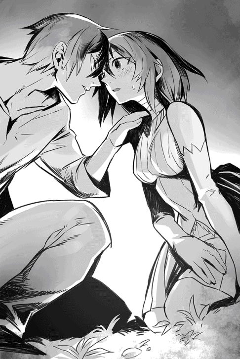
「わかり......ました」
うっすらと赤くなった顔で、ユウリが小さく頷く。
嘘のように素直になっていて、ショウにしても意外だった。
「というわけだ」
ショウはユウリから身を離し、ようやくヴォルザードに向き直った。
彼はまだ真紅の長剣を引っさげたままだったが、様子を窺った後、ゆっくりと剣を収めた。どうやら、話し合う気はあるらしい。
念のため、ショウはまず釘を刺した。
「最初に言っておくが、俺は平和主義者なんだ。そこのところ、間違えないように頼む」
「奇遇だな、予も同じだ」
ヴォルザードはぬけぬけと言ってくれた。
「ただし、戦う他ない時は容赦せぬ」
......おまけに表情はあくまで渋面で、愛想の欠片もなく、先が思いやられた。
☆
ショウがまず話し合いを──と考えたのは、なんと言っても魔王......このヴォルザードには、謎が多いからだ。
長子のジェイルがほのめかすように、どうも先の大戦を始めたのも、彼独自の理由があったように思える。そして、最近になってよく噂で聞く、人間側の囚人が消える事件である。今となっては、詳しい事情に通じているのは、ヴォルザードだけかもしれないのだ。
だからこそ、戦うにしても事情を聞いてからでなければならない。
ロクサーヌやデイル、それにクリスタリカまでもが失神したまま動かない異常な状態だったが、この絶好の機会を逃がすわけにもいかない。
......そう思ったショウだが、相手の言い分は素っ気なかった。
「おまえには二つの道がある、ショウ・カムイとやら」
寄り添うユウリにはほとんど目をくれず、自分の言い分を垂れ流した。
「一つは、即座に反乱軍を解散し、元のアンダープリズンに戻ることだ。この道を選択するなら、我が娘を守ってくれた功績に配慮し、これまでのことは忘れてやろう。もちろん、ロクサーヌは予自ら、我が城へ連れ戻すが」
「全部、きっぱりと断る！」
一考することもなく、ショウは言い放った。
仏頂面になっているであろう横顔を、なぜかユウリがひたむきな表情で眺めていたが、なるべくそちらを見ないようにして告げた。
「もう俺一人のことじゃないんだぜ。もはや反乱軍には大勢の市井の民や、魔族の圧政を良しとしない戦士が集まっている。彼らの自由を得るために陣頭に立つ身の俺が、『魔王に脅されたんで、反乱やめます』なんて寝言が言えるもんか」
「......結果的に、その決断で大勢が死ぬことになってもか」
「そうだ！」
ショウは歯を食い縛って、重ねて頷いた。
「どうあっても降伏はしない。なぜか理由を言おうか、魔王ヴォルザード。俺が今まで観て来た限りじゃ、あんたのやり方は、到底正しいとは思えないからだっ。事実、後ろめたいことも山ほどやってるはずだぞ？ 違うとは言わさない！」
「......否定はせぬ」
驚いたことに、ヴォルザードは素直に認めた。
「では、おまえは二つ目の道──つまり、予と戦う他はない。予はおまえとその仲間を力尽くで鎮圧し、泣き叫ぶ娘を連れ帰ることになるだろう......気は進まなくともな」
「戦うしか道はないって、本当にそうなのか？ 出来れば、事情くらいはちゃんと知りたいもんだ。もちろん、妹のユキナのことについても」
「聞くところによれば、エリーゼはおまえの元に逃げ込んだらしいが、もちろん無事であろうな？」
囁くようにヴォルザードは尋ねた。
処罰しようとしてたくせに、やはり気になるらしい。
「無事だよ......でも、エリーゼじゃなくて、ユキナだ。あいつについても言いたいことがいろいろあるんだが、それも含めて知りたいことは多い」
ショウは満天の星空を見上げ、息を吐く。
「ただし、今の俺にはある程度の推測がついてるんだ、ヴォルザード」
初めて本人の名前で魔王を呼び、ショウはまだ若者にしか見えない戦士を、真っ直ぐに見た。
「......なに？」
ロクサーヌと同じ薄赤い目を見開くヴォルザードに、ショウは遠慮なく告げた。
「八年前に魔族との大戦に敗れ、ロンザリア帝国が跡形もなく滅んだ時、この世界における支配者はあんただってことになっていた。......しかし、本当は違うんだろ？ 大戦前も後も、世界の真の支配者は別にいる。あんたはいわば、世界を治めるための代理人にすぎない」
ヴォルザードは否定も肯定もしなかったが、少なくとも目付きは恐ろしいほど真剣だった。構わず、ショウは自分の考えをぶちまける。
「俺がなぜそう思ったか？ 無論、囚人にされた人間達が、定期的に魔将の指示で連れ出されて消える事件やら、ジェイルが俺に告げた『陰で父上を操っている者がいる気がする』という話など、疑う下地は幾らでもあった。もちろん、あんたがソウルバイブルを禁忌魔法とした件も重要だ」
ソウルバイブルの名前が出た途端、ヴォルザードの肩が僅かに動いたのが印象的だった。ショウは自分の推測に益々確信を持った。
「しかし......恐ろしい考えが兆し、それが俺の中でほのかな推測に育っても、俺自身はあくまで認めたくなかった。もし俺の疑いが真実を衝いてるとすれば、あまりにも救いがないからな。何か別に、全てをスカッと説明する事情があってほしいと、心底願っていたほどだ。......しかし、つい三日前、俺は決定的な証拠を目にした。多分、あんたもピンと来るはずだが......銀仮面の男が、俺の前に姿を見せたのさ」
その瞬間のヴォルザードの表情を何と言おう。
ショウが銀仮面の名前を出した刹那、絶望的な感情が端整な顔を覆い、それが怒りに取って代わった。
やがて大きく息を吐き、ヴォルザードは吐き捨てるように述べる。
「まさか、ヤツらがおまえ達のところにまで現れるとは」
「そう、それこそ俺が唯一、理解できないところなのさ」
肩をすくめ、ショウは賛同する。
「実際、あの銀仮面の正体は明らかだと思うし、おそらくは似たようなヤツの訪問をあんたも受けているはずだ。俺が銀仮面と言った途端、あんたは即座に反応したからな！ となると、なぜ俺の方に来てるヤツが、俺達に協力的なのか説明がつかないが......多分、向こうも一枚岩じゃないってことだろう。他に説明できない」
「ショウ、どういうことなのです？」
慎ましく沈黙を保っていたユウリが、たまりかねたようにショウを見た。
「そう言えば、あの銀仮面が仮面を取った時、ショウは多くを語りませんでした。それと関係がありますか？」
当然の疑問に、ショウは大きく頷く。
「黙ってて悪かったけど、あの時は俺もショックを受けてたのさ。最後まで信じたくなかった。しかし、仮面を取ったあいつの素顔を見た時、もはや俺は自分の推測が当たっていたことを認める他はなくなった。......ヤツの両眼は、真紅の色をしてたんだ」
無理もないが、ユウリがまじまじと目を見開く。
「そう、ユウリが思い浮かべた通りさ。あの濃い瞳は、魔族どころではなかったし、見間違いじゃないよ」
ショウは補足で説明してやった。
一応、魔族の瞳は平時には薄赤い色をしていて、ギリギリ「こんな人間もいるかもしれないな」と思える程度に過ぎない......無論、気が昂ぶった時に色が濃くなることを除けば。
しかし、ショウ達の部屋を訪れた銀仮面の男は、あきらかに不自然なまでに赤い瞳をしていた。最初から白目の部分までがうっすらと赤くなっていて、眼球自体が赤い色で覆われているのだ。
「あんな目をしたヤツが、この世界に他にいるとは思えない。もちろん、あれほど巷間に伝わるグールの特徴と一致するヤツも。銀仮面で顔を隠している理由は、あの瞳を隠すためだと俺は思う」
黙り込んだままだが、ヴォルザードはむしろ最初のショックからは立ち直り、どこか諦めにも似た表情を見せていた。
「そして、ここからは少々頼りない推測だが──あの銀仮面の別口があんたのところにも行ってるとすれば、さっき言ったように、そいつの意図はうちに来てるヤツとは全然違うはずだ。そういや、うちに来た方は『敵と味方を見誤らないように望む』なんてほざいていた。そのセリフを信じるなら、あんたにアプローチした方はむしろ、皆が想像するグールに近いかもしれないな......瞬間移動なんかができるヤツもいるみたいだし、それなら死体の処理も簡単かもしれない」
「そこまで聞けば、わたしにもわかりますね」
気が重そうなショウを見かねたのか、ユウリは後を引き取って続けた。
「おそらくは大戦以前に、当時の魔王の元にグールが現れ、人間の生け贄を要求した。つまり、元々太古の昔に侵攻してきた彼らは、人間を恐れて撤退したわけじゃなく、占領地に自分達の代理を置いただけなのよ」
「遥かな昔には、確かにグールとの協定があったようだ」
意外にも、魔王ヴォルザードが口を挟んだ。
苦しそうな口調ながら、ユウリの説明を補強してくれた。
「当時は予ではなく、父の代だったが......グールと人間の混血である我ら魔族を、彼らは絶好の代理人と見たのだ」
「つまり、グールから見れば、魔族という代理をこの地に置いたことで、占領は半ば完遂されているようなもの」
実に皮肉な言い方で、ユウリは呟く。
「彼らの侵攻は、立派に成功していたということでしょう。このロンザリア世界の人間達は、グールに屈してしまい、占領地の代理を定めたグール達は、なんらかの事情でそのまま引き上げた。そして今も、魔王が彼らのために人間の生け贄を用意している」
ショウは密かに頷いた。
今となれば、ダルトンが残したダイイングメッセージの意味もわかる気がした。おそらく彼は魔将フェルタクスを尾行して、ヤツがグールに囚人を与えるところを見てしまったのだ。メッセージについては推測するしかないが、多分本来は「魔族達は、人間の真の敵ではない」とでも書こうとしたのだろう。
ダルトンはおそらく、この世界に来ていたグールに殺されたのだろう。
「世界がこの真実を知れば、さぞかしおまえに失望するでしょうね、ヴォルザード」
誇り高いユウリは、顎を上げてヴォルザードに言葉の槍を突き立てた。
「──もうよい！」
斬り裂くようなヴォルザードの一言に、ユウリは一応、口を噤んだ。ただし、彼を見る目付きは決して恐れ入った者のそれではなく、むしろ軽蔑するがごとくである。
他世界で女神扱いされていた誇り高い彼女からすれば、当然の話かもしれないが。
「声高に怒りを見せたところで、事実は変わらないぞ」
ショウはヴォルザードから目を逸らさずに、きっぱりと告げる。
「あんたにはあんたの正義があるのかもしれない。しかし、事実を示されて動揺するようじゃ、あんたの抱える正義とやらは、大したことないな」
言い放った瞬間、ヴォルザードは顔色を変え、手が腰に伸びかけた。途端にユウリがショウの前に立とうとし、ショウ自身は己も抜刀しようとする。
しかし──先に冷静さを取り戻したのは、ヴォルザードの方だった。
「......手痛い指摘だが、おまえの言う通りかもしれぬ」
彼は重いため息をつき、そろそろと剣の柄から手を放す。
「認める他はあるまい。確かに我ら魔族──と言うより、当時の侵攻時にはまだほとんど子供に過ぎなかった予と一部の者は、グールが撤退した真実を知っている。彼らは人間世界に自分達の血筋をばらまき、予期せずして魔族という混血を生み出してしまった。聞くところによれば、普通はグールと他世界の種族の間には、子供など生まれぬのが常識だったらしい。このロンザリア世界で人間と交わり、初めてその常識が覆されたことで、グール達はいつになく妥協をしたのだ」
真実を吐き出すヴォルザードは、遠い昔を思い出すような目付きをした。
「それが、魔族をこの世界における自分達の代理人とし、自分達の代理とすることだ。予の幼少の頃には、その事実も多くの魔族が知っていたが、それも千数百年という気が遠くなるような歳月の間に、少しずつ知る者が減った。魔族は長寿とはいえ、そこまで長生きする者はあくまでも例外だからな。当然、十一年前の大戦直前には、知る者は極端に少なかった。突如、予の前に姿を現した銀仮面の男は、当時の盟約を持ち出し、『古き約束を果たしてもらおう』などと申し渡してきた。しかし、当時の状況では、予が勝手に人間達を狩り、引き渡すことなど出来ぬ」
「だから、あの大戦で人間を屈服させ、自由にグール様に差し出せるようにしようってか？ めでたい話だな、おいっ。人間の未来より、自分の血筋の方が大事かよ！」
我慢できずに、ショウは口を挟んだ。
「正直、あんたはもう少しマシなヤツだと思ってたよ、魔王ヴォルザード。他種族である人間の運命を、勝手に決めちまうとは!?」
「非難は甘んじて受けるが、おまえはグールがいかに恐るべき敵かわかってない。予が、最初から二つ返事で古い約束を履行したと思っているのか？ だとすれば、おまえこそめでたい男だと言わざるを得ぬ」
ヴォルザードの瞳は、彼らしくもなく暗く沈んでいた。
罪の意識と、それに深い絶望が感じられた。
「もちろん、最初は断固として断ったとも。幾星霜もの間、グールは姿を消したまま、戻ってこなかったのだ。それでも予は彼らのことを片時も忘れはしなかったが、予以外で古き盟約を知る者など、ごくごく少ない。今更、誰もが忘れた盟約を持ち出されても困るし、誰が不名誉な盟約など履行するものかと思った。予は父や祖父とは違う......そういう自負もあった」
魔王の独白を聞き、ショウは胸中に暗雲が立ち込めた。
「つまり......あんたは敗れたのか、グールに？」
「敗れたなどという生やさしいものではない。手もなくひねられたというのが、正解であろうな」
自嘲気味に呟く彼を、ショウは愕然として見返した。
魔王ヴォルザードが......ロンザリア世界で比類なき強者として、子供でも知るような魔王が......手もなくひねられた？
「おまえが今見せているような顔を、おそらく敗れた予もしていたであろう」
ヴォルザードは軋むような声を出した。
「しかし、言い訳はせぬ。予は、グールの使い走りにすら、全く敵わなかった。赤子に等しいような扱いを受けたのだ。......そこで初めて、予は苦渋の決断をした。幸い、グールが要求する人数は予想よりもかなり少ない。それなら、予が全ての罪を被って世界を治め、彼らがこのロンザリアを狩り場とするような事態だけは避けようとな。同じく当時の盟約を知り、予の敗北を目の当たりにしたフェルタクスのみに事情を教え、全てを秘密にしてだ。何も知らぬ者が事情を知れば、愚かにも当初の予と同じことを考えるであろうから。すなわち、『グールを打倒する！』などと」
ショウを真剣な表情で見つめ、言い聞かせるように述べる。
明らかに、今のセリフはある種の警告なのだろう。
それはわかるが、ショウとしても大人しく引き下がるわけにはいかない。元々、平和主義と言いつつ、反骨的な性格を自負する自分である。真の支配者に「大人しく餌を供給せよ」と言われ、気安く首を縦に振るわけにはいかない。
「おまえの黒い瞳に、グールと戦う意思が見える。残念だが、話し合いの道は閉ざされたようだな」
ショウをじっと見ていたヴォルザードは、そう断じた。
「ならば、予はやはりおまえ達を倒す他ないだろう。......昔話は終わりだ、ショウ・カムイ。ここで、予の手にかかって死ぬがいい」
まだ話は済んでないのに、せっかちにもヴォルザードが腰の剣に手をかける。
ショウとユウリも反射的に臨戦態勢に入ろうとした、その時──。
「駄目です、お父様っ」
いきなりロクサーヌの悲鳴が響き、さすがのヴォルザードも動きを止めた。
「ロクサーヌっ。まだ目覚めぬはずなのに！」
驚いたようにふらふらと立ち上がった自分の娘を見やる。
「......誰かの声が聞こえました、心の中で」
ユウリに支えられたロクサーヌは、凛とした表情で父親を見た。
「おまえも聞いておくべき話だ、という声が。誰の声かは知りませんが、確かにロクサーヌも知っておくべきことでした......とても哀しくて残念ですけど」
「必要なことなのだ、これは」
ヴォルザードの顔には、ショウと対峙した時には見られなかった動揺が窺えた。
「今はわからずとも、必ずいつかおまえにもわかる日が来る。だから──」
「ロクサーヌは魔族としての誇りと矜持を捨ててまで、生きようとは思いませんっ」
泣きそうな顔ではあるが、ロクサーヌはきっぱりとヴォルザードに告げた。
「間違っているのは、お父様の方ですわ！ お願いですから、この上さらに過ちを重ねないでくださいましっ」
魔王ヴォルザードが......世界に比類なき強者と言われた男の肩が、この時ばかりは微かに震えた。拳に固めた指が白くなっているのが、何よりも彼の心情を物語っていたかもしれない。
しかし......彼は最後まで、自分の考えを捨てることはなかったらしく、幾ばくかの沈黙の後、あっさりこう述べた。
「理解してもらえぬのなら、それもやむを得まい。しかし、予は自分が誤っているとは思わぬっ」
次の瞬間、ショウは叫んだ。
「ユウリ、気をつけろっ」
叫ぶと同時に、自らは抜刀してヴォルザードに突っ込んで行く。
まさにそれを待っていたように、彼は叫んだ。
「これは彼と予の戦いだ!!」
右腕を一振りすると、まさにショウを追って駆け出そうとしていたユウリやロクサーヌの眼前に輝く魔法の障壁が現れ、二人を阻んだ。
おそらくマジックウォールの類だろうと思われるが、これは規模が桁違いだった。輝く魔法の障壁が半球状にショウとヴォルザードを覆い尽くし、ユウリ達と完全に遮断している。
しかも、見る見る輝く障壁が白く濁り、外の光景も音も遮断してしまった。こんな魔法、いや結界など、聞いたこともない。
「おまえも、邪魔が入ることは好むまい。違うか？」
悠然と中央へ進みつつ、ヴォルザードが振り向かずに問う。
無論、ショウとしても全面的に賛成だった。もはや仲間の声すら聞こえなくなった中、安堵して微笑む。
「ああ、いいな。余計な犠牲が出ないのは実にいい。なあ、一つ頼みがあるんだが、俺が死んでも、ユウリ達は見逃してやってくれないか」
「......この場では言う通りにしてもいいが、他の者はともかく、あの女と我が娘は必ず予に刃向かうぞ」
ヴォルザードは憑き物が落ちたような顔で苦笑した。
「いつまで約束が履行できるかわからぬが、この場では引き受けよう」
「それでいい、文句はない。こういう戦いの場を提供してくれたあんたに、礼を言う」
素直に礼を述べ、ショウは魔力付与の刀を構えた。
「......最後に訊いておくが、あんたは本当にユキナの父親なのか？ そして、自分の都合で、うちにあいつを預けた？」
自然と、柄を握る手に力が籠もる。
ショウが元いた世界では、ユキナはごく幼少の頃にショウの家に貰われてきた。
当時は健在だったショウの実の父親が、亡き親友から託されたという話だったが......考えてみれば、不思議なことにその辺りの詳しい経緯を、ショウも含めて誰も追及したことがない。
最初から、ショウを含めた家族全員が、何らかのまやかしにかかっていたとしか思えないのだ。
だからこその質問だったが──。
ヴォルザードは無情にも頷いた。
「そうだ。おまえがいた世界へ送り込んだのは、予がグールのことを忘れていなかったからだと言えば、わかるであろう。もう大丈夫だとは思っていても、やはり用心はしなければならぬし、クリスタリカの野望を警戒したのも一因だ。グールと似た力がまだ辛うじて残る予には、姿を変えた我が子を紛れ込ませるくらいなら十分に可能だった故にな」
「なぜ、ユキナだけを？」
「生まれた当初から、エリーゼはひっそりと育てられたのだよ、ショウ。身内であるジェイルやロクサーヌにすら明かさずにな。これは今に始まったことではなく、我が血筋に定められた掟だ。グールに代理人の地位を奪われ、人間同様に滅ぼされぬよう、用心せねばならない故に」
ヴォルザードは苦しそうに述べた。
「しかし、それでもエリーゼは狙われた。ちょうど当時、ロクサーヌが予に敵対する同族から狙われ、実際に殺されかけたが、時を同じくしてエリーゼにも刺客の手が伸びた......全てを秘密にしていたはずなのにだ。あの時はどちらも防ぎはしたが、いつも防げるとは限らない。敵はグールだけではないということも、あの事件ではっきりした。そこで予は決意した。万一を考え、容易く暗殺の手が伸びない場所にエリーゼを隠そうとな......せめて、あの子が力を付けるまでは」
ヴォルザードは大きく息を吐く。
「しかし、予とまるで関係ないおまえの家に預けたのに、なぜかその情報は洩れ、何者かがエリーゼの元へくだらぬ下位種を送り込んだのだ。最終的には未然に防ぎはしたものの、おまえ達の家族にはとんでもない迷惑もかけた。この点、予は言い訳のしようがない」
「やれやれ」
ショウはため息をついて首を振る。
「あんたのような男は決して嫌いじゃないが、しかし俺にとっちゃあんたは、母親が殺された間接的な原因でもある。さすがにロクサーヌのことを考えて遠慮するってのは、難しいな......今の今まで、ずっと彼女のことを考えて、ためらいがあったんだが」
目が眩むほどの怒りをあえて押し殺し、ショウはヴォルザードを睨む。
「もしかして、俺の仲間のウォーリアが北部の廃村で殺されたのも、あんたの差し金か？」
「それは違う」
ヴォルザードは首を振った。
「その直後でフェルタクスの報告を受けたが、おまえの仲間を殺したのは、あそこに来ていたグールだ」
「そうか......じゃあ、そっちの償いはグール共にさせよう」
ショウは唸るように返すと、ヴォルザードを睨む。
「そういや、さっきは剣を抜きかけたな、あんた。武器を使う戦いでいいのか？ 俺は何も遠慮する気はないんで、魔法もバンバン使うといいぞ」
「それでは、あまりにおまえに不利だと思うがな」
低い声でそう答えた魔王ヴォルザードを、ショウは初めて......本当に初めて、心底から憎いと思った。
そういう同情をこいつから受けるいわれはない。断じてないっ。
「高みから見下ろしてんなよ、魔王っ。俺は一切、遠慮しないからな！」
言下に、ショウはヴォルザード目がけて駆け出した。
☆
おそらく、自らの間合いに飛び込まれるまで、ヴォルザードは微動だにせずショウを眺めていたはずだ。
さすがにそれ以前に動きがあれば、察知していたはずである。
だが、ヴォルザードが大人しく棒立ちだったのは、実にショウが刀を彼の頭上に振り下ろそうとするまでだった。
最後までロクサーヌのことが頭にあったショウも、さすがに魔王ヴォルザードを相手には、全力で戦うしかない。
しかし、次の瞬間、ヴォルザードの真紅の瞳がはっきりとショウを捉え、右手が霞むのが見えた。
（や、ヤバいっ）
ぞくりと背筋に冷気が走った瞬間、眼前に真っ赤な閃光が走り、とんでもない剣撃が襲って来た。
おそらく寸前で、ショウは己の刀でヴォルザードの剣撃を受け止めていた。
あいまいなのは、自分の行動を理解する前に、衝撃波のごとき閃光にふき飛ばされ、遥か後方へ吹っ飛ばされていたからだ。
まさに風に吹かれた木の葉のような容易さであり、明らかに人間に為しえるようなことではない。
気付いた時には、頭を下にして地面に叩き付けられる寸前だった。
反射的に身を捻って受け身だけは取ったものの、したたかに大地に叩き付けられ、ショウは痛みに呻いた。
完全には敵の剣撃を受けきれず、押し込まれたのか、微かに肩口を斬られていた。
「いってぇ......優男風の外見のくせに、なんてパワーとスピードだ、くそっ」
思わず口にした瞬間、殺気が吹き付けた。
傷を確かめるのを後にして、ショウは慌てて上を見上げる。ちょうど、舞い降りてきたヴォルザードが血のように赤い長剣を振り切るところで、ショウはぞっとしてその場を転がった。
「ええい、せわしいっ」
痛みを無視して、文字通り跳ね起きる。
ほぼ同時に、ドガッと耳を覆わんばかりの音がして、ショウの身体の代わりに、大地が広範囲に抉られていた。
外したと見るや、ヴォルザードは魔剣を引っさげて無造作に前進する。冷え切った赤い瞳がショウを見据えていた......あたかも、グールそのもののように。
「どうした？ その程度の力で世界を変えることができるとでも思ったか、ショウ・カムイ。自慢のソウルバイブルの魔法はどうしたのだ？ 今使わずして、いつ使う？」
淡々とした口調でヴォルザードがほざく。
「急がねば、早くも勝負が見えてしまうぞ。世を変えようとするおまえの理想は立派かもしれぬが、力を伴わぬ正義など、ゴミ屑同然だと知るがよい！」
「グールにはヘコヘコ頭を下げるエセ魔王が、えっらそうに」
血の混じった唾を吐き、ショウは闘志をたぎらせてヴォルザードを睨む。
痛みなど、もはやどこかへ消えていた。
「勝負半ばのうちに吹きまくるようなボンクラは、最後に血塗れで倒れるって相場が決まってんだよっ」
叱声を叩き付けると同時に、いきなりコマンドワード（短縮呪文）を叫ぶ。
「デビジョン!!」
一瞬で二振りに分離した刀を構えると、ショウは自らヴォルザードに突っ込む。右手の刀で斬撃を放ち、相手が避けた瞬間、今度は左手の刀を横殴りに叩き付ける。
それもあっさりと避けられ、敵は後方へ飛び退いたが、ショウの身体は外したと同時に半回転し、元の構えに戻って両手を持ち上げた。
変形した十字形のような形に双刀を構え、一瞬で二刀に己の魔力を注ぎ込む。
「失せろ、旧時代の魔王っ」
大喝すると、豪快に着地したばかりのヴォルザード目がけて振り切った。
「クロスブレードっ」
「予の力を見誤ったな、ショウ！」
ショウとヴォルザードが同時に叫ぶ。
なんとヴォルザードは、避けるどころか、自らの真っ赤な魔剣を身体の前に立て、逆にショウに向かって猛然と走り出していた。
その魔剣に閃光のごとき光刃が激突し、歪んだ音と共に蛍火のように四散する。
「くっ」
それでも一部は避けきれず、ヴォルザードの痩身から鮮血が舞い、マントが飛んだ。
しかし彼の勢いは止まらず、そのままショウの間合いに飛び込み、魔剣を叩き付けてきた。
再び、死の剣撃が襲って来た時、ショウはまだクロスブレードを発動した直後で、体勢を立て直す暇もなかった。
その瞬間、確かにショウは死神の息吹を間近に感じた。
「誰が死んでやるもんかっ」
怒鳴った瞬間、ショウは即座にルナティックモードに入り、常人を超えた加速状態で死の剣撃を回避していた。
背後の大地が抉れるのも構わず、残像を残しつつ、鮮やかにヴォルザードの死角に回り、同時に双刀を振り上げていた。
声にならない気合いの声が迸り、二刀同時の剣撃が、二筋の青い光の尾を引いてヴォルザードのがら空きの胴体に吸い込まれる。
今度こそ、もらったと思った──が。
二刀同時の剣撃は、あっさりと敵のマジックウォールに阻まれ、ショウは思わずよろめいた。自分は使わないようなことを言ったくせに、これである。
その刹那、魔王はまたもやふわりと背後に跳んで間合いを開けると、いきなりショウに向かって腕を振り上げた。
「予に魔法を使わせるとはなっ──エクスプロージョン！」
「ユキナが使った、魔法の衝撃波かっ」
しかも、妹が発動したそれよりも、遥かに威力が上らしかった。なにしろ、不可視の衝撃波のはずなのに、ヴォルザードと自分の間で大気が派手に歪むのがわかったからだ。
おそらく、元々ユキナにアレを教えたのも、ヴォルザードなのだろう。
空間すら曲げてしまうほどのエネルギー量となると、とてもではないが魔法の障壁で防げるとは思えない。ユキナが使った時ですら、あっさり破られたのだから。
とっさにそこまで考え、ショウは捨て鉢な賭けに出た。
つまり、自らもソウルバイブルの禁忌魔法を放ったのだ。全魔力を集中し、同じくヴォルザードに向かって左手を突き出した。
「永遠（とわ）なる闇よ、我が元へ来たれ！ ブラックウィンドっ」
言下に、漆黒の渦がショウの眼前に生じ、濁流のごとく荒れ狂ってヴォルザードへと向かう。不可視の衝撃波と闇の力は両者の間で真っ向から激突して閃光を発し、巨大なエネルギーを解放した。
「ば、馬鹿なっ」
「や、やりすぎたか！」
激突の余波が襲ってくる瞬間、ショウはギリギリでマジックウォールを展開することには成功した。......しかし、それも簡単に突破され、ショウは容易く意識を飛ばされた。
それでも、気絶していた時間は短かったはずだ。
次にショウが目が開けた時も、まだ周囲に砂塵が立ち込め、きな臭い匂いが満ちていたからだ。おまけに大気には不気味な青白いパルスが時折走り、魔力と魔力の激突の凄まじさを物語っていた。
「いってぇえ......厄日だな、今日は」
魔法発動の瞬間、わざと片方の刀を放棄していたが、今は左腕が明らかに折れていて、どのみちもう握れなかった。
やむなく、右手の刀のみを手に、ショウはふらふらと立ち上がる。全身が痛みを主張し、正直、立っているのもやっとだった。
生温かい風が頬をすり抜けたので、もはやヴォルザードの閉鎖結界は効力を発揮していないらしい。実際、霞んではいるが、今や周囲の景色もちゃんと見える。
まだ、ユウリ達の無事は確認できないが、砂塵が舞う近くに、誰かが倒れているのが見えた。どうも、思った以上に自分はふっ飛ばされ、結界の外にいた誰かのそばに倒れていたようだ。
倒れているあれは、よもやユウリやロクサーヌではないだろうが、急いで確認した方が──とショウが思った時、声がした。
「悪運強く、生き延びたようだな」
ぎくりとする一声に、慌ててそちらを見た。
魔王ヴォルザードは未だに健在であり、足を引きずりながらも、ゆっくりとショウに向かって歩いてくるところだった。
「だが、それもこれで終わりだ。さすがに片腕では予は倒せまい」
「さっき忠告しただろ、相棒」
ショウはわざとふてぶてしく笑い、そのセリフを一蹴した。
「勝負半ばでフカすようなヤツは、最後は必ず負けるのさ」
完璧なヤケクソで言い切り、ショウは右手のみで刀を構える。
「だいたいなぁ、あんたの目は節穴か？ これで長剣と刀が一振りずつだ。ちょうど互角になったところじゃないか、えっ」
「減らず口だけは達者なヤツだ！」
まだまだ元気が余ってそうなヴォルザードが、思わぬ勢いでダッシュした。ショウが歯を食い縛って迎え撃とうとしたその瞬間、聞き覚えのある声がした。
「エクスプロージョン！」
「くっ」
先程自分が放った魔法に襲われ、ヴォルザードはその場を飛び退く。
代わりに、彼が元いた場所が大きく抉れ、ショウが立つ場所まで揺れた。
「おにいちゃーーーんっ」
「ゆ、ユキナっ」
「エリーゼ！」
ショウは息を呑み、さすがのヴォルザードも目を見張る。
見れば、未だに砂塵が向かう彼方から、乗馬した誰かが髪を靡かせてこちらへ来る。全力で馬を走らせているが、シルエットからして、どうもあれがユキナらしかった。
ショウが最初に危惧したような危うさは全くなく、エリーゼ・シュトラウスとして会った時のように、表情が厳しく引き締まっていた。
どうやら、目覚めると同時に記憶が戻ったらしい。
しきりにショウに呼びかけつつ、全力で馬を駆ってくる。
「じぇ、ジェレミーはどうしたんだよっ」
ショウが呻いた途端、ヴォルザードがこちらを見た。
「エリーゼを巻き込む気はない。来た理由はともかく、今は予が魔法で眠らせる。異議はあるまいな？」
「エリーゼじゃなくてユキナだ、馬鹿っ」
すかさず言い返したが、もちろんショウは同意した。
「構わないが、眠らせるのは俺がやる。勝負がつく間くらいなら──」
言いかけ、ショウはヴォルザードの背後を見て、思わず叫んだ。
「危ない！ 避けろ、ヴォルザードっ」
......多分、ユキナの出現で心を乱されていなければ、彼ほどの男なら避けられたはずだ。たとえ、あれほどのダメージを受けていようとも。
しかし、ショウの警告に対して、ヴォルザードがはっとこちらを見た瞬間、もはや彼の運命は決していた。
細身の剣が背後からヴォルザードの胸を貫き、ぎくんと身体が強張った。
「お別れの時ですわね、お父様」
父親の背後で舌なめずりするような声がした。
「く、クリスタリカ......そなたはそこまで」
「名残惜しいですが、そろそろ退場の時ですわよ、お父様！」
父親の言葉を最後まで聞かず、クリスタリカは無情にも刺さった剣を力任せに横へ引く。さしものヴォルザードも血反吐を吐き、その場に崩れ落ちた。
後に残ったのは、全身に血縁者の血を浴びた、クリスタリカのみである。
「貴様っ」
遅れてショウが襲いかかったが、既にクリスタリカは飛び退いた後である。
「あっはっは！」
早くも身を翻し、クリスタリカは砂塵の彼方へ走り去るところだった。
「そんなへろへろの状態で、あたしを殺せるもんですかっ。むしろ、あたしがおまえを見逃してあげるんだと知りなさいなっ」
「待ちやがれっ」
馬を降りたユキナが小さく悲鳴を上げたのを聞いて、足を止めた。
振り向けば、口元に両手をやったユキナが、信じ難いものを見るような目で、ヴォルザードを見ている。
「お、大いなる......君」
「ユキナ、記憶が戻ったのか!? くっ」
目も眩む痛みを堪え、ショウは唇を噛む。
妹に気を取られている間に、敵の姿は見えなくなっていた。
☆
ショウが目眩を堪えきれず、その場に座り込むと、まるでそれを待っていたかのように、ロクサーヌとデイルを従えたユウリがやってきた。
「......無事でよかった」
ショウはほっとして手を振ってやる。
「寸前で魔法防壁を展開したので、なんとか──ショウっ」
説明の途中でショウの怪我のひどさに驚き、ユウリは飛んで来た。
同じくロクサーヌも駆け出しそうになり......そして、彼女はショウの近くに倒れている父親に気付いたらしい。
「そんなっ」
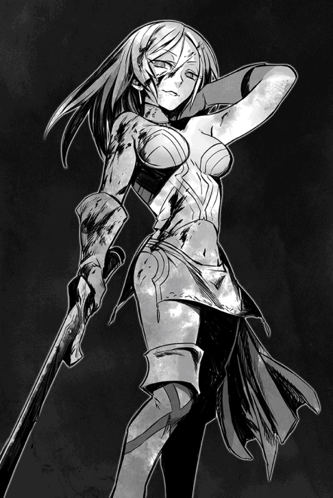
一声上げると、それこそあっという間にヴォルザードの元へ駆け寄っていった。
「俺じゃない。トドメを刺しやがったのは、息を吹き返したクリスタリカだ」
ユウリの問うような瞳に、ショウは憮然として答える。
情けないが彼女の肩を借り、頼んだ。
「ヴォルザードの様子を見よう」
あの女に抜かりはないと思うが──というセリフは飲み込み、ショウはユウリと共にかつての魔王のそばへ行こうとする。
彼の元にはもうユキナが駆けつけ、強張った表情で治癒魔法に入ろうとしているところだった。
しかし、ヴォルザードの方は何かしきりにユキナに囁きかけているように見えた。
気が焦るショウの腰を、ユウリが支えてくれた。左腕に触れないように気を付けつつ、ショウに肩を貸してくれている。
小さく礼を述べ、ショウは倒れたヴォルザードの元へ急いだ。
無論、ショウとヴォルザードをぽかんと見比べていたデイルも、慌ててついてきた。
魔王ヴォルザードは、もはや死に瀕していた。
薄赤い瞳に既に力はなく、呼吸も浅い。
娘のロクサーヌの膝に抱かれていたし、そばには唇を噛むユキナもいて治癒魔法を行使していたが、最後にクリスタリカから受けた傷が致命傷となっているらしい。むしろ、即死しなかったのが不思議なほどである。
ソウルバイブルの禁忌魔法で桁外れの治癒魔法を使えるショウにしてからが、これはもう手遅れだと思ったほどだ。
それでも、ショウは可能な限り急いで彼の前に跪いた。
「待っててくれ。俺がなんとか」
「手遅れだ......ショウ」
ヴォルザード本人が微かな声を出した。
「お父様、でもっ」
泣き濡れた顔のロクサーヌが何か言おうとしたが、彼は微かに首を振った。
「いいんだ......これも報いだろう。我が娘クリスタリカの手にかかる方が......グールやショウに倒されるよりは......まだマシだったかもしれぬ」
切れ切れの声に、ロクサーヌが顔を強張らせる。
「あ、姉上がっ。では、さっき逃げたのはそのため！」
ヴォルザードはまた微かに頷いたが、もはやそのことに関心はないらしかった。
代わりに苦労してユキナとロクサーヌに微笑みかけ、囁いた。
「二人共......くれぐれも助け合うのだぞ......ショウと同じ道を行く気なら......なおさら」
次にショウの方に目を向け、呼びかけた。
「ショウ......こちらへ」
「なんだ、なんでも言ってくれっ」
自分も重傷だったが、ショウは可能な限り、彼の上に身を屈めた。
「こ、心......せよ」
それでもよく聞こえず、やむなくほとんど彼の口元まで耳を寄せてしまう。
「どうした、何が言いたい!?」
それでようやく、聞こえた。
ヴォルザードの遺言に等しい、血を吐くような戒めの言葉が。
呆然として身を離すと、今度は代わりにロクサーヌが父の上に屈み込む。
見るともなしにそれを眺めつつ、ショウはぐるぐると考えていた。
──これまで、この魔王ヴォルザードが、良くも悪くも世界に対して責任を負っていた。
そのやり方に賛同はしないが、ショウに言わせれば、その重責を思うだけでため息が出る。おそらく、心休まる日はなかったはずだ。
そして今、希代の魔王は重責から解放され、死を迎えようとしている。
......今後、世界に対して責任を負うのは、ショウ自身になるかもしれないのだ。
終章 ヤツらが帰ってくる
このショウとヴォルザードの戦いと、そしてクリスタリカによる介入は、結果的にショウが悪者になることになった。
なぜなら、クリスタリカは逃げた直後に自分の情報網をフルに使い、魔族達に大嘘を広めたようなのだ。
すなわち──反乱軍のリーダーショウが、魔王ヴォルザードを殺した、と。
事実はそうではないが、あの時点でクリスタリカが父を暗殺する瞬間を見た者は、ショウ自身を除けば、途中で現れたユキナ一人である。
いや、本当は遠くからユウリも見ていたのだが、魔法同士が激突した直後のことであり、砂塵の舞う中で陽炎のようなシルエットを見たに過ぎない。
唯一の証人であるユキナのみは、喜んでショウの無罪を主張してくれるだろうが......実は、彼女自身にも頭の痛い問題がある。
出自の件を、魔王ヴォルザードが教えずに逝ってしまったからだ。
ユキナは最後にヴォルザードから声をかけられていたが、あれは出自の話などではなく、単なる謝罪の言葉だったらしい。
教えないのが彼の遺志となると、真実を話すか否かの決断は、ショウに委ねられたということになる。
ちなみに今現在、ユキナならぬ「魔将エリーゼ・シュトラウス」は、同じくクリスタリカから裏切り者呼ばわりされている身である。
当然、ショウの弁護をするどころではないし、魔族達が彼女の証言を信じるとは思えなかった。
「いや、本当にすまなかった」
街へ戻る前に、遅れてユキナを追って来たジェレミーが追いつき、ショウに低頭した。
「大人しく眠っているだけだったので油断したようだ。ちょっと目を離した隙に、消えていたんだ」
「気にするな」
とショウは笑って首を振った。
そもそも、ジェレミーとて一人で四六時中、ユキナを見ているわけにはいかない。
ユキナがたまたま一人で目覚め、しかも元の記憶を完全に取り戻したとなれば、ジェレミーを出し抜いて宿を抜け出すなど、造作もなかったはずである。
......このように、ショウにとってヴォルザードとの戦いは、真に苦い結果に終わったが、それでも唯一の慰めは、クリスタリカがいかに嘘を広めようと、娘のロクサーヌがヴォルザードから真実を聞いていたという点だ。
息を引き取る前に、ヴォルザードはロクサーヌとユキナに、自分を刺したのはクリスタリカだとはっきり明言した。
これは、ショウ達にとっても幸いだったかもしれない。
なぜなら、ロクサーヌの怒りは、今度こそはっきり姉に向いたからだ。
「わたくしは、姉上を甘く見ていました......いいえ、もっとはっきり言えば、自分自身に人を見る目がなかったのです」
目を真っ赤にしたロクサーヌは、なぜか以前の一人称で語る癖が消えていた。
心境の変化があったらしい......無理もないことだが。
その証拠に、彼女はショウにはっきりと告げた。
「わたくしは必ず、クリスタリカをこの手で倒します！ お父様を殺された無念、晴らさずにはいられませんっ」
そう宣言された時、ショウは迷いはしたものの、反対はしなかった。
自分とて、たとえば妹のユキナが同じ目に遭えば、復讐を考えるだろう。いや、むしろ命の問題だけではなく、クリスタリカのせいでユキナがこんな状態になったと聞いただけで、もう殺意を覚えているのだから。
だから、ロクサーヌに対しても「そうか」と短く答えるに留めた。
内心では、「彼女にやらせず、俺が倒そう」と考えてはいたが。
身内同士の殺し合いなど、クリスタリカだけでたくさんである。
☆
真っ直ぐソムニウムに戻ったショウは、もちろんジェイルや他の主立った仲間を集め、今回の件を全部説明した......魔王の最後の言葉を除いて。
ショウが仮住まいしている屋敷の大部屋は、熱気が充満し、自然と汗が噴き出すほどだった。
まだ体力が戻りきっていないユキナを除き、テーブルについたショウ達五名の他に、四方の壁にびっしりと人間と魔族が集まっているからだ。
ショウが説明を終えると、魔王ヴォルザードを最後に看取ったロクサーヌが、ショウの証言の正しさを補強した。
娘の彼女が言うのだから、「クリスタリカがお父様を殺したのですわっ」という怨嗟の言葉には、千金の重みがあった。
その場にいた誰も、「本当はショウが殺したのでは？」などと疑う者はいなかったのである。
「......なるほど」
重苦しい沈黙を振り払うように、魔王の長子ジェイルが頷いた。
さすがの彼も今は表情が暗く、語る口調もとことん沈んでいた。
「無論、僕は妹の言葉を信じる。だから、ショウの証言も当然、信じるとも。今後、魔族側にもできる限り真実を広めようと思う。クリスタリカが新たな魔王となることは、なんとしても避けねばならない。それにしても......まさかあいつが継承儀式抜きで、魔王の座をもぎ取ろうとするとは思わなかった」
最後は独白だったが、ジェイルはすぐに表情を改め、ショウを真っ直ぐに見た。
「しかし、一番重要なのは、我が父が実は仮初めの支配者だったことだろうな。我々の真の敵は他にいるわけだ」
「その通りです」
ショウは大きく頷く。
「クリスタリカは、ヴォルザードの告白を聞いてなかったから、真実はまだ知らないはず。重要なことは他にあるのに、あの女は自分の権力を固めることにまず集中するでしょう。これは、魔族全体にとっても危ういことだと思いますね」
「同感だが......時にショウ、君は父上から直々に何か言われたのだったな？ さっきの話の中ではそこを飛ばしていたように思うが、息子として僕は聞いておきたい。父は最期に、君に何を告げたんだ？ 銀仮面などの謎も多いが、僕が今どうしても知りたいのは、その言葉なのだ」
ジェイルがずばり尋ねると、みんな知りたかったらしく、人間魔族を問わず、部屋中の視線がショウに集中した。
正直、この時のショウは、魔王が彼に告げた最期の言葉を教えるかどうか、ひどく悩んだ。最初に説明する時に彼の遺言を省いたのは、教えていいものかどうか迷ったからである。
しかし、ジェイルはそんな迷いを見透かしたように重ねて言った。
「僕は、父の最期の瞬間に立ち会えなかった。上手くいってなかったのは確かだし、そのやり方にも全然賛同はしていないとはいえ、それでもこの上ない無念だ。実の息子としては、やはり父の最期の様子は、余さず知りたいよ」
「わかりました」
ショウは吐息をつき、決断した。
ジェイルの言うのも道理だし、それに黙っていても早晩、皆が知ることになるかもしれないのだ。
......ヴォルザードの予言した通りになるなら。
「魔王は亡くなる直前、俺にこう告げたんです」
食い入るように見るロクサーヌやユウリ、それにジェイルなどをぐるりと見渡し、ショウは一気に告げた。
「心せよ、ヤツらが帰って来る」
──それが、魔王ヴォルザードが俺に告げた最期の言葉でした。
ショウは一気に語り、そのまま目を伏せる。
この言葉について、多くを語る必要はないし、説明もいらないはずだ。先程のショウの話を聞いた者なら、誰であろうとわかるはずなのだ。
ヤツらとは誰を差すのか、などということは。
しかし、ショウは自分自身に向けてあえて呟いた。今後、いつ何処にいようと、片時も忘れないために。
「ヤツらが帰って来る！」
物語的には、一区切りまで来た感じでしょうか。
......以前、どこかで書いた覚えがありますが、ファンタジー世界で敵を想定する時、だいたいどんな凝った敵を作り出しても、なぜか「魔王」という言葉の持つインパクトには敵わないわけです。
ダークフィア---とかザ・ワンとかブラックマンとか暗黒大魔神とか、自分なりに巨大な敵を考えたつもりでも、「魔王」より強い気がしないわけです。
（前半はどこかにホントにいる敵かもしれませんが、念のために書いておくと、私が今、三秒で考えた敵ですよ）
元々は大作ゲームから始まったボスキャラ風の設定だと思いますが、とにかくいつしか「ファンタジーといえば、敵は魔王」という認識が定着してますね。
事実、あらゆる年齢層に「なるほど、敵は魔王か！」と納得してもらえる、最もわかりやすい設定でもあると思います。
多元宇宙に１００のファンタジー世界があるとしたら、９９の世界では魔王がボスキャラ、みたいな。
つまりは、これくらいのネームバリューがあると思って間違いないです。
当然、その９９の世界では、勇者がヒーロー役を担っていることでしょう。魔王と勇者、シンプルかつ、最強のキャラ設定ですね。
勇者はともかく、魔王は本作にもがっつり登場していました。
その魔王がついにショウと激突するわけですが、なんと彼は──いえ、あとがきから読む方のために、多くは書きません。
ぜひ、魔王とショウとの戦いを見届けてほしいと思います。
この本を出すに辺り、ご助力をくださった全ての方達にお礼を申し上げます。
最後はもちろん、この本を手にしてくださったあなたに、精一杯の感謝を。
吉野 匠 拝
著者プロフィール
吉野 匠
Yoshino Takumi
シリーズ累計115万部を突破した『レイン』（アルファポリス）を筆頭に、『ユート 拉致から始まる異世界軍師』（このライトノベルがすごい！文庫）、『アヴァロン42』（ぽにきゃんＢＯＯＫＳ）等、幅広い作品で活躍中。
ＨＰ「小説を書こう！」
ショウⅢ ─真実の果てに─
2015年３月１日発行 ver.1.0
著 者 吉野 匠
発行所 TOブックス
〒150-0011 東京都渋谷区東1-32-12
渋谷プロパティータワー13階
03-6427-9625（編集）
0120-933-772（営業フリーダイヤル）
Ⓒ2015 Takumi Yoshino
※無断で複製・複写・データ配信などをすることは、かたくお断りいたします。
本電子書籍は下記にもとづいて制作しました
ショウⅢ ─真実の果てに─
発行日 2014年11月１日 発行
本作品の全部または一部を無断で複製、転載、配信、送信したり、ホームぺージ上に転載することを禁止します。また、本作品の内容を無断で改変、改ざん等を行うことも禁止します。
本作品購入時にご承諾いただいた規約により、有償・無償にかかわらず本作品を第三者に譲渡することはできません。
本作品を示すサムネイルなどのイメージ画像は、再ダウンロード時に予告なく変更される場合があります。
本作品は縦書きでレイアウトされています。
また、ご覧になるリーディングシステムにより、表示の差が認められることがあります。